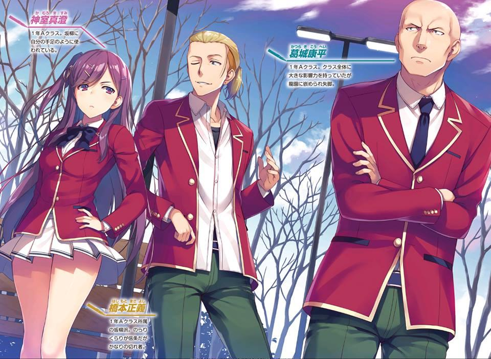
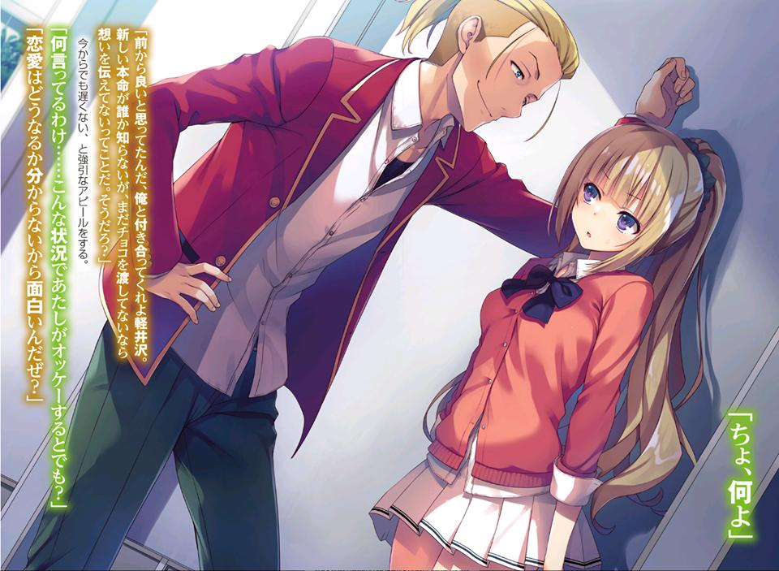
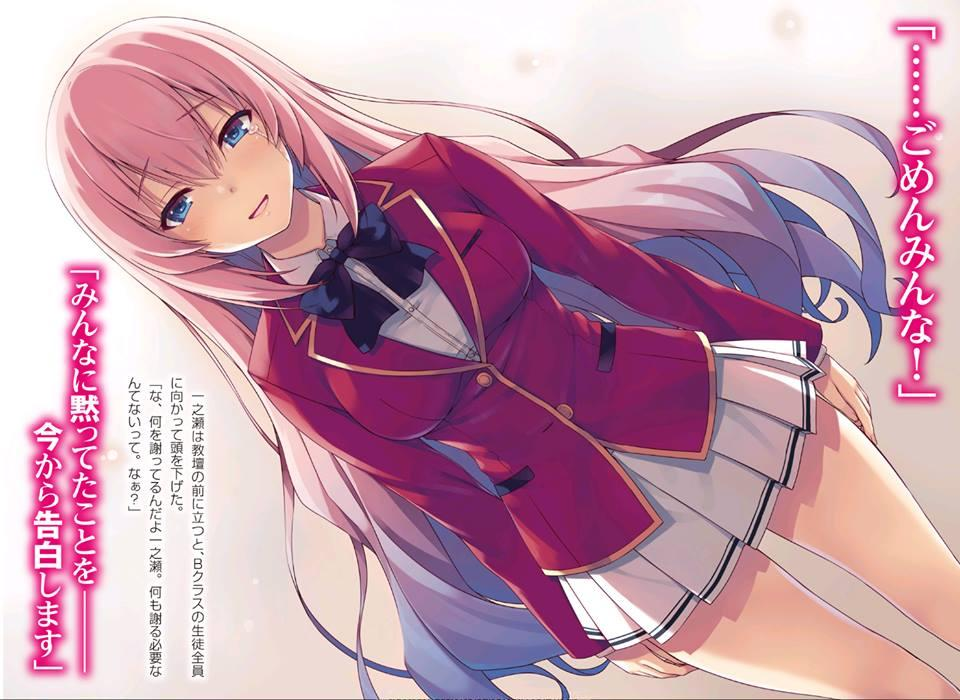
GLADHEIM
TRANSLATIONS
Youkoso Jitsuryoku Shijou Shugi no Kyoushitsu e - Volumen 9
EL MONÓLOGO DE ICHINOSE HONAMI
Nunca he pensado en mí misma como una “buena persona” o una “mala persona”.
Me gusta pensar que me las he arreglado para convertirme en un "yo honesto", tal como quería mi madre.
Tuve una vida cómoda tanto en la primaria como en la secundaria. Tenía muchos amigos, chicos y chicas.
Los deportes me resultaron bastante difíciles, pero me entregué a ellos tanto como a mis estudios.
Para cuando estaba en el tercer año de secundaria, ya había conseguido el título de presidenta del consejo estudiantil que tanto anhelaba.
Incluso me ofrecieron una plaza en una preparatoria privada con una beca.
Una vida escolar divertida. Una vida privada feliz.
Pero.... cometí un único error.
Un error que nunca podrá ser perdonado, un error que nunca debí cometer.
La cara de enojo que mi madre, que se había desmayado debido a una enfermedad, hizo en ese momento.
Sus lágrimas en ese momento.
La cara amarga que mi hermanita hizo después de haber sido herida y quedar nada más como una cáscara de sí misma.
Nunca podré olvidarla.
Aún ahora, de vez en cuando recuerdo ese momento.
Mis dedos temblorosos.
Mi cuerpo tembloroso.
Un corazón teñido de negro.
Desperdicié la mitad de mi tercer año de secundaria y terminé convirtiéndome en una recluida por medio año.
Pero en cierto día, eso terminó.
Cuando me enteré de la existencia de esta escuela, sentí la necesidad de ponerle fin.
Para traer de vuelta las sonrisas de mi madre y de mi hermanita.
Por eso no huiré de mi “respuesta”.
Me enfrentaré a ello directamente.
Sí, ese es el juramento que hice.
Pero...
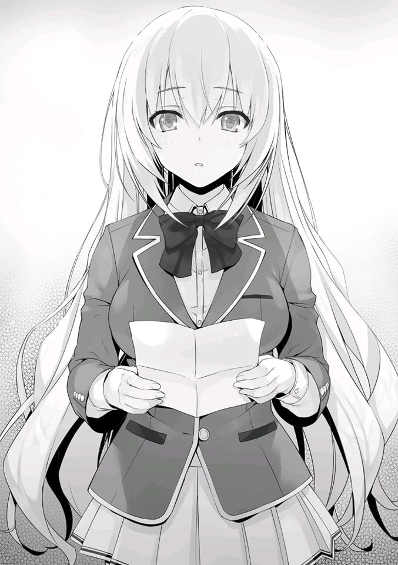
En esta escuela en la que me matriculé mientras abrazaba mis sueños, me enfrenté a una prueba.
Encontré una carta y me congelé.
A mi alrededor, mis compañeros de clase se volteaban hacia mí con miradas curiosas.
Leí el contenido de la carta una y otra vez.
Y no importa cuántas veces la leyera, las palabras no cambiaban.
“Ichinose Honami es una criminal”.
PARTE 1
La chica se había sentido extremadamente nerviosa desde mucho antes de que ocurriera el incidente.
En la sala del consejo estudiantil en un día libre.
— Primer año, Clase B, Ichinose Honami, ¿eh?
— Sí.
Exprimió su voz desde el interior de su garganta.
La expresión de Ichinose Honami era bastante tensa cuando estaba frente al Vicepresidente Nagumo.
Una entrevista especial personalizada.
— ¿Qué te dijo el presidente del consejo estudiantil?
— Que aún no es el momento...
Ichinose, que había querido formar parte del consejo estudiantil, se presentó ante las puertas que conducían al consejo no mucho después de haberse inscrito.
Sin embargo, el presidente Horikita entrevistó a Ichinose y rechazó su solicitud al consejo estudiantil.
Ichinose, que deseaba tener un lugar en el consejo, se sintió decepcionada por ello, pero al enterarse de sus circunstancias, el Vicepresidente Nagumo se había acercado a ella.
Había tres razones detrás de eso.
Una es que ella pertenecía a la clase B, como él, y no a la clase A.
Otra razón es que su capacidad académica es sobresaliente.
Y la última razón es que ella califica como una persona extremadamente atractiva. Algo que Nagumo busca en el sexo opuesto.
Es principalmente porque Ichinose cumplió con ese último criterio. Los dos primeros son un bono.
Lo importante es si vale la pena mantenerla a su lado como su propiedad personal.
— Escuché que estuviste nada menos que en el consejo estudiantil durante la secundaria.
— Sí, por eso quiero unirme al consejo estudiantil en esta escuela también.
Ichinose dijo la verdad. Y también una mentira.
— Lo escuché de tu maestra, Hoshinomiya-sensei. Parece que tus resultados en los exámenes de ingreso también fueron excelentes.
— Muchas gracias.
Ella aceptó su alabanza con humildad.
Pero no podía mirar a Nagumo a los ojos.
— Para ser honesto, eres increíble.
— Pero... el Presidente Horikita no me reconoció...
Ichinose, con una sonrisa amarga, se despreció.
Fue porque esperaba formar parte del consejo estudiantil.
A pesar de ello, quedaba una pizca de sonrisa.
Porque sentía que no le daría una buena impresión al estar deprimida.
— Es porque el presidente Horikita es una persona estricta. Lo más probable es que ya te haya rechazado de antemano porque no estás en la clase A.
Ese hombre pone mucho énfasis en el estatus.
— Ya veo...
Fue una mentira que Nagumo dijo.
A primera vista, Horikita Manabu parece el tipo de persona que se obstina por un estatus como ese. Sin embargo, la verdad es exactamente lo contrario.
Evalúa a la persona, ya sea de la clase D o de la clase A, y es el tipo de persona que evalúa el talento.
Pero para Ichinose, que había sido rechazada, las palabras de Nagumo sonaban a verdad.
— Me pregunto si me ascenderán a la clase A para poder unirme al consejo estudiantil.
— No estoy seguro de eso. Aunque te asciendan a la Clase A, el Presidente Horikita puede que no te reconozca. En otras palabras, Ichinose, no fuiste considerada a la altura desde el momento en que te inscribiste aquí. No importa cuánto esfuerzo pongas ahora, el Presidente Horikita nunca aceptará a una estudiante con la etiqueta con la Clase B.
Ante ese cruel anuncio, la sonrisa que quedaba en la cara de Ichinose desapareció.
— Pero tú estás en la clase B, ¿verdad, Nagumo-senpai? Y sigues siendo vicepresidente, así que eso significa...
Nagumo inmediatamente extingue esa fugaz esperanza suya.
— En mi caso hubo dos razones. Una es que me uní al consejo estudiantil antes de que el presidente Horikita llegara al poder. En otras palabras, fue durante el reinado del presidente del consejo estudiantil de tercer año el año pasado. Pero en aquel entonces, sólo el vicepresidente Horikita se
opuso a mi nombramiento en el consejo estudiantil hasta el último momento.
La expresión de Ichinose se nubló.
Viendo eso, Nagumo sintió alegría en su corazón.
Decidió entonces que definitivamente conseguiría que Ichinose fuera nombrada para formar parte del consejo estudiantil.
Y que la amaría como si fuera de su propiedad.
— Una cosa más, soy consciente del talento que poseo. Me enorgullece decir que soy alguien que normalmente habría sido asignado a la Clase A.
Precisamente por eso, cuando solicité la admisión en el consejo estudiantil, confesé toda la verdad detrás de mi designación a la Clase B. Sin ocultar nada.
— ¿Confesar....?
— Sí. He demostrado que cuando se trata de habilidad, no soy inferior a la clase A. Eso dio como resultado mi posición actual.
— La confesión es la causa de eso... ¿qué fue para ti, Nagumo-senpai?
Ante esas palabras, Nagumo sonrió internamente.
— Lo siento, pero no tengo intención de responder a eso. Ahora mismo, la que está siendo entrevistada eres tú, Ichinose.
— ¿Yo....?
— Aún no estoy convencido. Normalmente hablando, es extraño que no estés en la clase A. Tus notas son excelentes, no hay nada malo con tus habilidades para relacionarte con otras personas. Y una vez fuiste presidenta del consejo estudiantil. Pero, ¿por qué la Clase B? Debe haber alguna razón para ello.
Ichinose no pudo ocultar su nerviosismo, no cuando Nagumo lo señalaba con astucia.
Pero esto es meramente una hipótesis de Nagumo basado en la información que obtuvo de la profesora de Ichinose, Hoshinomiya.
— Dime cuál crees que podría ser la razón. Y si te considero una estudiante digna de la clase A, entonces asumiré la responsabilidad y te aceptaré en el consejo estudiantil.
— ¿Es eso... posible?
— La autoridad del presidente Horikita es absoluta. ¿Pero qué pasa con el consejo después de que Horikita-senpai se gradúe? Si no se permite el ingreso de nuevos alumnos de primer año, será imposible que el consejo estudiantil forme a sus sucesores. El que se preocuparía por eso sería el futuro presidente del consejo estudiantil, yo, ¿verdad?
— .... Supongo que sí....
— Alguien que no puede aprovechar esta oportunidad no tiene cabida en el consejo estudiantil.
Ichinose tenía un secreto que ha estado guardando.
Los recuerdos de ella encerrada dentro de su habitación durante seis meses durante su tercer año de secundaria volvieron a su memoria.
— Lo que diga aquí...
— No saldrá de esta habitación, por supuesto. Tu secreto es nuestro secreto.
Se había aferrado a su pasado sin decírselo a nadie. Pero, ella necesita enfrentar su pasado.
Es precisamente porque perdió la confianza de los demás que necesita confiar en los demás.
— YO.... YO…
Ichinose habló sobre todo.
Sobre su “'error”.
LAS INTENCIONES DEL PRESIDENTE DEL CONSEJO ESTUDIANTIL
A principios de febrero, después de que el campo de entrenamiento terminó y del regreso a la Advanced Nurturing High School. Sakayanagi Arisu de la clase A de primer año estaba en la sala del consejo estudiantil.
Colocando su sombrero favorito en el escritorio, se enfrentó al presidente del consejo estudiantil, Nagumo Miyabi, de la clase A de segundo año.
— La sala del consejo estudiantil se ha vuelto bastante llamativa. Es completamente diferente de como solía ser.
Para decirlo bien, es primitivo y apropiado.
Para decirlo de forma mezquina, se ha convertido en una sala extremadamente formal. Incluso los tapices se han cambiado y los accesorios que parecen pertenencias personales de Nagumo se han trasladado aquí al por mayor.
En vez de una habitación del consejo estudiantil, parecía más bien una habitación que existe por el bien de Nagumo.
Se han llevado a cabo renovaciones de este tipo.
Un lugar que existe casi como una especie de símbolo de su poder.
Esa es la impresión que Sakayanagi tenía de ella.
— ¿Por casualidad, Horikita-senpai te recomendó para el consejo estudiantil?
Ante la visita de Sakayanagi, que parecía no tener nada que ver con el consejo estudiantil, Nagumo planteó esa pregunta.
— Desafortunadamente, no soy apta para ese papel, así que no me invitaron a que lo hiciera.
— No tiene buen ojo para ese tipo de cosas. Tanto tú como Ryuuen.
Tenemos muchos alumnos interesantes este año, ¿no?
— Entonces, ¿quizás quieras decir que eres diferente, nuevo presidente del consejo estudiantil?
Nagumo se rió levemente.
— Por supuesto que te daría la bienvenida. Pero entonces tendrías que ser de mi propiedad.
Respondiendo así, Nagumo acarició la cabeza del conejo de peluche que estaba cerca de él.
¿Es de él? ¿O tal vez es de una de las chicas que lo rodean?
Ser de su propiedad. En otras palabras, significa que no tiene interés en tomar prestado el talento de otros. Toma decisiones basándose sólo en la apariencia.
Podría haberlo pasado por alto, pero Sakayanagi atrevidamente eligió seguir ese tema.
— Me pregunto qué debería hacer para obtener tu sello de aprobación.
— Muéstrame una cantidad apropiada de talento. Es la única manera. En primer lugar, no es demasiado tarde para unirse al consejo estudiantil,
¿sabes? Ven a mi lado, Sakayanagi
— Ya veo —Sakayanagi sonrió, pero luego continuó inmediatamente—. No hagamos eso. Creo que sería un problema que hubiera dos líderes en una organización. Y lo más importante, los estudiantes mayores podrían ser humillados.
— Dos líderes, ¿eh?
Es como si Sakayanagi dijera que ella es igual a Nagumo si no es que superior a él a pesar de ser sólo de primer año.
Pero incluso después de escuchar eso, Nagumo no se enfadó. Al contrario, relajó sus mejillas aún más que antes y se rió.
Esta escuela no tiene ni un solo estudiante considerando hacer del consejo estudiantil su enemigo.
La mayoría de ellos se acurrucaría en el intento de llegar a la Clase A. O se asegurarían de no atraer su atención.
Pero tanto Sakayanagi como Ryuuen no se lo pensarían dos veces antes de hacer enemistad con cualquiera. Y tampoco mostraban piedad.
— No puedo decir que sea una sabia elección de estilo de vida.
Hay estudiantes que alaban a ese tipo de estudiantes con enemigos en todas partes, pero Nagumo no es uno de ellos.
Prefiere reconocer a aquellos que están dispuestos a tirar por la borda su orgullo a veces para hacer uso de su poder y lograr una meta.
Y con eso, el teléfono de Nagumo, que hasta ahora estaba encima del escritorio, vibró una vez. Las vibraciones continuaron unas cuantas veces después de eso a intervalos cortos.
— ¿Está bien?
— Estoy reservando tiempo para ti. No te preocupes por eso.
— La gente popular lo tiene difícil, ¿no? Seguramente siempre recibes llamadas así sin fallar.
— Si lo entiendes, ¿por qué no nos ponemos manos a la obra? Si no quieres unirte al consejo estudiantil, ¿qué asuntos tienes conmigo al punto que me hagas vaciar la habitación? Lo siento, pero después de esto, otra “de primer año” va a hacerme una visita. Ya ha concertado una cita conmigo, así que no puedo dedicarte mucho tiempo.
— ¿Es eso cierto? Entonces supongo que será mejor que me ponga a ello.
Nagumo dijo intencionadamente que era alguien “de primer año” para Sakayanagi, pero no hubo ningún cambio en su expresión.
Pero Nagumo concluyó que, por el contrario, significaba que estaba interesada.
— Vine aquí hoy para pedirte un favor. Se trata de un miembro del consejo estudiantil, Ichinose Honami-san de la clase B de primer año. Pronto lanzaré un ataque contra ella. Puede que se ponga algo tormentoso una vez que eso suceda.
— Ya he escuchado eso antes. ¿Y bien?
Nagumo la instó a continuar. Esto es algo que Nagumo escuchó de Sakayanagi durante su anterior reunión a solas.
Por supuesto, no hay mucha gente consciente de este hecho.
— Es la única de primer año en el consejo estudiantil. En otras palabras, se podría decir que está prevista para convertirse en la futura presidenta del consejo estudiantil.
— Asumiendo que ninguno de los otros estudiantes de primer año sea aceptado en el consejo estudiantil y que no haya ningún talento sobresaliente entre los estudiantes de primer año entrantes.
— Sí, tienes razón.
En otras palabras, la derrota de Ichinose es también la derrota del consejo estudiantil y de Nagumo.
— Como agradecimiento por lo del otro día, pensé en informarte de ello con anticipación. En el peor de los casos, Ichinose Honami-san puede ser expulsada, así que debo pedirte que tengas paciencia.
Sakayanagi declaró que sin mostrar ningún miedo a Nagumo.
— No recuerdo haberte dado permiso para llegar tan lejos, Sakayanagi.
Por primera vez, la sonrisa de Nagumo desapareció.
— Sí, dijiste que solo intimidara a Ichinose-san y nada más, Presidente. Sin embargo, pensé en jugar un poco con rudo ella.
— Honami es mi propiedad y planeo disfrutarla. Sólo te di permiso para que la debilitaras un poco.
— Soy muy consciente de ello. Pero, siempre hay factores imprevistos en juego.
Nagumo miró a Sakayanagi con una mirada ligeramente aguda.
Algunos pueden incluso describirlo como un destello.
Sakayanagi se encogió fríamente de hombros ante esa mirada de Nagumo.
— Así que.... ¿no te importará si termina siendo expulsada?
Nagumo levantó lentamente su codo del reposabrazos de la silla.
— Eres una mujer valiente. ¿No me tienes miedo?
— Está en mi naturaleza.
— Dime algo. Podrías haber hecho lo que quisieras sin pedirme permiso.
Pero de todas formas has venido aquí para pedirlo. ¿Debo asumir que esto significa que no quieres convertirme en enemigo?
Nagumo le hizo esa pregunta a Sakayanagi, no engañado por palabras de respeto.
— Puedes interpretarlo como quieras.
— No lo escondas. Quiero tus pensamientos honestos al respecto.
Nagumo intentó descubrir sus verdaderas intenciones, a pesar de la adulación.
— El consejo estudiantil de esta escuela parece tener más poder del que esperaba al principio. Si, para proteger a Ichinose-san, el consejo estudiantil... no, si el presidente Nagumo hace un movimiento, entonces será problemático para mí también.
Sakayanagi también desea evitar que Nagumo cubra a Ichinose.
Esa fue su respuesta.
Como si estuviese satisfecho con eso, Nagumo mostró una sonrisa.
Era una forma indirecta de decirlo, pero eso significa que no desea convertir a Nagumo en su enemigo.
— Parece que la información que te di está resultando útil.
— Sí. Gracias a ti, podré atacar el punto débil de Ichinose-san. A partir de ahora haré un mejor uso de esa información.
— Muy bien, Sakayanagi. El consejo estudiantil también hará la vista gorda a tus acciones.
— ¿Debo asumir que el consejo estudiantil “también” hará la vista gorda?
No había forma de que Sakayanagi pasara por alto la promesa que hizo Nagumo.
— ....Fuu. Ahh, no hay duplicidad en decir que el consejo estudiantil "también".
¿Qué piensas hacer?
— Es algo que debes esperar con ilusión... Lo dejaré así.
No hay nada bueno en discutir su estrategia aquí. Esa es la decisión que tomó Sakayanagi.
El hombre frente a ella, Nagumo, es alguien que no es digno de confianza.
Simplemente va a desechar a alguien que podría convertirse en un recurso para el consejo estudiantil.
— Por cierto, no tengo muchas oportunidades de hablar contigo a solas así que hay algo más que me gustaría preguntarte.
— ¿Qué?
— La posibilidad de que esto ocurra es baja, pero cuando las cosas se pongan difíciles, como una medida drástica... hay posibilidades de que algún alumno recurra a la fuerza bruta. Me gustaría escuchar tu opinión al respecto, Presidente.
Sakayanagi confía en que no perderá ante un tipo tan ingenioso como Katsuragi, Ichinose o Horikita. Pero, la violencia es una historia diferente. Una lisiada como Sakayanagi no tendría ninguna posibilidad.
— ¿No te va muy bien contra el tipo de persona que recurre a la fuerza bruta en el último momento?
— No es exactamente mi especialidad.
Sobre todo para Sakayanagi, que tiene una discapacidad física.
— Desafortunadamente para ti, tampoco me desagrada el uso de la violencia.
En primer lugar, las peleas entre estudiantes son normales. A diferencia de Horikita-senpai, no planeo tomar medidas contra ellos tampoco y......si es sólo una escaramuza, planeo reírme.
Esa declaración pareció poner a Sakayanagi, débil contra la violencia, en desventaja. Pero Sakayanagi estaba totalmente preocupada por otra cosa.
— Ya veo.... entonces de la pelea que estalló entre la clase D y la clase C del primer año hace un tiempo. Si fueras tú, Presidente Nagumo, ¿habrías dictado una sentencia diferente a la del anterior presidente del consejo estudiantil?
El grupo de Sudou e Ishizaki, quién lanzó el puñetazo y quién lo recibió. Ese incidente en el que pelearon por las cámaras de vigilancia.
Aunque Nagumo no estaba directamente involucrado en eso, no hay forma de que no lo supiera, ya que siempre se apegaba a Horikita Manabu.
— Veamos......ese incidente que terminó involucrando a la escuela.
Realmente no podría dar un veredicto de inocencia al respecto, pero tampoco los presionaría hasta el punto de expulsarlos por ello. Lo terminaría simplemente suspendiendo de la escuela a las partes involucradas. Por supuesto, tampoco exigiría que se les restaran sus puntos de clase.
Esa es la opinión del consejo estudiantil en el mejor de los casos, fue lo que añadió Nagumo.
No importa cuán tolerante sea el consejo estudiantil, si la escuela dice “no”, entonces es un “no”.
Es muy probable que Sakayanagi también lo sepa.
Incluso si son mucho más poderosos que el consejo estudiantil promedio, al final del día son sólo estudiantes. Uno no puede permitirse el lujo de olvidarlo.
— Ya veo. Entiendo que eres una persona extremadamente tolerante.
Hay que tener en cuenta que, en el futuro, las batallas con intimidación y violencia se convertirán en una realidad, y hay que tenerlo en cuenta en sus cálculos.
— Si estás tan preocupada por eso, puedo prepararte una escolta de segundo año.
El segundo año usará la fuerza para someter al primero.
El presidente del consejo estudiantil hizo esa oferta.
— Estoy muy agradecida, pero eso no será necesario. Luchar con las piezas que tengo en la mano es mi modus operandi.
Lo que Sakayanagi quería saber era “hasta dónde puede llegar hasta que ya no sea seguro”.
Es más que suficiente para que ella sepa que tiene derecho a contraatacar después de haber sido atacada.
— ¿Estás satisfecha?
— Sí, bastante.
Satisfecha con su conversación con Nagumo, Sakayanagi se levantó lentamente mientras se agarraba a su bastón.
— Oh, hablando de eso...
— ¿Todavía tienes algo para mí?
No puede llevar mucho tiempo. Sin prestar atención a esas palabras de Nagumo, Sakayanagi continuó.
— Nuestra conversación ha terminado por opleto, pero he escuchado algo interesante. ¿Sobre un estudiante que compra puntos privados de alumnos de tercer año que están a punto de graduarse o algo así? Una estrategia que hace uso de lo que la escuela recoge antes de la graduación y lo utiliza como moneda de cambio después. Verdaderamente una formidable... se podría decir que es una forma segura de graduarse de la Clase A.
Durante el campamento de entrenamiento hace unos días. Fue un tema que surgió durante la conversación de Kouenji y Nagumo.
Es información que sólo los chicos escucharon por casualidad, pero no sería extraño que uno de ellos le informara a Sakayanagi. Al contrario, se podría incluso decir que es algo que definitivamente querrían que Sakayanagi supiera.
— Me aseguré de que ya no pueda usar esa estrategia. Además, no es que Kouenji sea el único que pensó en esa estrategia. Hay algunos estudiantes que han pensado en transferir los puntos privados excedentes que poseen los estudiantes de tercer año que se acercan a la graduación.
Nagumo se burló como si dijera que es algo que ya se ha hecho repetidamente en el pasado.
— Es por eso que cuando llegas a tercero, la escuela anuncia que van a recoger los “puntos privados que sobran en la graduación”. Es lo habitual.
— ¿Es eso cierto? La forma en que entendemos las reglas, los puntos privados deben ser recogidos en la graduación y por lo tanto se vuelven inútiles en ese momento. Por eso, no sería extraño que un estudiante de tercero piense en confiar sus puntos privados a un estudiante menor con el que tenga una relación cercana.
Incluso el polvo que se acumula se convertirá en una montaña.
Con sólo adquirir puntos privados de varias personas, un selecto grupo de estudiantes podrá recaudar una cantidad considerable.
No es de extrañar que Nagumo se haya dado cuenta de que Kouenji ha hecho su jugada en una etapa temprana.
— Normalmente hablando, es información anunciada sólo a los estudiantes de tercer año. Voy a ignorar cómo tú, Presidente, fuiste capaz de obtener esta información a pesar de ser sólo un estudiante de segundo año... y la razón por la que te atreviste a declarar esto delante de un estudiante de primer año es porque tienes la intención de alterar esta regla tan restrictiva de la que acabas de hablar, ¿no es así?
— Después de todo, Kouenji parece ser el único que posee una cantidad mayor de lo que la escuela permite. Es una forma de violación de las reglas.
Al anunciarlo delante de chicos de todos los años escolares, hizo que la escuela descubriera una laguna en su reglamento. Hay una alta posibilidad de que añadan una regla para disuadir a los alumnos del tercer año de transferir sus puntos privados.
Normalmente hablando, no importa cuán rica sea la familia en la que naciste, no hay garantía de que pagarás después de la graduación.
Sin embargo, Kouenji es una excepción especial.
Es bien sabido que Kouenji Rokusuke está en posesión de una gran cantidad de bienes personales como estudiante de primer año de preparatoria en el sitio web oficial del Conglomerado de Kouenji.
Aunque existe la posibilidad de que no cumpla su promesa, asumir un riesgo vale la pena.
— Pero nacer con dinero, esa es otra “habilidad”. ¿No se le permite hacer uso de ella?
— Entonces, ¿anticiparlo y desactivarlo tampoco cuenta como una “habilidad”?
— Fufu. Eso es indudablemente cierto.
Sakayanagi se rió como si estuviese fascinada y dio un ligero golpecito a su bastón.
— Nunca me gustó la regla de la escuela que permite ahorrar hasta 20
millones de puntos para llegar a la clase A. Si es posible, me gustaría revisar el sistema en sí. Bueno, incluso suponiendo que este sistema ya no exista en el futuro, no se aplicará a ustedes de primer año.
Como una medida que esta escuela tomó, Sakayanagi y los otros alumnos del primer año ya han sido informados de esta regla.
Teniendo en cuenta la posibilidad de que haya estudiantes que cuenten con ahorrar hasta 20 millones de puntos, no pueden revocarla.
— Pero he escuchado que hasta ahora no ha habido un solo estudiante capaz de ahorrar 20 millones de puntos de forma independiente. No creo que tengas que preocuparte por esa regla si no es más que una formalidad.
— Sólo significa que no puedes ahorrar tanto solo.
— No tiene sentido ahorrar como clase. Está la estrategia de enviar a alguien a una clase enemiga como espía y hay estudiantes que temen eso pero no es muy realista. Incluso si una de las clases bajas enviara a uno de los suyos a las clases altas, una vez que formen parte de la privilegiada clase A, acabarán convirtiéndose en traidores.
— Así es. No hay ningún mérito en hacer todo lo posible por derribar a una clase fuerte. Pero no se puede descartar a los estudiantes con un fuerte sentido de la justicia que actúan por el bien de sus camaradas.
— Supongo que tienes razón. Pero seguramente las clases altas tampoco entregarán información a un estudiante que se acaba de unir a ellos repentinamente. Además, en los exámenes de la escuela, es posible que algo negativo que ocurra por tu culpa pueda regresar contra ti. Si saboteas a propósito tu clase, serás expulsado.
Entendiendo que Sakayanagi ha comprendido completamente el sistema, Nagumo asintió satisfecho.
— Sólo te daré esta advertencia. No me desagrada esa actitud agresiva tuya, pero te estrellarás si haces enemigos de todos en esta etapa, ¿sabes?
¿No crees que es mejor ganarse primero la confianza de los demás?
Todavía no es demasiado tarde. Construir confianza.
— ¿Y usar esa confianza como arma para asegurar la victoria?
— Es la estrategia más eficiente.
Una traición de alguien que estás seguro que nunca te traicionaría. Es un ataque que sería más que suficiente para causar daños críticos.
— Pero si dices que construyamos la confianza, entonces tal vez fuiste demasiado rápido para desechar la confianza que has tenido mucho cuidado en establecer, ¿Presidente? Como dijiste, ¿no crees que sería mucho más efectivo usarla al final?
Una declaración de guerra contra el ex presidente del consejo estudiantil durante el campo de entrenamiento. Y la traición de esa confianza.
— ¿Tiré la confianza?
En respuesta a las palabras de Sakayanagi, Nagumo respondió mientras parecía que estaba conteniendo la risa.
— Definitivamente perdí la confianza de Horikita-senpai y la confianza de los estudiantes de tercer año de la clase A. Pero nada ha cambiado en lo que respecta al segundo año y a los otros estudiantes de tercero. Los de primer año también lo entenderán enseguida.
El duro acto de Nagumo y su arrogancia.
Por un momento, eso fue lo que Sakayanagi pensó, pero inmediatamente cambió de opinión. Incluso romper las reglas que estableció con Horikita Manabu había sido algo planeado desde el principio.
Puede ser un consenso que el segundo año había alcanzado previamente.
— Déjame hacer una corrección, Sakayanagi. Reconozco tu talento. Si quieres unirte al consejo estudiantil en cualquier momento en el futuro, lo permitiré.
— Gracias. Aparte de eso, me alegro de haber venido hoy. Pude aprender la clase de persona que eres, Presidente Nagumo. Por lo menos, me alegra saber que tú y yo somos más parecidos de lo que nunca fui con el Presidente Horikita.
Inclinando educadamente la cabeza, Sakayanagi salió de la sala del consejo estudiantil. Y cuando lo hizo, Nagumo la siguió inmediatamente.
— Dejaste tu sombrero.
— Vaya, vaya. Muchas gracias.
Después de recuperar su sombrero, Sakayanagi volvió a bajar la cabeza.
— Por favor, discúlpame.
— Sakayanagi, ¿sabes algo de Ayanokouji?
Nagumo hizo esa inesperada pregunta.
— ¿Ayanokouji...? Estoy un poco familiarizada con ese nombre. Es de primer año, ¿no?
— Ya veo, no, no es nada.
Si no lo sabe entonces no hay razón para hablar de ello, Nagumo intentó terminar la conversación de esa manera.
— Si es necesario, ¿puedo investigarlo por ti?
Sakayanagi ofreció su ayuda con la intención de dar un audaz paso adelante.
— No, dije algo innecesario. Olvídalo.
— ¿Es así? Entonces, discúlpame.
Cuando Sakayanagi se marchó, se encontró con una estudiante solitaria. Ella es alguien que incluso Sakayanagi con su pequeña red social conoce: Kushida Kikyou de la clase C del primer año.
— Hola, Sakayanagi-san.
— Una coincidencia, ¿no es así? Por casualidad, ¿tienes algo que hacer en la sala del consejo estudiantil?
— Sí. Estaba pensando en postularme para el consejo. ¿Será que tú también, Sakayanagi-san?
— Algo parecido a eso. Por favor, discúlpame.
— Hasta luego.
Sakayanagi dudaba que Kushida quisiera unirse al consejo estudiantil en un momento como este. Normalmente hablando, una estudiante de honor como ella que aspira al consejo estudiantil no estaría fuera de lugar. Pero no estaba convencida.
Las chicas también son muy conscientes de las acciones de Nagumo durante el examen especial. Puede que sea una historia diferente para una estudiante mayor que conoce bien a Nagumo, pero no sería extraño que un alumno de primer año sospechara de sus acciones.
Si ella conoce la verdadera naturaleza de Ayanokouji Kiyotaka y está confabulada con él, existe la posibilidad de que haya sido enviada a investigar a Nagumo.
Pero conociendo la personalidad de Ayanokouji, no se involucrará de forma descuidada con Nagumo en este momento.
Kushida Kikyou.
No ha habido ni un mal rumor sobre ella. Es muy benévola.
— Fufu. Es exactamente ese tipo de persona la que se convierte en villana de forma inesperada.
Como mínimo, Sakayanagi no cree que sea totalmente virtuosa.
UNA RELACIÓN CAMBIANTE
En la mañana temprano, la clase C comenzó con un panorama inusual.
Parece que se está formando un círculo alrededor de Karuizawa Kei y las chicas que lo forman parecen estar emocionadas hasta el punto de causar un escándalo.
— Hoy llegas tarde a la escuela, Ayanokouji-kun.
Como sólo faltan cinco minutos para que suene la campana, mi vecina Horikita Suzune intervino.
— Me quedé dormido.
Se ve aburrida, Horikita suspiró. Entonces continuó hablando.
— Parece que te llevas bien con Hirata-kun y Karuizawa-san. Lo sabías,
¿verdad?
— No hay forma de que lo sepa. Es su asunto privado.
No pareció que hubiera terminado su relación con Hirata durante el campamento de entrenamiento, pero parece que lo ha hecho ahora.
Ya que son una pareja famosa en toda la escuela, causó un gran impacto.
Si alguien más se enterara de esto, se sorprendería.
Pero esto significaría que en la superficie, la conexión entre Kei y Hirata ha sido cortada. Por supuesto, eso no significa necesariamente que Kei pierda el mando del grupo de chicas.
Si hay una excepción a eso, sería si alguien de la clase le robara el corazón a Hirata y se convirtiera en su verdadera pareja. Incluso entonces, no puedo imaginarme a Kei siendo desplazada de su puesto.
Aunque esa chica intente menospreciar a Kei, Hirata sería el primero en ponerle fin a eso. Si no, el significado de que Hirata llegase a fingir una relación con Kei para salvarla sería discutible.
— Entonces, ¿cuál de ellos se deshizo del otro?
Intenté preguntárselo a Horikita. Porque yo tampoco lo sé, así que Horikita no tiene nada que sospechar.
— Parece que fue Karuizawa-san quien lo hizo.
— Eso es sorprendente. Parecía del tipo que considera que salir con un buen hombre es un símbolo de estatus.
— Supongo que sí. Al menos eso es lo que pensaba...
Por un momento, me miró con recelo, pero inmediatamente apartó la vista. No hay forma de que haya podido obtener información de mi expresión.
Es una prueba de que la propia Horikita ha empezado a entenderlo.
Aún así, Kei dejó a Hirata, ¿eh?
En primer lugar, es una relación falsa iniciada por Kei. Ni siquiera se trata de quién deja a quién. Pero con toda probabilidad, Hirata sugirió que hacer eso sería lo mejor para Kei.
Si Hirata fuese quien la dejara, significaría que hay un problema con Kei y podría haber puesto en peligro su estatus.
En cualquier caso, a juzgar por lo que me rodea, está claro que su ruptura fue un shock para la Clase C. Pero lo que me hizo pensar que esas chicas son increíbles fue que estaban discutiendo con audacia ese romance.
— Ehh, ¿ehh? ¿Por qué rompiste con él a pesar de que aún no tienes un nuevo novio, Karuizawa?
La voz desenfrenada de Shinohara reverberó. A pesar de conversar entre ellas, el grupo de Ike y Sudou estaba escuchando a escondidas esa conversación.
— Verás, yo también pensé que necesitaba dar un paso adelante. Es fácil ser mimada por Yousuke-kun pero quería pensar las cosas por mi cuenta.
La catástrofe que le sucedió a esta gran pareja obviamente tendrá un impacto en la Clase C, pero es probable que también tenga un impacto en las otras clases.
No hay duda de que estallará una batalla entre las chicas por Hirata.
— Me sorprende que puedan pensar en cosas como el amor. En esta escuela no está garantizado el mañana y ellas también deberían conocer esa situación.
— ¿No es exactamente porque el mañana no está garantizado que disfrutan el presente lo mejor que pueden?
— No tengo ninguna razón para rechazarles, eso mientras no le roben a otra persona su futuro...
Por otro lado, mientras me preguntaba qué pasaba con la otra mitad del tema candente, Hirata Yousuke, allí estaba él con una expresión gentil en la cara mientras estaba acorralado tanto por los chicos como por las chicas de la clase.
A pesar de que fue abandonado por su novia, no hay ni una pizca de miseria viniendo de Hirata. La mejor prueba de ello es que Ike y Sudou no van para molestarlo.
No, tal vez... debería decir que ya se han graduado de ese tipo de cosas.
Parecen interesados en esa conversación, pero no hay señales de que estén involucrados en chismes maliciosos.
Al contrario, Horikita y yo somos los que mantenemos una conversación de mal gusto. Los exámenes especiales hasta ahora y el campo de entrenamiento.
Todo eso está haciendo que este grupo inmaduro cambie poco a poco.
Pero, por supuesto, no todo el mundo está madurando al mismo ritmo.
— Oye, Hirata. He escuchado que Karuizawa te dejó. ¡No te preocupes, no te preocupes!
Pensé que ya eran capaces de leer el estado de ánimo, pero sólo Yamauchi demostró ser la excepción.
Al acercarse a Hirata con alegría y ligereza, golpeó su hombro. Viendo eso, Ike y Sudou se sintieron incómodos y se acercaron a Yamauchi, flanqueándolo por ambos lados y agarrándolo.
— Oigan, ¿qué pasa? Vamos a animar a Hirata juntos. ¡Incluso los guapos son abandonados!
— Esto es de mal gusto. Basta ya.
— ¿Eh? ¿No es raro ver cómo dejan al guapo?
Cuando Sudou intentó retener a Yamauchi, se negó a escuchar y en su lugar dio una respuesta.
— Lo siento, Hirata. Me lo llevaré de inmediato.
— Está bien, es la verdad.
No estaría fuera de lugar que mostrara disgusto, pero a Hirata no parecía importarle en lo más mínimo.
— Hablando de eso... ¿has oído algo sobre Ichinose-san?
De repente, un tema relacionado con la Clase B llegó de Horikita.
— Recientemente, he escuchado difamaciones dirigidas a ella.
— ¿No es una mentira de alguien celoso de su popularidad? ¿O tal vez la estrategia de alguien que quiere derribar a la Clase B? ¿Qué dicen las calumnias?
— ...Es algo que no me atrevo a decir.
Diciendo eso, recuperó una cuaderno de debajo de su escritorio en lugar de hablar de ello en detalle.
Escribió algo en él y luego me lo mostró.
“Antecedentes de violencia.
Se involucró en citas compensadas.
Se involucró en robos y hurtos.
Una historia notoria de uso de drogas.
Etc.”
Son cosas que ni siquiera esos delincuentes de allí han hecho, no todos.
— Seguro que difunden rumores perversos.
— A mí no me parece esa clase de estudiante...
— Si sólo están esparciendo rumores, no contará exactamente como un crimen.
— Eso no es verdad. Independientemente de la veracidad, es difamación....se categoriza de esa manera cuando se dirige a un gran número de personas.
Es posible demandar.
— Si estamos hablando de estar en la sociedad, no hay duda de eso.
Pero la preparatoria sigue siendo la preparatoria. Este es un espacio aislado lleno de estudiantes menores de edad. No es como si estuviera escrito en Internet para que todo el mundo lo vea.
— Así que estás diciendo que no cuenta como un crimen.
Si bien la sociedad no puede imponer castigos, la escuela puede imponerlos a su entera voluntad.
Pero será difícil identificar la fuente de los rumores. La razón por la que una variedad de rumores fueron esparcidos es para que si les preguntan, pueden simplemente decir que lo escucharon de alguien más durante una conversación rutinaria y eso será todo.
La escuela no podrá investigar más allá de eso y al final se desvanecerá.
Todo lo que puede hacer es advertir a los perpetradores que se abstengan de difundir más rumores sin pensar. Después de todo, estoy seguro de que el plan para aplastar a Ichinose ha sido gradualmente ejecutado desde hace tiempo.
No hay duda de que es Sakayanagi quien mueve los hilos en las sombras. Pero todavía no hay mucha gente consciente de ello.
— ¿Qué hizo Ichinose en respuesta?
— No sé mucho. No es que seamos cercanas ni nada. Además, si me acerco descuidadamente, podrían caer sospechas sobre nosotros.
— Bueno, es cierto que ser observador es lo más sabio que se puede hacer.
— Pero... me pregunto si una estrategia de mal gusto como esta funcionará en Ichinose-san.
— ¿Qué quieres decir?
— No importa cuán malvada sea la calumnia, la cantidad de daño que puede infligir es limitada. La reputación de Ichinose-san en toda la escuela es algo que incluso yo conozco. Este tipo de acoso es demasiado miserable para hacerlo por celos, como dijiste antes.
— Entonces, ¿estás diciendo que es un error estratégico?
— Así es, pero como dicen, no se puede fumar sin fuego.
— ¿Dices que Ichinose era una criminal violenta o que consumía drogas?
— Aunque no todo sea cierto, ¿tal vez al menos algo lo sea?
Por supuesto, la posibilidad de que sea cierto es extremadamente baja. Añadió eso después.
Como dijo Horikita, no hay evidencia de que todo sea sólo una mentira o que todos sean sólo rumores. Y también el hecho de que Sakayanagi haya hecho comentarios insinuando eso podría significar que hay algo de verdad en ello.
— Bueno....no es como si pudiéramos encontrar una respuesta sólo con pensar en ello. Y lo que es más importante, se ha dado a conocer la situación actual de las clases en función de los resultados del campo de entrenamiento. ¿Quieres echar un vistazo?
— Ehh, no...
— Sé que no estás interesado. Pero tenlo en cuenta.
Revisé las páginas del cuaderno que puso a la fuerza en mi pupitre.
PARTE 1
A pesar de que el cataclismo causado por Hirata y Kei en la mañana aún no se ha extinguido, los rumores de otro romance causaron un incidente en la Clase C.
— Disculpa.
Cerca del final de la escuela, algunos estudiantes se dirigen a sus respectivos clubes mientras que otros se dirigen de regreso a casa y en medio de todo esto, una persona extremadamente inesperada se presentó.
— ¿Está Yamauchi Haruki-kun aquí?
Los estudiantes que aún estaban en el aula se giraron simultáneamente para mirar a Yamauchi con sorpresa.
Probablemente iba a volver al dormitorio con Ike a jugar porque Yamauchi estaba abriendo una guía de estrategia sobre algún juego en ese momento.
— Ehh, soy yo,... ¿necesitas algo?
Yamauchi suele entusiasmarse cuando mira a una chica guapa, pero ahora mismo parece asustado hasta los huesos.
La líder de primer año de la Clase A, Sakayanagi, se presentó y llamó a Yamauchi.
— ¿Te importaría darme unos minutos de tu tiempo?
— Por supuesto, estoy libre......
— .... Este no es el lugar adecuado, así que te estaré esperando en el pasillo junto a las escaleras.
Quizás las miradas de los otros estudiantes la hacen sentir incómoda, Sakayanagi desapareció en el pasillo con la mirada hacia abajo.
Un silencio cayó sobre la clase C.
— ¡No, no, no, no, no! ¡Esto no puede estar pasando!
El que rompió ese silencio fue Ike, de pie junto a Yamauchi que acababa de ser llamado. Si Sudou estuviera aquí, sería aún más ruidoso, pero ya se había ido a la práctica de baloncesto.
Los otros estudiantes, incluido el propio Yamauchi, no podían comprender esa atrevida entrada e invitación.
Yamauchi cogió inmediatamente su mochila. Quizás sólo está actuando por instinto.
— ¡Lo siento! ¡Tengo asuntos de los que ocuparme!
— Sí... sí...
— Espera, Yamauchi-kun.
— ¿Qué pasa, Horikita?
En este momento, Yamauchi está convirtiendo el aula en una línea divisoria. Y
como si le estuviera quitando el viento de las velas, Horikita bloqueó la entrada.
— Tal vez está tratando de hacer algo para acabar con la clase C.
— ¿Eh? ¿Por qué crees eso?
— El hecho de que te pida salir es algo anormal.
A pesar de mantener una expresión seria de principio a fin, lo que Horikita está diciendo es demasiado directo y contundente.
Es en el nivel en el que una persona normal se daría cuenta de que está siendo insultada.
Pero por el contrario, Yamauchi se mostró bastante positivo.
— Encontrarme con una estudiante transferida con pan tostado en la boca en una esquina de la calle y enamorarse.... ¿alguna vez has oído hablar de ese tipo de trama?
— ¿Eh? ¿Pan tostado.... en la esquina de la calle?
Incapaz de entender de qué está hablando, Horikita arrugó la frente.
Para ser justos, si sólo escuchas los comentarios de Yamauchi, entonces no tiene sentido. Pero después de ver a Yamauchi chocar con Sakayanagi en el campo de entrenamiento, me doy cuenta de que está hablando de ese incidente.
— Me voy porque Sakayanagi-chan me está esperando.
Ni siquiera escuchando o prestando atención a la advertencia de Horikita, Yamauchi se fue. Yamauchi ni siquiera intentó creerle.
— Soy el arma letal de esta clase. Pero es exactamente por eso que está bien. En caso de que ocurra algo, me encargaré de ello.
Me gustaría escuchar en detalle sus medidas para resolverlo.
Es muy probable que ni siquiera lo haya pensado.
— ... Entiendo. Si dices que vas a ir, entonces no tengo derecho a detenerte.
Pero no dejes que se te escape nada de los asuntos internos de la clase.
— No te preocupes por eso. Soy muy consciente de ello.
Después de decir eso, Yamauchi se rió descaradamente y se fue del aula. Una parte de los estudiantes, que incluye a Ike, siguió a Yamauchi apresuradamente.
— Nosotros también deberíamos ir.
La que me dijo eso fue Haruka. Aparentemente, también había dicho lo mismo a Keisei y a Airi porque los dos están con ella.
Como no tengo ninguna razón para negarme, asentí con la cabeza y me levanté.
Cuando salimos al pasillo, inmediatamente vimos a unos cuantos chicos allí, incluyendo a Ike.
— Ahh, para, para. ¡Por aquí, por aquí!
Cuando intentamos pasar, el profesor se dio cuenta y nos detuvo.
— Los dos están hablando allí ahora mismo.
— ...Ehh, ¿qué pasa con esa charla?
Haruka susurró a sí misma después de darse cuenta de que el profesor ya no usa “gozaru” como parte de su discurso.
— Al parecer, lo arreglaron durante el campo de entrenamiento.
Le ofrecí una explicación sobre el tono serio del profesor.
— ¿Cómo decirlo? Parece que ha perdido su individualidad. Bueno, no me interesa.
Haruka perdió rápidamente el interés en el profesor y así dirigió nuestra atención a Yamauchi y Sakayanagi.
— ¿De qué querías hablar...?
Yamauchi le habló con nerviosismo.
Sakayanagi también está usando su mano izquierda para jugar tímidamente con su cabello.
Si miramos esto desde una perspectiva psicológica, se describiría como un reflejo inconsciente destinado a hacer que uno se vea más atractivo para un miembro del sexo opuesto en el que está interesado.
— ¿Será que Sakayanagi está legítimamente interesada en Haruki?
Mientras los miraba a los dos, Ike murmuró con frustración.
Es probable que lo dedujera inconscientemente de las expresiones y gestos de Sakayanagi.
Sin embargo, en este caso debemos asumir que Sakayanagi está creando ese tipo de imagen intencionadamente.
Pero en contraste con mi análisis sereno.
— No, no, esto es demasiado estúpido. Es súper astuta. Es absolutamente imposible que le guste Yamauchi-kun.
Haruka escupió eso. Tal vez esto sea lo que llamarías la intuición de una mujer.
— Yo también lo creo.
Airi también estuvo de acuerdo con Haruka, tal vez porque ella también sintió lo mismo después de ver esto.
— Los hombres son realmente simples, ¿cómo es posible que caigan en algo así? Definitivamente está actuando.
— ... ¿Es realmente una actuación?
Keisei no lo sabía con solo mirar. Bueno, yo tampoco habría podido darme cuenta si no hubiera leído entre líneas......
— Definitivamente está actuando.
Haruka lo dijo con certeza.
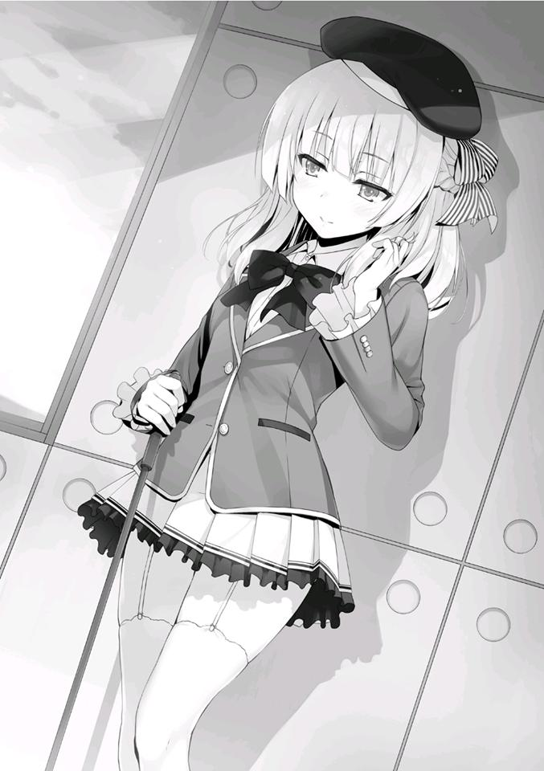
— Tal vez está tratando de adquirir información sobre la clase C como dijo Horikita-san.
— ¿Pero no es demasiado obvio? Debería haber una mejor forma de hacerlo.
Tiene más posibilidades de éxito si se pone en contacto con Yamauchi en secreto y tampoco nos pondría en guardia.
— Eso es cierto, pero...
Keisei también tiene razón. Si su intención aquí es tenderle una trampa a Yamauchi, hay muchas formas de ponerse en contacto con él.
Sólo sufrirá un grave daño si actúa de una manera que ponga sobre aviso a toda la Clase C. Si esto conduce a un problema, la propia Sakayanagi sería juzgada definitivamente por haber estado involucrada.
Considerando eso, tal vez ella realmente está interesada en Yamauchi como Keisei e Ike están diciendo... eso tendría más sentido.
Pero Sakayanagi es agresiva y audaz, por lo que ambas son igualmente posibles.
— La verdad es que hace tiempo que he querido hablar contigo, Yamauchi-kun.
— ¿D-D-De verdad, de verdad, de verdad?
— No tengo tiempo para mentir sobre algo así, ¿sabes?
Mientras realizaba mi análisis, comenzó una conversación entre los dos.
— No podré tranquilizarme aquí, ¿vamos a otra parte?
— Así es, así es. Sí, hagámoslo, hagámoslo.
— En ese caso, por favor, acompáñame un momento.
Los dos empezaron a caminar juntos.
Yamauchi está intentando igualar el ritmo lento de Sakayanagi.
Parece que es capaz de ser considerado, incluso si es sólo la cantidad mínima.
Los otros estudiantes los vieron marcharse, después de haber determinado que seguirlos sería difícil.
PARTE 2
El Grupo Ayanokouji se reunió en un café con todos sus miembros presentes excepto Akito, que se dirige a su club. Haruka comenzó la conversación.
— Entonces, ¿cuál crees que es la verdad detrás de esa pequeña farsa de antes entre Yamauchi-kun y Sakayanagi-san?
— ¿Podemos llamarlo una farsa?
Preguntó Keisei a Haruka una vez más.
— Eso es.... quiero decir, ¿verdad, Airi?
— Yo.... creo que eso fue, umm, eso....
Lo dijo Airi con un ligero rubor.
— ¿Ehh? Pero quiero decir, ¿no fue eso un poco astuto?
— Sí, sus gestos se veían así, pero.... como dijo Keisei-kun, tal vez está tratando de investigar la Clase C para poder hacer algo malo.
— Es esa cosa en la que haces que alguien piense eso.
Al presentarse audazmente, intentaba hacernos creer que no es una trampa porque es abrumadoramente simple. También hay algo de verdad en eso.
— Kiyopon y Yukimu~, ¿qué opinan? ¿Realmente creen que el amor es una posibilidad?
Haruka nos preguntó de nuevo.
— No soy muy versado en esa área. Por favor, no me lo preguntes tantas veces.
No queriendo hablar de amor de esta manera, Keisei se negó a contestar.
Inevitablemente, Haruka y Airi se giraron hacia aquí.
— Yamauchi y Sakayanagi no han interactuado hasta ahora, es demasiado abrupto. ¿No es demasiado llamarlo amor?
— Esa es una opinión racional, Kiyopon. El amor requiere una base, pero sería un caso diferente para alguien como Hirata-kun. Por supuesto, lo mismo no es válido para Yamauchi-kun.
Al final, no pudimos continuar con la conversación sólo con la información que tenemos a mano. Finalmente, el tema pasó del romance de Yamauchi y Sakayanagi a la situación de la Clase C.
— Ahh, hablando de Hirata-kun... rompió con Karuizawa-san, ¿verdad?
— No me sorprende, o tal vez debería decir que siempre pensé que algún día romperían.
— Ehh, ¿en serio?
— Se podría decir que es apropiado que el líder de los chicos y la líder de las chicas sean novios, pero en realidad no encajan bien juntos, ¿verdad?
Cómo decirlo, Hirata-kun parece que apreciaría más a una chica tranquila y guapa.
— Karuizawa-san también es linda.... ¿no crees, Kiyotaka-kun?
Airi me hizo una pregunta que es realmente difícil de responder.
O mejor dicho, debería decir que me preguntó porque quería escuchar la respuesta a eso.
— No estoy seguro. Después de todo, nunca he prestado atención a Karuizawa.
No sé qué está pensando Airi, pero esa respuesta es todo lo que puedo dar.
— Bueno, supongo que eso es cierto. De todas formas, dejando a un lado a Karuizawa-san, el problema es que Hirata-kun ahora está libre.
Haruka intencionadamente cambió el tema de nuevo a Hirata.
— A muchas chicas de nuestra clase les gusta Hirata-kun. Me pregunto qué va a pasar.
— ¿En serio?
— Ehh... ¿no te diste cuenta? Por ejemplo, a Mii-chan definitivamente le gusta.
— Ahh....ahora que lo mencionas, ella mira a Hirata-kun de vez en cuando.
— ¿Verdad, verdad?
Keisei sacó su libreta, quizás porque se ha cansado de la charla romántica.
— Estudiaré.
— Ahh, es casi nuestro examen final... acabo de recordar algo deprimente.
— Necesito hacer algo para que Haruka y los demás lo utilicen también.
Haruka bajó su cabeza hacia la mesa inclinándose.
Chabashira-sensei no nos dio ninguna explicación en particular con respecto al examen de fin de curso. En otras palabras, va a ser un examen escrito como de costumbre.
Si un estudiante reprueba, será expulsado inmediatamente. Probablemente así es como será.
— ¿Cuándo empezamos nuestro grupo de estudio?
— Veamos....... comencemos tan pronto como termine el examen de práctica del día 15. Si empezamos desde allí, tendremos aproximadamente 10 días hasta el examen final. Si nos concentramos en los problemas y tendencias del pasado, estaremos bien.
— Como se esperaba de Yukimu~, plan perfecto. Estoy de acuerdo, estoy de acuerdo.
Haruka parecía feliz, tal vez porque no quería empezar a estudiar de inmediato.
— El último examen especial del año escolar se llevará a cabo después de que el examen de final termine en marzo.
— Último examen especial del año escolar... Ya veo, el primer año casi ha terminado.
— Pasaron muchas cosas, pero cuando todo ha terminado, parece que el tiempo pasó volando.
Airi y Haruka recuerdan el año pasado.
— Aún es demasiado pronto para recordar. Si repruebas el examen final, te expulsarán. Y sigue dependiendo del contenido del examen especial.
Keisei las trajo de vuelta a la realidad. Probablemente porque quiere lo mejor para Haruka y los demás.
— Ahh.
Justo después de que Keisei empezó a estudiar, Haruka notó algo.
Cuando seguí su mirada, vi a Ichinose allí.
Está junto a varios chicos y chicas, todos ellos estudiantes de la Clase B.
Probablemente se están reuniendo como nosotros, pero por lo que puedo ver, sus expresiones son tensas.
Pareciera que están tratando de proteger a Ichinose de las calumnias y difamaciones que está recibiendo. Pero la propia Ichinose seguramente no desea una situación como esta.
Se comporta de manera normal, charlando con sus amigos y saludando alegremente a la gente a medida que avanza. Pero si hay algo preocupante en esto, es el hecho de que Kanzaki no está allí.
Como segundo al mando de Ichinose, tengo la imagen de que frecuentemente están juntos.
— Ahora es un gran problema, ¿no?
Haruka miró fríamente a Ichinose.
— ... Rumores raros, eso es lo que parece ser. No sé quién los está propagando, pero eso es horrible...
— No es tan inusual, ¿verdad? Esta vez fue demasiado lejos, pero cosas similares pasan de vez en cuando, ¿no? Supongo que esa es la carga que tienen que soportar las chicas populares.
— ¿En serio?
Airi parecía desconcertada, como si no tuviera ni idea de ello.
Si Airi fuera del tipo agresivo como Ichinose, estoy segura de que ahora mismo habría gente celosa de ti...
Sin duda, ese puede ser el caso. Pero aún así, se ve como Airi no puede imaginarse a sí misma como una mujer agresiva.
Intentó pensar en ello, pero al parecer ha fracasado.
— Bueno, es mejor no preocuparse por eso.
Probablemente Ichinose también entienda eso, dijo Haruka.
Seguí escuchando la conversación de Haruka y Airi sin unirme a ella.
PARTE 3
Aproximadamente dos horas después de eso. Las chicas seguían charlando y Keisei seguía estudiando.
De vez en cuando me unía a la conversación de Airi y Haruka mientras jugaba con mi teléfono.
El teléfono de Haruka, que ella había puesto sobre la mesa, vibró.
— Ahh, es de Miyachi.
Haruka tocó la pantalla y contestó la llamada con el altavoz.
— ¿Terminaste con las actividades del club?
— Lo siento, parece que voy a llegar un poco tarde.
Era una llamada de Akito, hablando con un tono ligeramente nervioso, informándonos que llegaría tarde.
— ¿Hmm? ¿Podría ser una práctica extra en el club?
— No....parece que hay problemas.
— ¿Qué problemas? Dame un poco más de detalles.
— La Clase A y la Clase B están discutiendo. En el peor de los casos, tengo que estar aquí para detenerlos si se produce una pelea.
Pero no parece que Akito esté involucrado.
Pero, ¿la clase A y la clase B?
Recordé las caras de los principales miembros de la clase B que vi antes. Pero me pregunto si Ichinose realmente permitiría esas descuidadas acciones que podrían convertirse en una pelea.
— Deberías dejarlos en paz. No tiene nada que ver con nuestra clase.
— Podríamos ser los siguientes, ¿no?
Después de decir eso, Akito terminó la llamada. Akito es un hombre de pocas palabras pero a veces puede ser sorprendentemente apasionado como cuando invitó a Ryuuen, con quien nadie quería involucrarse, a su grupo durante el campamento de entrenamiento.
— Me pregunto quién estará peleando....
Preguntó Airi. Tal vez tenga curiosidad.
— Por lo general, siempre es esa clase la que causa problemas.
Por supuesto, están hablando de la clase de Ryuuen que ahora ha caído a la clase D.
— Ahora que lo mencionas, es cierto.
Las dos ladearon la cabeza ante el inesperado enfrentamiento entre las clases A y B.
— Hey, Kiyopon, Airi. ¿Por qué no vamos a ver a Miyachi?
— ¿Pero eso no seria peligroso?
— Supongo que sí. Pero tal vez hasta nuestra clase se vea involucrada si es provocada.
Contestó Haruka burlonamente. Pero Airi se encogió asustada.
— Está bien, si las cosas se ponen feas, estoy seguro de que Miyachi hará algo al respecto, ¿no? Aparentemente, él también solía ser bastante malo en el pasado.
— ¿M-Malo? ¿En serio?
— Lo acabo de escuchar de él.
Puede que la razón por la que no teme tratar con alguien como Ryuuen sea que confía bastante en sus habilidades.
— Bueno, si Airi se mete en apuros, Kiyopon la salvará. ¿Verdad?
— ... Haré lo mejor que pueda. Pero prefiero no meterme en una pelea.
— Jajajajaja. Todo saldrá bien. Por lo general, la violencia no se desata en esta escuela. Creo.
Debido a que ha habido varios casos de este tipo en el pasado, Haruka se calló al final.
Pero como no hay razón para que no vayamos a buscar a Akito, decidimos hacerlo.
PARTE 4
No vimos ninguna señal de Akito cuando nos dirigimos hacia el club de tiro con arco.
— ¿Eh? ¿Dónde está Miyachi?
No hay duda de que Akito ya se había ido al café, así que en el camino debió encontrarse con una discusión y se desvió del camino.
Los tres acordamos buscar a Akito.
Unos minutos después de que empezamos a buscar, obtuvimos información confiable de algunos de los estudiantes que se iban a casa después de sus actividades en el club.
Así, de alguna manera logramos llegar al gimnasio ubicado a poca distancia del edificio de la escuela.
Allí, dos estudiantes de primer año se enfrentaban.
No parecían ser las personas que Haruka y los demás esperaban.
El primer estudiante era Hashimoto de la clase A.
El otro era Kanzaki de la clase B.
Mientras tanto, Akito parecía estar en la difícil posición de vigilarlos a los dos.
— No se van a pelear, ¿verdad?
— Eres muy persistente, Miyake. Yo no fui yo el que provocó esto en primer lugar, fue Kanzaki.
Mientras Hashimoto hablaba como si estuviera siendo acosado por alguien, nuestros ojos se encontraron.
— ¿Parece que tus amigos han llegado?
Después de que Hashimoto lo señalara, Akito y Kanzaki miraron hacia nosotros casi al mismo tiempo.
— ... Vinieron.
Parece que no quería que interfiriéramos.
Bueno, nada bueno viene de involucrar a las chicas en algo como esto.
A pesar de ello, Haruka habló y se metió en la conversación.
— Es porque te incolucraste en algo extraño. Por eso vinimos a ayudar.
— Vienen a ayudar.... claro...
Dándose cuenta de que no debería haber dicho nada, Akito, pesaroso miró al vacío por un momento.
— Entonces, ¿qué pasa? No parecen estar peleando.
Al darse cuenta de que no se podía evitar ahora que ya estábamos aquí, Akito cambió de tema.
— Parece que entendí mal algo. Aunque la situación parece ser un poco peligrosa.
— Kanzaki es el peligroso aquí.
Si mal no recuerdo, Hashimoto no parecía ser diferente de lo habitual.
Sin embargo, Akito no parecía creerlo.
— Eso espero.
Akito no mostraba ninguna intención de marcharse pronto.
Parecía que no estaba seguro de si las cosas iban a empeorar o no.
Al mismo tiempo, Kanzaki nos miró con una expresión algo preocupada.
Es decir, esperaba que nadie más apareciera por aquí.
Sin embargo, también debe entender que ese sueño ya no es posible.
Por esa razón, decidió guardar silencio.
En última instancia, Kanzaki no dice una palabra a ninguno de nosotros y una vez más volvió a dirigir su atención hacia Hashimoto.
— Continuando donde lo dejamos, Hashimoto. ¿Qué has estado haciendo después de la escuela? No perteneces a ningún club, así que ¿por qué estás aquí tan tarde?
— Así que si no tengo actividades del club, ¿tengo que ir a casa temprano?
Soy libre de hacer lo que quiera después de la escuela. Es más, de todos los que están aquí, creo que Miyake es el único que participa en un club.
¿Verdad?
Tomando la iniciativa, Hashimoto abrió una brecha en el argumento de Kanzaki al meternos en la conversación.
En comparación con Kanzaki, nuestra repentina aparición jugó a favor de Hashimoto.
Los miembros del Grupo Ayanokouji intercambiaron miradas por un instante.
No es posible decir que somos aliados de la clase A o B.
Sin embargo, si tuviéramos que elegir entre las dos, definitivamente elegiríamos a la Clase B.
Eso sería por la tregua entre Horikita e Ichinose.
— ¡Ja! ¿No vas a responder?
Notando que su pregunta era respondida con silencio, Hashimoto se rió.
— No estás esperando aquí para encontrarte con alguien en particular. Sólo intentas esparcir rumores a la mayor cantidad de gente posible, ¿no?
Kanzaki tenía su habitual expresión calmada, pero su espíritu era muy imponente.
Por lo visto, Kanzaki había estado interrogando a Hashimoto sobre los recientes rumores que circulaban en torno a Ichinose.
Akito estaba preocupado de que se pelearan, lo que nos lleva a la situación actual.
Hashimoto pensó que sus acciones estarían expuestas hasta cierto punto después de escuchar la afirmación de Kanzaki, mientras asentía con la cabeza un par de veces en respuesta.
— ¿Rumores? Ah, ¿te refieres a los de Ichinose haciendo varias cosas perversas? ¿Qué conexión tengo con esos rumores?
— Hacerse el tonto es una pérdida de tiempo para todos. Quiero dejar una cosa muy clara contigo. Lo que tú y el resto de tu clase están haciendo es simplemente demasiado malintencionado. No es diferente del tipo de cosas que haría Ryuuen.
— Aunque digas algo así, no tengo una respuesta para ti.
Hashimoto, cuyas intenciones suelen ser difíciles de entender completamente, habló de forma evasiva en respuesta al interrogatorio de Kanzaki.
Akito pareció comprender que ellos dos no se pelearían inmediatamente, se distanció y se acercó a nosotros.
— Oye, ¿qué deberíamos hacer?
Preguntó Haruka a Akito en voz baja.
— Nada, vamos a ver por el momento. Si se van sin que pase nada, se acabó.
— Pero.... ¿está bien que estemos escuchando?
Pude entender un poco el malestar de Airi.
Nuestra clase C no tiene nada que ver con su discusión.
Como mínimo, a Kanzaki no le gusta que estemos aquí. Esa fue la sensación que recibí del aire a su alrededor.
— ¿Qué piensas, Kiyotaka?
Akito pidió mi opinión.
— ¿Acaso no está bien hasta que nos digan que nos vayamos? Si en algún momento, esto se convierte en una pelea, la presencia de otra persona puede ayudar a mantener las cosas civilizadas. Kanzaki también debería ver el beneficio en eso.
Akito inmediatamente estuvo de acuerdo conmigo, mientras asentía un par de veces.
Hashimoto entonces profundizó un poco más en el tema de los rumores.
— Oye, Kanzaki. Esto que pasa con Ichinose... ¿estás seguro de que son sólo rumores?
— ¿Qué?
— No se puede fumar sin fuego. Eso es lo que seguramente piensan la mayoría de los estudiantes.
— Los rumores pueden crear humo sin fuego mientras haya intención de hacer daño.
Hashimoto se apoyó contra la pared cercana.
— En efecto. Es cierto que los rumores y el fuego son cosas completamente separadas.
Los proverbios no se pueden aplicar a todas las situaciones del mundo.
— Sin embargo, ¿puedes decirme con confianza que Ichinose no tiene un pasado oscuro, Kanzaki?
— Aproximadamente un año. Es el tiempo que he pasado en las buenas y en las malas con la clase B. Por eso estoy absolutamente seguro.
— Oh, déjalo Kanzaki. Respuestas como esa apestan tanto que ni siquiera puedo mirarte a los ojos.
Después de decirlo, Hashimoto rompió el contacto visual.
— Por supuesto, también le he preguntado a Ichinose directamente.
— ¿Oh? ¿Y qué dijo ella?
— Dijo algo como: Espero que no estés obsesionado con ninguno de esos rumores. No los tomes en serio.
— Es decir, ¿ni los afirmó ni los negó?
— Así es. Por eso decidí creer en ella.
— Oye, oye, ¿estás hablando en serio? ¿Cuan suave puedes ser?
Hashimoto dejó salir una risa de desprecio antes de continuar inmediatamente.
— No querer hablar de tu oscuro pasado es sólo una parte de la naturaleza humana. Sólo porque sean amigos, no garantiza que haya dicho la verdad.
También es por eso que no les dijo la verdad a sus compañeros de clase.
O, ¿estás diciendo que sólo porque Ichinose es una buena persona ahora, también tuvo que haber sido una buena persona en el pasado?
Hashimoto intentó quebrar la confianza de Kanzaki.
Sin embargo, Kanzaki no parecía en absoluto perturbado.
La mirada en sus ojos me dijo que confía plenamente en Ichinose.
— ¿Realmente crees que te dirá la verdad sólo porque eres su mano derecha?
Qué dulce de tu parte.
Hashimoto no oculta su sorpresa ante la fe ciega de Kanzaki.
O podría ser que se diera cuenta de que ya no había necesidad de prolongar más la conversación.
— No te confronté para escuchar algo como esto. Quiero los detalles de lo que has estado haciendo hoy.
— Entonces te lo diré. He estado difundiendo rumores sobre Ichinose —
Hashimoto lo admitió—. Oye, Kanzaki. Eres un tipo inteligente y comprensivo. Sin embargo, esa es precisamente la razón por la que sugiero que no te involucres demasiado en cosas como ésta. Todo lo que podrás hacer es creer ciegamente en la otra persona.
— En otras palabras, no tienes intención de retractarte de esos rumores.
— ¿No estás malinterpretando algo? No hay manera de “retractarse” de los rumores. Los rumores fluyen de un lado a otro, extendiéndose como les place. Me enteré de ellos y ayudé a transmitirlos.
Aunque admitió haber ayudado a difundir el rumor, Hashimoto negó claramente que él fuera la fuente original.
Sin embargo, eso no hizo que Kanzaki retrocediera.
Parece que desde el principio, Kanzaki sabía que Hashimoto no era el origen de los rumores.
— Estos últimos días, he estado haciendo una investigación a fondo sobre ustedes de la clase A.
— ¿Y?
— Determiné que la fuente de los rumores provenía de varios estudiantes de primer año de la clase A. Luego, cuando preguntamos a esas personas de dónde lo habían escuchado, dieron respuestas vagas como: “No recuerdo”
o “Lo escuché de otra persona”. Muy similar a la respuesta que me acabas de dar. ¿El verdadero significado detrás de esto? Ya deberías entenderlo, Hashimoto.
Significa que alguien había dado instrucciones a todos los de la clase A.
— Lo siento, Kanzaki, pero no tengo ni idea de lo que estás hablando. Si no te importa, ¿me lo explicas, por favor?
— Los rumores sobre Ichinose fueron propagados por tu clase A.
— Eh-
— No tengo intención de escuchar tus excusas. No sólo pregunté en el primer año. También consulté a estudiantes de segundo y tercer año que afirman haber escuchado los rumores de ustedes. Si es necesario, puedo pedirles que confirmen los hechos en persona.
Por lo que parece, Kanzaki y sus compañeros de clase han sido excesivamente minuciosos en la búsqueda del origen de los rumores.
Está convencido de que toda la operación fue encabezada por la clase A.
Y con eso, ahora se ha acercado a Hashimoto.
Basado en el hecho de que Kanzaki está aquí solo, sin un grupo, la Clase B lo está haciendo por consideración a Ichinose.
Si un gran número de estudiantes hiciera una escena, terminaría atrayendo aún más la atención de los alumnos. Incluso aquellos que no están interesados en los rumores.
No, también existe la posibilidad de que en este caso, Kanzaki esté actuando completamente solo.
— Ya veo. Así que también por eso me has estado acechando todo el día.
Debido a que Hashimoto incluyó la palabra “también”, significaba que se había dado cuenta cuando Kanzaki empezó a seguirlo.
Sin embargo, no parecía que le importara en absoluto.
Eso es porque entendió que obviamente no era ningún tipo de obstáculo para lo que estaba haciendo.
Hashimoto se encogió de hombros y suspiró mientras Kanzaki hablaba.
— ¿Fue Sakayanagi quien te dio instrucciones para esparcir los rumores?
— Mmmm, ¿no?
— ¿Entonces quién lo hizo? Ella es la única que puede darles instrucciones en la clase A aparte de Katsuragi.
— ¿Quién sabe? Soy igual que cualquier otro estudiante. Escuché esos rumores de alguien más. Aunque estés tan seguro de que los rumores fueron iniciados por la clase A, todavía no tengo ni la más mínima idea de lo que estás hablando. ¿Quizás es obra de Ryuuen y en realidad sólo está fingiendo que se ha retirado?
En ese momento, Kanzaki cambió un poco de táctica.
— ¿Así que todos ustedes han aceptado ciegamente un rumor que puede o no ser cierto y lo han difundido?
— El mundo está repleto de gente que hace exactamente eso. No importa si es verdad o no. Si es interesante, la gente querrá compartirlo con los
demás. ¿No crees que, debido a su experiencia, las chicas participan en cosas así mucho más que los chicos?
Mientras lo decía, Hashimoto volvió su mirada hacia Haruka y Airi.
— Bueno... me gustan los rumores, pero...
— Lo triste es que, cuanto más jugoso es un chisme, más entusiasta es la gente para hablar de ello. Piénsalo un poco más objetivamente, Kanzaki.
Cuando le preguntaste a Ichinose, ella no confirmó ni negó nada, y tampoco está pidiendo ayuda. ¿No crees que eso es extraño? Si todo es sólo una mentira, estaría buscando ayuda para atrapar al culpable.
— Ichinose odia los conflictos extremos. Estoy seguro de que tiene un corazón lo suficientemente grande como para perdonar a la gente que la está difamando.
Como Ichinose no dice nada al respecto, Kanzaki no tiene otra opción que creer en ella.
— Santo cielo. Ustedes los de la clase B...
En cualquier caso, he logrado confirmar una cosa basándome en la forma en que Hashimoto ha estado hablando y actuando hasta ahora.
Los rumores que han estado circulando sobre Ichinose recientemente... Por supuesto, no son todos mentira.
Dejé temporalmente de lado mi posición de estudiante y miré la situación desde el punto de vista de la sociedad.
Naturalmente, por difamación y calumnias, Ichinose podría demandar a la parte responsable de hacer circular los rumores. Independientemente de si son ciertos o no, el daño a su reputación pública le daría las bases para hacerlo.
Bueno, siempre que se limite a situaciones en las que la verdad no esté en conflicto con el interés público.
Si todo esto fue orquestado por Sakayanagi, entonces, por supuesto, todo debía ir de acuerdo con su plan.
El hecho de que Ichinose haya optado por permanecer en silencio demuestra que su estrategia está funcionando tal y como se pretendía.
Al darle a Kanzaki una palmadita en el hombro al pasar, Hashimoto se metió las manos en los bolsillos y empezó a salir de la habitación.
— Nuestra conversación no ha terminado todavía.
— ¿No hemos dicho suficiente? Incluso si continuamos la conversación, no seremos capaces de ponernos de acuerdo en nada.
Hashimoto, con un leve gesto de despedida hacia Haruka y Airi, abandonó la habitación y se dirigió hacia el edificio de la escuela.
Sentí una extraña sensación de incongruencia después de ver a Hashimoto marcharse.
Era obvio que no me trataba de la misma manera que en el campo de entrenamiento.
Al final, no fue más que una simple intuición.
Lo que ha cambiado entre entonces y ahora.... Lo que es diferente... Es imposible precisar los detalles exactos.
— Disculpen.
Kanzaki nos hizo una leve reverencia y se fue, yendo hacia los dormitorios en vez de hacia el edificio de la escuela.
— ¡De alguna manera, siento como si acabáramos de presenciar algo totalmente asombroso!
— ¿Por qué siento que has estado disfrutando de todo esto?
Haruka sacó la punta de su lengua en respuesta a la réplica de Akito.
— Bueno, ¡es porque esta “llamada” violencia es un poco emocionante!
Además, si por casualidad, fuéramos atacados, Miyachi tendría un plan listo para protegernos, ¿verdad?
Mientras decía eso, Haruka hizo una demostración de hacer unos cuantos golpes de boxeo en el aire.
— Escuché que solías ser todo un delincuente.
Dije, siguiendo la corriente de la conversación. Akito suspiró con fuerza.
— No quiero hablar de ello, Haruka. No quiero que se extienda.
— No importa, ¿verdad? Ahora eres diferente. ¿Eras muy fuerte entonces?
— Permítanme decir esto, no era un delincuente famoso. Honestamente, alguien más era el delincuente principal en la escuela a la que fui, y él era mucho más fuerte que yo.
— Huh. ¿Era una escuela ruda?
— De donde yo vengo, los adultos viven una vida desordenada, y cuando tienen hijos, los crían de esa manera también. Por cierto, Ryuuen de la clase D iba a la secundaria al lado de la mía.
— ¿Ehhh? ¿¡En serio!?
— Aah. Durante las numerosas ocasiones en que se produjeron conflictos entre nuestras escuelas, nos pusimos en contacto. Bueno, ese tipo probablemente nunca me tomó muy en serio
Ah, así que Akito es hábil para manejar este tipo de situaciones porque se ha acostumbrado a pelear.
— Esta conversación termina aquí. No compartas esto con nadie fuera del grupo, ¿de acuerdo?
— Entiendo. Volvamos al café, ¿Sí? Yukimuuu está esperando.
— Suena bien.
Al final, este es el problema de alguien más.
La mejor opción es evitar profundizar más. Estoy seguro de ello.
SIN INTENCIÓN DE CAMBIAR
El jueves por la noche, vi a Ichinose mientras volvía a los dormitorios.
Ichinose suele estar siempre rodeada de estudiantes de ambos sexos. Sin embargo, hoy, asombrosamente, parecía estar sola. Por alguna razón, no podía sentir nada de su ambición habitual en la forma en que se estaba moviendo. Me pregunto si la razón por la que está sola es porque tomó la iniciativa de mantenerse alejada de sus amigos habituales. En este momento, definitivamente es la persona en nuestro año escolar que tiene más atención.
Involucrar desconsideradamente a otras personas en los rumores puede llevarlas a quedar atrapadas en otro desastre.
No sería sorprendente que Ichinose pensara algo así. Recordé la conversación de Kanzaki con Hashimoto hace unos días.
¿Debería intentar llamarla? Pensé en hacerlo, pero...
Sentí una presencia detrás de mí y decidí no hacerlo.
Saqué mi teléfono y encendí la cámara.
Cambiando la cámara de la parte de atrás de mi teléfono a la del frente, miré con indiferencia la situación que estaba sucediendo detrás de mí.
Había dos estudiantes de primer año que volvían a los dormitorios.
Uno de ellos era Hashimoto.
Estaba caminando normalmente, pero dado lo que pasó el otro día, es difícil pensar que se trata de una coincidencia.
¿Me está siguiendo?
Sin embargo, mientras estaba en el proceso de confirmarlo, el otro estudiante comenzó a acercarse a mí.
Se me acercó sin dudarlo un instante.
Inmediatamente apagué la cámara y puse el teléfono en mi bolsillo.
— Ah, um, Ayanokouji-kun. ¿Tienes un momento...?
La persona que me llamó desde atrás era mi compañera de clase, Mei-Yu Wang.
Debido a que su nombre puede ser difícil de pronunciar, la gente se refiere a ella como “Mii-chan”. Aunque llamarla así en mi mente ya es algo embarazoso.
— Ahora mismo.... ¿Estás libre por un momento? Tengo algo sobre lo que me gustaría consultarte.
¿Consultar conmigo? Apenas hemos hablado hasta ahora.
Se podría decir que esta es prácticamente la primera vez que viene a hablar conmigo cara a cara.
No parece que haya alguien más aparte de ella....
Echando un vistazo, Ichinose continuaba caminando de regreso a los dormitorios sin notarme.
En este punto, correr para alcanzarla resultaría extraño.
— Lo siento, estás ocupado ¿verdad?
— No, sólo estoy regresando a los dormitorios. Debería estar bien.
En ese momento, Mii-chan parecía un poco más feliz mientras suspiraba aliviada.
Mientras hablaba con Mii-chan, Hashimoto nos pasó de camino a los dormitorios.
Sin embargo, no miró en mi dirección ni dijo nada.
— Entonces, ¿dijiste que querías consultarme sobre algo?
— Hablar de eso aquí... es algo...
Miró incansablemente a nuestro alrededor. Parece que hablar mientras caminamos de regreso a los dormitorios no es adecuado para lo que quiere preguntar.
— ¿Es así?
Como esperaba, no es posible preguntarle algo como: “Ya que los dormitorios están muy cerca, ¿te gustaría hablar de esto en mi habitación?”
Además, no puedo sugerir algo como ir a la habitación de Mii-chan.
— ¿Qué quieres hacer?
En lugar de tomar la decisión yo mismo, decidí dejar que Mii-chan eligiera adónde ir a partir de ahora.
Después de pensarlo un poco, Mii-chan sugirió un lugar.
— ¿Qué tal el café.... si te parece bien? Aunque puede que se haga un poco tarde para volver a casa después.
Ya que ella misma quiere ir al café, no tengo ninguna razón en particular para negarme.
Aunque llegue un poco tarde, la diferencia es de 5 a 10 minutos, lo que no es gran cosa. Por sugerencia de Mii-chan, nos dirigimos al café del Centro Comercial Keyaki. Sin embargo, sólo somos dos personas que no se conocen muy bien. Terminamos caminando un poco lejos el uno del otro en lugar de estar lado a lado.
PARTE 1
Tan popular como siempre, llegamos al bullicioso café.
Aunque me falta un poco de sentido común, como un estudiante ordinario de preparatoria, soy capaz de entender algo como esto ahora.
Esta cafetería es una sucursal de una gran compañía en el exterior de la escuela, particularmente popular entre las chicas del mundo social. Afuera, el precio por taza es muy elevado para estudiantes de preparatoria, por lo que no es algo que puedan permitirse beber muy a menudo. Para un estudiante de preparatoria que no está trabajando por lo menos medio tiempo, sólo podría permitirse venir aquí unas cuantas veces al mes. Sin embargo, debido a que los estudiantes de esta
escuela reciben “dinero” correspondiente al número de puntos de clase que tienen, muchos estudiantes pueden permitirse venir aquí siempre y cuando no se encuentren en una situación financiera particularmente difícil.
Debido a eso, es inevitable que el café florezca todos los días.
Sin embargo, no estaba tan lleno como para no poder encontrar un lugar para sentarnos. Terminamos tomando un par de asientos uno frente al otro. Mii-chan nunca intentó que nuestras miradas se cruzaran. En vez de eso, se quedó mirando la taza de café que yo había ordenado y que tenía en mis manos.
Supongo que ella y Airi son chicas similares. Si accidentalmente la presiono demasiado, puede que le resulte más difícil decir lo que piensa. Decidí no romper el hielo y esperé a que Mii-chan iniciara la conversación.
Mientras tanto, le dije que me iba a levantar por un segundo a buscar un poco de azúcar del mostrador.
Allí, tomé sólo un paquete de azúcar.
Sin dejar que mis ojos se desviaran, confirmé que Hashimoto también había venido al café.
Es poco probable que de repente quisiera una taza de café.
Sin duda, Hashimoto me seguía.
¿Fue enviado por Sakayanagi para vigilarme? No, eso no parece muy probable.
Sakayanagi en este momento no quiere divulgar información sobre mi existencia.
Además, aunque quisiera vigilarme, habría obligado a Kamuro a hacerlo. Si Sakayanagi tiene una idea de qué tipo de persona es Hashimoto, es comprensible por qué no le parece la elección correcta para algo como esto.
No debe tener ninguna prisa por contarle a Hashimoto sobre mí y arriesgarse a que él se lo revele a otra persona.
Si ese es el caso, ¿me está siguiendo basado en su propio juicio?
Durante el campamento de entrenamiento, no recuerdo haber hecho nada que atrajera su atención.
Para él, yo debería ser sólo otro miembro del grupo. Ryuuen, Ishizaki, Albert e Ibuki. Consideré la posibilidad de que alguno de ellos le dijera algo, pero ninguno de ellos habría dicho nada.
Bueno.... No es que vaya a ser capaz de llegar a alguna conclusión pensando en ello ahora.
Sin embargo, tarde o temprano me parece que se convertirá en un problema con el que tendré que lidiar, de una forma u otra.
Por ahora, ignoraré a Hashimoto y me centraré en mi conversación con Mii-chan.
Regresé a mi asiento después de un minuto, e inmediatamente al hacerlo, Mii-chan rompió el silencio.
— Oye... Uh, es sobre Hirata-kun.
Sobre Hirata, ¿eh?
— Esperaba que me dijeras algunas cosas sobre él...
— Sabes, Hirata y yo no somos muy unidos.
Le respondí inmediatamente para marcar la línea, pero ella me miró con sorpresa.
— Pero entonces, ¿por qué Hirata-kun me aconsejó que Ayanokouji-kun era la persona más confiable de la clase?
— ...Oh, ¿en serio?
— Sí. Dijo que Ayanokouji-kun era la persona más confiable y sensata de la clase. Habló muy bien de ti.
Aunque me hace feliz ser elogiado por Hirata de esta manera, si cosas como esta continúan propagándose, siento que se convertirá en algo problemático. Sin embargo, entiendo por qué Hirata le daría mi nombre a Mii-chan.
Hay muchos estudiantes confiables, pero en el caso particular de la Clase C, se complica un poco.
Considerando a los otros chicos, no es de extrañar que Hirata me considerara como el siguiente estudiante más confiable.
Aún así, se trata de Hirata, ¿eh?
De mi conversación anterior con Haruka, puedo más o menos adivinar de qué se trata.
— Recientemente, Hirata-kun y Karuizawa-san, uh... terminaron. ¿Ya has oído hablar de ello?
— Naturalmente.
¿Qué pasa con eso? Fingí que no entendía adónde quería llegar con esto.
— Eso, bueno...
Después de vacilar varias veces con las palabras, finalmente comenzó a hablar sobre el verdadero problema que tenía entre manos.
— ...¿Sabes si hay alguien que le guste a H-Hirata-kun ahora mismo?
Parece que esto es lo que quería preguntar. En este caso, ¿cuál es la respuesta correcta?
Aunque por un momento pensé algo así, llegué inmediatamente a la conclusión de que dar una respuesta genuina sería lo mejor.
— No lo creo. Mii-chan.
— ¿¡De verdad!?
— Por supuesto que no puedo decirlo con absoluta certeza, pero hasta donde yo sé, no hay nadie. Además, Karuizawa acaba de dejarlo. Sería demasiado pronto para que le guste alguien más.
Mientras hablaba, Mii-chan se fue calmando paulatinamente.
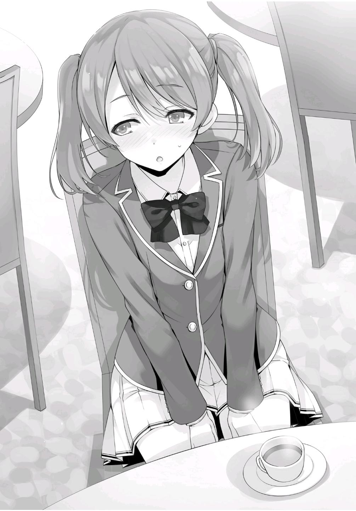
— ¿Está bien si te pregunto una cosa por mera curiosidad?
— S-sí.
— ¿Cuándo empezó a gustarte Hirata?
— ¿¿¡Eeeeeeeh!??
¿Le pregunté algo extraño? La cara de Mii-chan se puso de color rojo brillante cuando se puso muy nerviosa.
— ¿Por qué preguntarías algo así?
— Oh no, si no quieres responder, tú...
— -¿Justo después de la ceremonia de entrada?
— -...no tienes que hacerlo.
— Soy.... un poco torpe...
Un solo encuentro con Hirata fue todo lo que necesitó para enamorarse de él.
Mii-chan habló abiertamente.
— ...Algo así.... supongo.
— ¿Es eso cierto?
Aunque hay varias incógnitas, una cosa es segura. Se sintió atraída por la gentileza de Hirata.
— Pero...
Mii-chan se ruborizó mientras hablaba de conocer a Hirata, pero su expresión se nubló de repente cuando fue traída de vuelta a la realidad.
— Yo... no creo que sea lo suficientemente buena para convertirme en la novia de Hirata-kun...
— ¿Por qué?
¿Cómo puedo siquiera preguntar eso? Me sorprende que pueda siquiera hablar.
— Porque hay demasiadas rivales... Además, nunca me he enamorado antes ni nada por el estilo...
A pesar de que está rebosante de sentimientos de amor, no parece que tenga el valor de actuar.
Y aunque no quiero pensar que la falta de experiencia previa en el amor es una desventaja, definitivamente tiene algún efecto.
— Bueno, Mii-chan... Espera, ¿está bien que te llame Mii-chan?
— Oh sí, está perfectamente bien. Todo el mundo me llama así. Aunque mis padres son chinos, a ambos les gusta mi apodo japonés, así que me llaman Mii-chan.
Es decir, ¿no es mitad japonesa o algo así?
— ¿Acaso estudiaste en el extranjero?
— Sí. Cuando estaba en mi primer año de secundaria, mi padre vino a Japón por negocios.
¿Así que se mudó a Japón con el resto de su familia?
— ¿Has tenido problemas con eso? ¿como la barrera del idioma o algo así?
— Fue bastante difícil al principio. Me preocupaba más hacer amigos que la diferencia de idiomas. Sin embargo, había mucha gente que era bastante buena en inglés en la secundaria en la que me matriculé, así que pude hacer amigos allí.
Hablando de eso, creo recordar que Mii-chan es muy buena en inglés.
Parece que además de comunicarse con otros en inglés, logró dominar perfectamente el japonés durante sus 3 años de secundaria. He oído que los estudiantes chinos tienen que esforzarse en un sistema escolar mucho más riguroso que los estudiantes japoneses.
Me pregunto si Mii-chan ha sido capaz de integrarse sin problemas en la sociedad japonesa porque ha recibido un alto nivel de educación.
Más allá de eso, sólo necesita trabajar en sus habilidades de comunicación como Airi.
— Me pregunto si tengo una oportunidad...
— Hablando con realismo, ¿acaso no deberías tener una oportunidad decente?
— ¿De verdad?
— No miento. Sin embargo...
— ¿¡Sin embargo!?
Aunque puede que le cause ansiedad, todavía tengo que explicar la parte difícil de todo esto.
— Hirata es un buen tipo, ¿no?
— Por supuesto.
— Por eso, ¿no crees que tendrá más cuidado la próxima vez que considere salir con alguien? Es de Hirata de quien estamos hablando. Puede que se sienta responsable de ello, como si no hubiera podido hacer feliz a Karuizawa.
Mii-chan asintió como si una revelación de los cielos acabase de caer sobre ella.
— Tienes razón. Y además, confesarse tan pronto... No creo que pueda manejarlo.
— Sé que te preocupa lo que puedan estar haciendo tus potenciales rivales, pero seguramente serás rechazada si te impacientas y te confiesas a él tan pronto.
Le aconsejé que abordara las cosas lenta y constantemente hasta que tuviera una base sólida con la que trabajar.
Por supuesto, es realmente el tipo de situación en la que nunca lo sabrás a menos que lo preguntes.
Sin embargo, no veo que Hirata tenga ninguna prisa por relacionarse con otra chica en este momento.
Lo más probable es que termine rechazando a la mayoría de las chicas que se le confiesen.
En ese sentido, aquellas que se mantengan lentamente en el ataque tendrán una mayor oportunidad de victoria.
— ...Supongo que te he malentendido un poco, Ayanokouji-kun.
— ¿Malentendido?
— Sabes, por lo general estás muy callado y no hablas mucho... Como que le das a la gente la impresión de que eres alguien que da mucho miedo. Pero después de encontrarme contigo cara a cara, puedo decir que eres super accesible y que estás escuchando seriamente lo que tengo que decir...
Parece que me está halagando.
Sin embargo, en lugar de escuchar seriamente de lo que ha estado hablando, sería más exacto decir que sólo estoy haciendo un análisis inconsciente del contenido de la conversación. Sólo estoy examinando cada pieza de información y decidiendo si le será útil o no más adelante. Si ella siente que la estoy escuchando atentamente, eso es aún más conveniente para mí.
¿Quiere profundizar más? Siento que ahora tengo la oportunidad de preguntar todo tipo de cosas.
— ¿Oh? ¿Mii-chan y... Ayanokouji-kun?
Justo cuando abrí la boca para hacer algunas otras preguntas, apareció Hiyori Shiina de primer año de la clase D. Cerré la boca sin decir nada.
— Hiyori-chan. ¡Hola!
Hiyori-chan. Mii-chan. Por su forma tan cercana de referirse entre ellas, parecen ser bastante cercanas.
— ¿Están los dos, por casualidad, en una cita?
— ¡N-N-No! ¡En absoluto, Hiyori-chan!
Mii-chan se levantó aterrorizada y agitó desesperadamente sus brazos delante de ella para negar la pregunta.
Verla rechazarla de una manera tan abrumadora hirió un poco mi corazón.
— En ese caso, ¿está bien si me uno?
— ¡Por supuesto! ... ¿Estás bien con eso?
— Sí.
— Muchas gracias.
Hiyori sonrió alegremente y se sentó en la silla junto a Mii-chan.
— Ustedes dos son una curiosa combinación. ¿De qué clase de cosas han estado hablando?
— Oh... Uuuuh...
Parecía que era difícil para Mii-chan decir que habíamos estado hablando de cómo manejar a la persona que le gusta.
— Estoy interesado en China, así que la escuché hablar de ello un poco.
— Sobre China... ¿Ah?
— Sí. Es uno de los países que me quiero visitar algún día, así que pensé que me gustaría saberlo de alguien que sea de allí.
Envié una mirada a Mii-chan como si le pidiera confirmación. Ella asintió apresuradamente dos o tres veces en respuesta.
— China es bonita, ¿no? También me interesa bastante, porque tiene cosas como la Gran Muralla China y todo eso.
Hiyori juntó sus manos delante de ella y sonrió.
El interés de Hiyori en el tema realmente fue más allá de mis expectativas.
— Hablando de China, la muralla es definitivamente un lugar que no se puede olvidar. Aunque, personalmente, me gustaría ir a la Ciudad Antigua de Pingyao.
— ¿Ciudad Antigua de Pingyao?
Parece que es la primera vez que Hiyori oye hablar de este lugar.
Mii-chan, por otro lado, abrió los ojos, sorprendida por el hecho de que yo supiera del lugar.
— A pesar de que es Patrimonio de la Humanidad, el hecho de que lo sepas...
— Es sólo algo que he escuchado.
— Por cierto, ¿ustedes dos son amigos?
Mii-chan nos preguntó a los dos después de ver que Hiyori y yo hablamos naturalmente entre nosotros.
— ¡Sí! Somos compañeros lectores.
— Bueno, no te equivocas.
— ¿Compañeros lectores...?
Mii-chan tenía una expresión en la cara que nos decía que no entendía.
Sin embargo, inmediatamente convirtió esa confusión en algo positivo con su siguiente pregunta.
— ¿No es genial poder hacer amigos en todas las clases?
Es probable que no hubiera tenido amigos fuera de su clase hasta que ocurrió el campamento de entrenamiento.
— Yo también lo creo. La vida escolar puede ser algo más que la hostilidad entre todos.
La competencia entre estudiantes es una de las bases fundamentales de la Advanced Nurturing High School.
Aquí, la mayoría de los estudiantes tienen una fuerte tendencia a ver a los estudiantes fuera de su clase como rivales.
Sin embargo, esta vez, el número de estudiantes que han abierto sus corazones a los de otras clases ha aumentado.
Hasta cierto punto, el verdadero objetivo de la escuela se ha oscurecido y escondido.
De lo contrario, no habría reglas como las que encontramos en el campo de entrenamiento. Sin embargo, difícilmente puedo decir con certeza que esto no será la causa de algún impacto negativo en el futuro. Cuando te ves forzado a una confrontación con otros, crear estas amistades semiconstruidas podría terminar causando algunos efectos adversos.
PARTE 2
— Gracias por lo de hoy, Ayanokouji-kun.
— No, soy yo quien debería agradecerte por permitirme escuchar lo que tenías que decir sobre China.
— Ah. Ya veo. Claro.
Sin querer le di las gracias en respuesta, lo que hizo que Mii-chan se rascara tímidamente la mejilla con el dedo.
— Subiré luego de echar un vistazo a mi buzón.
Me separé de Mii-chan y Hiyori mientras se dirigían al ascensor.
Yo reviso mi buzón una o dos veces por semana.
Por supuesto, otros estudiantes también revisan los suyos en una frecuencia similar.
La mayoría de las cosas que llegan por correo son de la escuela. Sin embargo, hay estudiantes que usan el correo para intercambiar paquetes o que reciben cosas compradas en línea.
Aunque, no estaba comprobando por una razón ordinaria como esa.
— Hoy tampoco hay nada, ¿eh?
Empecé a revisar regularmente mi correo desde que mi padre visitó esta escuela.
Después de todo, no sería extraño que intentara ponerse en contacto conmigo pronto.
Como no había nada particularmente especial en mi buzón, me dirigí de nuevo al ascensor, sólo para descubrir que Hiyori había decidido esperarme.
— ¿Tienes un momento?
— Claro.
Nos movimos al sofá del vestíbulo justo enfrente del ascensor.
— Quería preguntarte algo antes, pero dudé porque estábamos frente a Mii-chan...
Siendo un poco consciente de lo que la rodeaba, Hiyori hizo un barrido de la zona antes de hablar.
— Esa cosa que está pasando ahora mismo con Ichinose-san, ¿has oído algo al respecto?
— ¿Escuchaste algo? Si estás hablando de esos extraños rumores, entonces supongo que conozco los detalles.
— Sí, esos. ¿Sabes quién los está esparciendo por ahí?
— No... no lo sé.
Habría sido fácil nombrar a Sakayanagi o Hashimoto, pero decidí no hacerlo.
— Honestamente, ya no quiero ver a Ichinose-san torturada de esta manera.
Es el tipo de persona que está dispuesta a ser amable con alguien que apenas tiene amigos, como yo.
Si recuerdo bien las cosas, Hiyori e Ichinose estaban en el mismo grupo durante el campamento de entrenamiento. Supongo que después de comer lo mismo y dormir en la misma habitación, siente un vínculo más fuerte con ella que con otros estudiantes.
— Ayanokouji-kun.
Había algún tipo de determinación oculta en los ojos de Hiyori.
— Cuando llegué aquí por primera vez, no me gustaba este comportamiento que la escuela fomenta, donde lastimamos a otros. Pero ahora, creo que es necesario luchar de vez en cuando para proteger a tus amigos.
— Eso es cierto. Después de todo, no hay manera de poder salvar a todos.
— Aunque somos enemigos comunes de Ichinose-san, debe haber algo que podamos hacer para ayudarla. Aún no he podido pensar en cómo, pero...
¿estarías dispuesto a colaborar conmigo?
— Colaborar, ¿eh? Si ese es el caso, entonces deberías consultar a Horikita.
Como lo dije, consideré la posibilidad de presentarlas.
— Horikita-san, ¿verdad?
Sin embargo, la expresión de Hiyori no se iluminó.
— Es posible que la clase C también esté dispuesta a ayudar a Ichinose.
En cuyo caso, es posible que se convierta en una situación en la que las tres clases estén dispuestas a enfrentarse a la clase A.
Sin embargo, Hiyori aún no mostraba señales de estar contenta con esto.
— ¿No eres capaz de hacer algo al respecto, Ayanokouji-kun?
— No tengo ninguna influencia sobre la clase C.
— ¿Es eso cierto?
Inclinó la cabeza hacia un lado, dudando.
— Para las chicas está Horikita, y para los chicos está Hirata. No tendrás más remedio que ir a ver a uno de ellos.
— Ya veo...
Los hombros de Hiyori cayeron al cambiar su expresión a una de desilusión.
— ¿Insatisfecha?
— No... sólo que nunca he llegado a familiarizarme con Horikita-san o Hirata-kun... Pero si era Ayanokouji-kun, pensé...
Sus hombros se cayeron aún más a medida que se quedaba en silencio. No era la reacción que esperaba.
— Lo siento. No puedo hacer lo que no puedo hacer.
— No... Después de todo, sólo pensaba en lo que me convenía, y hablé sin considerar las cosas para ti.
Después de decirlo, inclinó la cabeza.
— Por el momento, ¿quieres que yo inicie la conversación con ellos por ti?
— ¿En serio? ¿Harías eso por mí?
A pesar de preguntarme eso, Hiyori cambió de opinión.
— Lo siento, hagámoslo en otro momento. Si nuestra conversación ayuda a difundir más las cosas, puede que acabemos molestando a Ichinose-san mucho más.
— Sí. Eso puede ser verdad.
Esos tipos en guerra contra Ichinose.... Tal como están las cosas ahora, no sé qué movimiento harán a continuación.
Alentar la situación sin saber nada sería contraproducente. También existe la preocupación de que los rumores de Ichinose estén más cerca de la verdad de lo que parecen.
PARTE 3
Después de regresar a mi habitación, recibí un mensaje de texto de Horikita.
[¿Estás por ahí?]
Aunque no le respondí, otro mensaje llegó volando.
[Ya que el mensaje ha sido marcado como leído, continuaré conversando para que sea más conveniente. Ichinose-san vendrá a mi habitación esta noche.
¿Vienes?]
Qué mensaje tan inesperado.
Al principio, sólo tenía la intención de leer lo que ella me enviara, pero decidí dar una respuesta adecuada.
[¿Qué acontecimientos han llevado a la situación actual?]
[Estamos en una alianza con la clase B. Es natural que ayudemos dada la situación actual. Pero, esta vez no sabemos toda la historia. Por lo tanto, estaba pensando en escucharlo de ella misma].
Así que se puso en contacto con Ichinose y le preguntó si podían reunirse en persona.
Ella hizo un movimiento muy audaz.
Es fácil negarse.
Si le pregunto a Horikita más tarde, me dirá lo que le diga Ichinose.
Sin embargo, eso no significa que Horikita lo averigüe todo.
Incluso Kanzaki, a pesar de lo cercanos que son, no parece conocer todos los detalles sobre Ichinose.
En ese caso, ¿preguntarle directamente me acercaría más a la verdad?
El problema es que si entro por esa puerta, terminaré involucrándome.
¿Qué debo hacer, me pregunto?
Después de pensarlo un poco, le envié una respuesta a Horikita.
[¿A qué hora?]
[A las siete]
Un poco tarde.
Tendré que tener cuidado para que no me vean otros estudiantes.
[Entendido. Te avisaré cuando esté en camino.]
Decidí encontrarme con Ichinose junto a Horikita.
PARTE 4
Después de eso, me relajé tranquilamente en mi habitación hasta la hora acordada.
Cuando el reloj marcó las siete menos cinco minutos, me fui, dirigiéndome a la habitación de Horikita.
Casi al mismo tiempo que bajaba del ascensor, Ichinose llegó en el ascensor a mi lado.
— ¡Ah! Buenas noches Ayanokouji-kun.
Levanté ligeramente la mano en respuesta a su saludo.
— Siento interrumpir.
— Jajaja. Pero también soy yo la que se entromete aquí, así que está bien.
Después de decirlo, Ichinose se adelantó cuando íbamos a la habitación de Horikita y tocó el timbre de la puerta. Inmediatamente escuchamos la cerradura de la puerta girando desde el interior.
— Por favor, adelante.
El plan era reunirnos a las siete. Por eso, no había nada particularmente sospechoso en que ambos llegáramos al mismo tiempo, así que Horikita nos invitó a la habitación sin decir demasiado.
Me senté apropiadamente en el suelo.
He visitado la habitación de Horikita antes, pero parece que no ha cambiado mucho desde entonces. Su habitación es muy similar a la mía, muy monótona y sencilla.
— Siento haberte pedido que nos reuniéramos en una noche entre semana, Ichinose-san.
— ¿Pero acaso no estás haciendo esto por consideración hacia mí? No necesitas disculparte.
La sensación que tuve al reunirme con Ichinose cara a cara fue que es la misma que siempre ha sido.
— Aunque... Si esto continúa hasta muy tarde, afectará a las cosas mañana, así que espero que no estés buscando charlar por mucho tiempo... Para empezar, ha habido varios rumores preocupantes sobre mí recientemente.
— Sí. ¿Sabes quién ha esparcido esos rumores?
Sin andarse con rodeos, Horikita preguntó directamente a Ichinose.
Tenía curiosidad por saber si Ichinose respondería honestamente a la pregunta.
— No puedo hablar con certeza, pero si tuviera que adivinar, diría que es Sakayanagi-san.
Superando mis expectativas, respondió claramente a la pregunta.
Si no estuviera tan segura, no habría dicho ningún nombre en concreto. Ella no es el tipo de persona que hablaría mal de los demás sin ningún tipo de razón para ello.
También pude llegar a una conclusión basándome en su respuesta.
Es decir, al menos, Ichinose ha podido ver que alguien en particular, ha estado difundiendo los rumores sobre ella.
— Sakayanagi-san... ¿Qué te hace pensar que podría ser ella?
— Para decirlo de forma simple, supongo que es porque le declaró la guerra a la clase B. ¿Necesito darte alguna otra razón para ello?
Horikita debería saber que Sakayanagi tiene una personalidad agresiva y guerrera.
Considerando el hecho de que tomó la iniciativa de intensificar el conflicto en su clase para derrotar a Katsuragi, es fácil imaginar que para derrotar a la clase B, centraría su ataque en Ichinose, su líder.
— No. Esa razón por sí sola es más que suficiente.
Debido a que Horikita piensa de la misma manera que yo, no vio ninguna razón para entrometerse más en ese asunto.
— ¿Así que está propagando estos rumores infundados, obligándote a asumir la responsabilidad por el daño?
— Uhm... ¿Cómo lo digo...?
— ¿No vas a negar los rumores?
— Lo siento, Horikita-san. No puedo decirte nada sobre eso. Horikita-san y Ayanokouji-kun son amigos, pero siguen siendo estudiantes de otra clase y tarde o temprano, estamos destinados a luchar entre nosotros.
Ichinose parecía dispuesta a responder a cualquier cosa que Horikita le preguntara, pero esta vez terminó negándose a contestar.
Pero supongo que esa era la decisión natural que había que tomar.
— No quiero forzarte a decir nada, pero sabes que el silencio puede ser interpretado como si estuvieras diciendo que los rumores son ciertos,
¿verdad?
— Horikita-san y todos los demás tienen la libertad de decidir después de escuchar los rumores personalmente. Sin embargo, no tengo ninguna intención de dar a esta cuestión una cantidad excesiva de energía. La estrategia de Shakayanagi-san es agitar a la Clase B, creo que la solución correcta para lidiar con ello es simplemente permanecer en silencio.
Ichinose nos mostró una sonrisa, su conducta tan natural como siempre.
El acoso que está ocurriendo aquí no era nada especial. Era un tipo típico de intimidación que ocurre en todas partes, y no había una solución perfecta para ello. Puedes negar agresivamente los rumores, o simplemente permanecer en silencio, pero al final, las masas harán un escándalo de todos modos, confiando en la especulación para llenar los huecos como mejor les parezca. Debido a esto, Ichinose tomó la decisión de simplemente no decir nada y esperar a que pasara el tiempo.
— Pensé reunirme hoy con Horikita-san y decirte esto para que no te involucres descuidadamente. Si sigo guardando silencio, pero la gente que me rodea empieza a llamar más la atención, la situación tardará más en calmarse. Lo más importante es que no hay necesidad de que la Clase C
se involucre con Sakayanagi-san para ayudarme. Estaré bien.
Ichinose asintió con firmeza, su sonrisa no cambió en absoluto.
— ... Comprendo que tu voluntad es fuerte. Cualquiera que se vea envuelto en rumores tan despreciables, indudablemente sufrirá daños por ellos, sin importar si son ciertos o no. Sin embargo, no sólo piensas en ti misma, sino también en todos los que te rodean.
— No soy una persona tan noble.
Un poco avergonzada, Ichinose continuó.
— Por lo tanto, Horikita-san y el resto de la Clase C pueden seguir haciendo las cosas como de costumbre. Yo me encargaré de limpiar mi propio desastre.
Después de decir esto, Ichinose se levantó.
Parece que decidió venir hoy sólo para que Horikita supiera que no debía interferir más.
— ¿Sabes lo que ha estado pasando con Kanzaki y los otros?
A pesar de pensar que podría ser innecesario, decidí interferir un poco.
— ¿Kanzaki-kun?
— Hace unos días, se enfrentó a Hashimoto de la clase A y le pidió fervientemente que dejara de difundir los rumores. No, puede que haya sido solo una simple petición sincera.
— Ya veo.... Kanzaki-kun es muy gentil. Le dije que estaba bien. No creí que necesitara decirle algo más.
— Probablemente no sea sólo Kanzaki-kun. Algunos de tus compañeros de clase seguramente están luchando para encontrar alguna forma de ayudarte, por tu bien.
Aunque esta debería ser la primera vez que Horikita se entera de la situación con Kanzaki, su especulación debería ser correcta.
— Entonces tendré que ir a hablar con mis compañeros de clase otra vez. Si no te importa, ¿podríamos parar nuestra conversación aquí?
— ¿De verdad estás de acuerdo con esto?
Para estar segura, Horikita le preguntó a Ichinose por última vez.
— Por supuesto.
Ichinose respondió sin dudarlo.
— Gracias por tu preocupación. Y a Ayanokouji-kun también, gracias por venir por mí tan tarde por la noche.
— No. Yo simplemente me uní.
Horikita no impidió que se fuera esta vez.
Ichinose nos deseó buenas noches y se fue de la habitación.
— Me pregunto si realmente no hay nada que necesitemos hacer.
— Bueno, es difícil de decir.
Basado en el comportamiento de Ichinose, no parece que sea diferente de lo normal.
En lugar de tratar de mantenerse fuerte, es más preciso decir que ella está tratando de no pensar en ello. Esa es la impresión que tuve de ella.
— ¿Qué crees que debería hacer?
— ¿Me estás pidiendo mi opinión?
— Sí. Quiero tu opinión sincera.
Horikita habló sin dudarlo.
— En ese caso, no deberías hacer nada.
— ¿Por qué razón?
— Si Sakayanagi es la fuente de los rumores, como dice Ichinose, involucrarse en esta situación puede llevarla a fijarse en la clase C.
— Eso tiene sentido, pero ¿qué pasa si Ichinose-san es derrotada por Sakayanagi-san? ¿No prestará atención a la clase C de todos modos?
Lo que ella quiere decir es que Sakayanagi terminará enfocándose en la Clase C
sin importar si ayudamos a Ichinose o no. Una conclusión inevitable.
— Es posible que, tarde o temprano, nuestra clase acabe siendo el objetivo.
Pero cuando llegue ese momento, se habrá resuelto también el problema de la líder de la Clase B. Eso es algo por lo que hay que estar agradecido de cierta manera.
— ... Entonces, ¿estás diciendo que no importa lo que le pase a Ichinose-san?
Estás siendo bastante insensible.
— ¿Insensible? ¿No es un buen término para describir cómo actuabas cuando te inscribiste en la escuela? Es diferente cuando se trata de ayudar a un compañero de clase, pero Ichinose es una estudiante de otra clase.
Es una oponente contra la que tendremos que luchar y derrotar. Si es derrotada por alguien más, mientras haya una ventaja para nosotros, no tenemos ninguna razón para preocuparnos.
— Tenemos una relación fructífera con ella. Hasta que Sakayanagi y los otros caigan de la clase A, entrar en conflicto directo con la clase B-
— ¿No estás siendo demasiado idealista?
Que nuestra alianza haga que la Clase A caiga de forma conveniente hasta la Clase C, permitiendo que nuestras clases asciendan a las posiciones de Clase A y B antes de que finalmente nos enfrentemos. Una historia tan fantástica no es más que una quimera.
No sé si tiene que ver con circunstancias externas, pero la propia Ichinose está rechazando a cualquiera que intente ayudar.
Si esta conversación hubiese ocurrido con la Horikita a principios de este año, probablemente habría dejado de presionar más cuando Ichinose intentó marcharse la primera vez.
¿Cómo y por qué llegó al punto en que puede pensar algo así?
Bueno, ha estado intentando mejorar su relación con Kushida para mejor, así que puedo hacer una buena conjetura.
— Deberías olvidarlo.
— Eso... tiene sentido...
Horikita también debería entender que esto es lo correcto.
Esa es exactamente la razón por la que no puso ninguna objeción.
Esta vez, hicimos nuestra parte como socios de la alianza mostrando nuestra preocupación por Ichinose y ofreciéndole nuestra ayuda. Eso debería ser suficiente. La clase C puede ponerse al nivel de las otras clases discretamente, siempre y cuando no hagamos nada para sobresalir. Acercarse lentamente mientras los de arriba se destruyen entre ellos es una buena estrategia.
Sin embargo, en este momento, lo importante es que no ofrezco ninguna ayuda con eso.
Sólo le dije esto porque me pidió mi opinión. Horikita es quien finalmente decidirá lo que nuestra clase hará a partir de aquí.
Dicho esto, con toda probabilidad, Horikita decidirá no involucrarse más con la Clase B.
Después de todo, ella no tiene la habilidad de poder cambiar la situación de Ichinose para mejor hasta que la propia Ichinose decida cambiar de estrategia.
— Yo también me iré a casa. Un chico solitario no puede estar en el cuarto de una chica tan tarde en la noche.
Ya casi eran las 8:00 PM. Las cosas se pondrían feas si me ven aquí tan tarde.
— Sí...
Horikita, perdida en sus pensamientos, me respondió sin prestarme mucha atención.
Horikita ha comenzado a cambiar paulatinamente.
Sin embargo, los cambios siguen siendo demasiado extremos en este momento.
Su tendencia a perderse a sí misma y a dejarse influenciar innecesariamente por su entorno es cada vez más frecuente.
Por el momento, Horikita tendrá que trabajar duro para llevarse bien con los demás.
Más allá de eso, me pregunto si será capaz de alcanzar su verdadero yo.
Eso es lo que importa.
Después de salir de la habitación, pude ver la figura de Ichinose de pie ante el ascensor.
Mientras me preguntaba si había estado esperando a que yo saliera, me hizo señas con una cara sonriente.
— ¡Por aquí!
Me llamó en voz baja y, al acercarme, fui arrastrado con ella al ascensor.
Ichinose apretó el botón del primer piso y empezamos a descender al vestíbulo.
— ¿Puedes hacerme compañía un rato?
— No me importa, pero... ¿adónde vamos?
— Hmm. Vamos afuera un rato, ¿está bien?
Bajamos al vestíbulo. Como no había nadie alrededor, nos dirigimos directamente al exterior. El sol ya se había puesto completamente. En la oscuridad, Ichinose y yo caminamos a una de las áreas de descanso de camino a los edificios de la escuela.
— Entiendo que hace frío afuera, pero... no quiero llamar la atención.
— Lo sé. ¿Estás bien?
— Estoy bien. Ah... bueno, ¿cómo puedo decir esto...? Lo siento de verdad.
Tan pronto como ordenó sus palabras, lo primero que salió de su boca fue una disculpa.
— ¿Por qué te disculpas?
— Supongo que es porque he molestado a Horikita-san y Ayanokouji-kun, así como a todos los demás de la Clase C. Estos rumores han causado a todo el mundo tantas preocupaciones innecesarias. De todos modos, por favor, olvídalo.
— ¿No es esto lo que le dijiste a Kanzaki y a todos los demás también?
— Esta simplemente es la mejor opción disponible para mí. Esta es la postura que tomaré hasta que los rumores hayan desaparecido.
Al decir eso, me miró, sus ojos brillando con determinación. Cuando ella lo dice así, puedo ver por qué Kanzaki y los otros estudiantes de la clase B que han estado apoyándola no tienen más remedio que escucharla.
— En realidad, eso es todo lo que quería decir... Hace frío, ¿no? Volvamos.
— Está bien.
Sólo charlamos un rato. Ichinose me instó a que regresara primero para que no llegáramos juntos, así que terminé regresando al dormitorio antes que ella.
PARTE 5
La gente que me rodea en mi vida diaria empezó a estar muy ocupada.
No estaba haciendo nada activamente para interferir con eso, simplemente pasando el tiempo a la deriva y pasivamente con lo que me rodeaba.
Y aunque es algo difícil, la vida cotidiana que he estado buscando puede parecerse a esto.
Tuve la premonición de que, de alguna manera, me las arreglaría para llegar a una respuesta a mi pregunta.
Sin embargo, un evento preocupante ocurrió en esa época.
Por la noche. El teléfono que dejé junto a mi cama vibró silenciosamente.
La hora del reloj era justo después de la una de la madrugada. Verifiqué para ver quién me llamaba en un momento tan poco propicio, sólo para descubrir que era un número que no había registrado como contacto.
Sin embargo, no debería haber ninguna manera de que un número externo llegue a mi teléfono.
Los teléfonos que la escuela proporciona a los estudiantes sólo pueden marcar a una lista designada de números de teléfono. También están configurados con anticipación para que sólo acepten llamadas de otros teléfonos utilizados por la escuela. Todo esto se basa en una configuración con el propio teléfono que no se puede cambiar. Esto es para evitar cualquier posibilidad de que el estudiante pueda tener contacto accidental con el mundo exterior.
No es una característica particularmente rara para los teléfonos. Se basa en un sistema de seguridad que se utiliza normalmente cuando a los niños pequeños se les da su propio teléfono. En otras palabras, significa que se trata de una llamada de alguien del campus que nunca antes he registrado como contacto en mi teléfono.
Era imposible determinar si se trataba de un estudiante o de uno de los profesores.
— ...¿Hola?
Siendo cauteloso hasta cierto punto, levanté el teléfono mientras todavía estaba aturdido por haberme despertado.
Presioné el teléfono hasta mi oreja izquierda.
No pude oír a nadie hablar por el otro lado.
El silencio continuó.
Y aún así, el único sonido que llegaba a mis oídos era el muy débil sonido de una respiración.
Mientras esperaba que la otra persona hiciera un movimiento, el silencio continuó durante unos 30 segundos.
— Voy a colgar si no dices nada.
Emití una advertencia cansándome de estar al teléfono en silencio.
— Ayanokouji Kiyotaka.
La contraparte dijo mi nombre completo.
Era una voz que no recordaba haber escuchado antes.
Pero basándome en su sonido, no creo que fuese un adulto.
En ese caso, se deduce a que es un estudiante.
— ¿Tú eres....?
Pregunté en respuesta.
La llamada volvió al silencio.
Y entonces, la persona que llamó colgó.
— Incluso si sólo dices mi nombre...
Sería imposible descartar esto como que alguien accidentalmente llamó al número equivocado.
— En otras palabras, ¿finalmente has empezado a actuar...?
Exactamente quién era la otra persona ya no importaba.
La estrategia de ese hombre. Veo que ha empezado a hacer su jugada contra mí.
Aunque, la parte extraña de esto es por qué me hizo saber que venía.
Si su objetivo es obligarme a abandonar la escuela, tendría sentido que lo abordara más bien como un ataque sorpresa.
Hacerlo así sólo puede significar que tiene la intención de que lo tome como una amenaza.
Ese hombre... ¿Hay algo fuera de su alcance?
De cualquier manera, ya comenzó a hacer su jugada.
EL SECRETO DE ICHINOSE, EL SECRETO DE KAMURO
Era un viernes, cuatro días después de que Kanzaki se pusiera en contacto con Hashimoto.
Los rumores sobre Ichinose se habían extendido más cada día, y habían llegado al punto en que no sería una exageración decir que todos los estudiantes de la escuela ya habían escuchado hablar de ellos a estas alturas.
Sin embargo, Ichinose no reportó nada sobre ello a la escuela.
Emitía una apariencia que le decía a todo el mundo que no le importaban mucho los rumores, y pasaba todos los días como siempre lo había hecho.
A pesar de ser acosada por rumores desagradables, Ichinose se mantuvo firme.
Y como ella esperaba, eventualmente, los estudiantes comenzaron a hablar para apoyarla. Decían cosas como: “Los rumores en realidad son sólo rumores.” “Ella fue totalmente incriminada” y “Todo son mentiras”.
Todos los chismes tienen fecha de caducidad.
El plan de difamar a Ichinose había fracasado miserablemente.
Había logrado superarlo con éxito simplemente permaneciendo en silencio.
Eventualmente, todos comenzaron a cambiar su atención a estudiar con seriedad para los próximos exámenes finales.
Aunque, durante este período, ocurrió otro incidente. Uno que avivó de nuevo la llama de los rumores en toda la escuela.
Era viernes, después de la escuela.
De regreso a casa del edificio de la escuela, fui testigo de una gran multitud de personas cuando entré en el vestíbulo del dormitorio.
Una escena como esta, cuando regresé al dormitorio, es algo que sentí que había experimentado antes.
— Deja vu, ¿no?
Coincidentemente, Katsuragi estaba parado en el mismo lugar en el que había estado entonces. La única diferencia es que esta vez Yahiko también estaba a su lado. Como parecía que no había nadie a quien conociera en los alrededores, decidí acercarme a ellos y les llamé.
— ¿Por qué tanto alboroto?
— Ah. Parece que una carta ha sido puesta en los buzones de todos. Es similar a ese caso que ocurrió a principios de este año.
Murmuró Katsuragi, cruzando los brazos, insatisfecho.
— ¿No recibiste una en el tuyo también, Ayanokouji?
Yahiko me presionó para que fuera a mirar, así que asentí ligeramente en respuesta.
— Iré a comprobarlo para asegurarme.
Me acerqué a mi buzón, giré el dial con la combinación correcta y eché un vistazo al interior.
Allí, alguien había insertado cuidadosamente un papel, doblado en el mismo estilo cuádruple que el último.
Si fuera exactamente el mismo tipo de mensaje que la última vez, debería ser un mensaje impreso. Es decir, sería una copia impresa.
Naturalmente, es imposible diferenciar entre una carta escrita a mano y una copia impresa cuando está doblada así.
Lentamente abrí el papel.
『Ichinose Honami es una criminal.』
Eso estaba escrito en el interior.
Sin embargo, esta vez el nombre del remitente no estaba incluido como en la carta de la última vez.
Era sólo una línea.
La fuente en la que estaba escrita también era estándar, lo que hacía que toda la carta pareciera inusualmente sencilla. Como no parece el tipo de cosa que se imprimiría en un comercio, probablemente se imprimió con una impresora personal.
La frase me recordó los rumores que se habían calmado.
Además, la carta daba un paso más allá al llamarla “criminal”.
Sin embargo, no se mencionaba lo que había hecho para merecer ese título....
— Estoy seguro de que Ichinose se sorprenderá con esto.
— Pero si se presenta de una manera tan sencilla, ¿no causará al remitente todo tipo de problemas? ¿No hay ningún problema al hacer algo tan malintencionado de una manera tan pública?
Yahiko estaba preguntando a Katsuragi si la carta no era un error del remitente.
— En efecto, esta situación es muy diferente a la de la última vez. En ese entonces, era sólo una acusación de que Ichinose podría haber estado acumulando ilegalmente puntos privados. Resultó que no había hecho nada malo. La escuela incluso hizo un anuncio sin precedentes al
reconocer la legitimidad de su gran cantidad de puntos. Sin embargo, esta vez la carta obviamente está destinada a difamar a Ichinose. Si ella lo comunica a la escuela y pide ayuda, es posible que puedan localizar a la persona que envió las cartas.
— Entonces el remitente es un idiota.
— No, no estoy tan seguro.
— ¿De verdad?
— Esta persona.... Es imposible que no entiendan algo tan simple.
— Huh... ¿Es posible que la persona que difunde los rumores...? ¿Que Katsuragi-san sepa quién es?
— No es más que una idea aproximada.
Aunque Sakayanagi me había avisado con antelación de sus planes, al resto de la escuela, ha negado abiertamente su implicación con estos rumores. Es posible que Hashimoto actuara solo, o que actuara bajo las instrucciones de uno de los alumnos de segundo o tercer año. También existe la posibilidad de que el origen de este rumor sea alguien completamente diferente.
Sin embargo, en este caso Katsuragi dijo que tenía una idea aproximada de la procedencia.
Lo que significa que Sakayanagi es claramente la favorita.
— Ya sea que la escuela tome acción o no. Dependerá de Ichinose, por ser la persona que está en el centro de este incidente.
La persona responsable de enviar estas cartas está convencida de que Ichinose no reportará nada a la escuela, al igual que con los rumores. Es decir, han determinado que no importa lo que hagan, Ichinose elegirá permanecer en silencio.
Si Ichinose no actúa contra las cartas o los rumores, la escuela tampoco puede hacerlo.
En medio de todo esto, Ichinose entró en el vestíbulo. Probablemente fue contactada por uno de sus compañeros de la clase B y regresó rápidamente al dormitorio.
Una amiga le dio inmediatamente una de las cartas y ella la revisó.
Katsuragi, yo y otros 10 estudiantes nos paramos en el lugar y vimos Ichinose.
— …
Ichinose no dijo una palabra. Sólo miró hacia abajo y a la carta.
La frase de la carta no toma más de un segundo para que alguien la lea en su mente.
Por lo que parece, Ichinose pasó docenas de segundos leyendo esa sola línea de texto una y otra vez.
— ¿...Esto está en los buzones?
— Sí.... Es terrible, ¿no? Debe de estar en todos los buzones de primer año...
Una de las chicas de la clase B, Mako Amikura, habló mientras se acercaba y abrazaba a Ichinose.
— Oye, ya no tienes que aguantar esto. ¿Por qué no hablamos con los profesores? Algo así no debe perdonarse.
— ¡Así es! Si se la entregamos a los profesores, definitivamente encontrarán al culpable.
Hasta ahora sólo existían rumores invisibles, pero esta vez era diferente. Ahora había algo que podía servir como evidencia física. Había pruebas claras de que alguien ha estado atacando con malicia a Ichinose.
— Estoy bien. Algo como esto no es suficiente para afectarme.
— ¡Tienes que hacerlo! Si no lo haces, los horribles rumores sobre Honami-chan se extenderán por todas partes.
No es de extrañar que sus compañeros de clase trataran desesperadamente de convencerla de que lo reconsiderara.
Incluso si nueve de cada diez personas no creen en los rumores, sigue siendo un gran problema si esa única persona que queda lo cree. La impresión de ese estudiante de Ichinose Honami se deteriorará lentamente.
Ichinose es capaz de decidir permanecer en silencio sin dudarlo, pero las personas que la rodean son diferentes.
Todos están buscando alguna forma de ayudarla. Después de todo, demostrar su inocencia también permitiría castigar al culpable de todo esto. Sin embargo, hacer eso pondría a Ichinose en una encrucijada.
— Lo siento chicas, por seguir molestándolas a todas. Pero por favor, no se preocupen por mí.
Con esas palabras, ella sonrió a las chicas de la clase B.
Sin duda, estas cartas fueron distribuidas a los buzones durante la noche, cuando todos estaban dormidos. Como muy pocas personas revisan sus buzones por las mañanas, el gran descubrimiento llegó por la tarde después de que todos regresaron de la escuela.
Lo único que tenía que pasar en ese momento era que alguien encontrara la carta y se lo dijera a Ichinose.
Durante todo este tiempo, una chica solitaria había observado cuidadosamente las reacciones de los disgustados estudiantes de la clase B.
Katsuragi la contemplaba con una mirada aguda en sus ojos.
Era una estudiante de primer año de la clase A, Kamuro Masumi. Una chica que a menudo es vista junto a Sakayanagi, pero que hoy parece estar sola.
— ¿Pasa algo con Kamuro?
— No.... No es nada.
Katsuragi no respondió. Tiró su carta a la basura, llamó al ascensor y entró con Yahiko mientras esperaba en el primer piso. La expresión de Katsuragi se mantuvo severa incluso hasta el último momento, cuando las puertas se cerraron. Al ver el ascensor subir, decidí volver a mi habitación también.
PARTE 1
Mi habitación está ubicada en el cuarto piso de los dormitorios, la habitación 401.
Tan pronto como entré en el ascensor, Kamuro se subió al mismo tiempo.
— ¿A qué piso?
A pesar de que le pregunté esto mientras estaba frente a los botones, no me respondió, así que las puertas del ascensor se cerraron en silencio.
Al poco tiempo de un viaje tranquilo, el ascensor llegó al cuarto piso.
Me bajé del ascensor. También Kamuro. Es como si me estuviera siguiendo.
Sólo una mera coincidencia, “se bajó en este piso para encontrarse con un tipo”, una razón como esta no parece muy probable.
Tan pronto como llegué a la puerta de mi habitación, que estaba justo al lado del ascensor, me giré y pregunté:
— ¿Hay algo que quieras de mí?
— Quiero hablar.
— De ser posible, hubiera preferido que dijeras algo antes.
— ¿Qué, tienes planes?
— No. ¿Tienes algún problema con hablar aquí?
— Soy sensible al frío. Si te parece bien, ¿podrías invitarme a entrar?
A pesar de que me había preguntado si estaba de acuerdo con ello, su petición terminó pareciendo más bien una amenaza.
— Está bien...
Abrí la puerta y entramos en mi habitación.
La expresión de Kamuro no cambió en absoluto. Miró alrededor por mi habitación con una mirada seria en su cara.
— Qué habitación tan aburrida.
— ¿Realmente es lo primero que vas a decir después de meterte a la fuerza?
— ¿Cuándo te obligué a hacer algo? Me diste permiso legítimamente.
Dicho esto, Kamuro se sentó en mi cama.
— La forma en que conseguiste el permiso... No importa. ¿Así que ahora...?
— Tráeme algo de beber. Hablaremos un buen rato.
En serio, qué chica tan descarada.
— Bueno, haré café o té.
— ¿No tienes chocolate caliente?
— ... Sí tengo.
— Entonces, tomaré chocolate caliente.
Claramente le ofrecí dos opciones, pero ella exigió una tercera.
— ¿De qué querías hablar? Si hacía demasiado frío en el pasillo, podríamos haber hablado en el vestíbulo.
Puesto que el calefactor funciona en el vestíbulo, podríamos hablar allí sin problemas.
Mientras preparaba el chocolate caliente, tomé el control de nuestra conversación.
— No hay nadie aquí que pueda molestarnos. Hablar en tu habitación es lo mejor.
— ¿Qué quieres decir?
Para ser honesto, no estaba interesado y no quería escuchar nada al respecto.
— ¿Mi presencia te hace sentir incómodo?
— Sería extraño si no lo hiciera. Una chica con la que no tengo conexiones íntimas, que además viene de la Clase A, que es nuestra rival, ¿de repente quiere venir a mi habitación?
— Hmm, seguro que no se parece en nada a como reaccionó Yamauchi.
Ella contestó, mirándome directamente como si me desafiara a hacer algo.
— ¿Curioso?
— Para nada.
— ¿En serio? Entonces no volveré a tocar ese tema. No importa de todos modos.
Aunque es posible que tenga a alguien escuchando a escondidas por teléfono o que esté ocultando una grabadora, Kamuro está en una posición algo especial.
Como Sakayanagi ya sabe de mí, no es necesario que Kamuro venga aquí buscando atraparme desprevenido.
Si es necesario, Sakayanagi está en una posición en la que puede declararme la guerra cuando quiera. Por el momento, la única razón por la que no lo hace es porque no quiere que sobresalga.
— Esa carta de antes, sobre Ichinose. ¿Qué te parece?
— ¿Qué quieres decir?
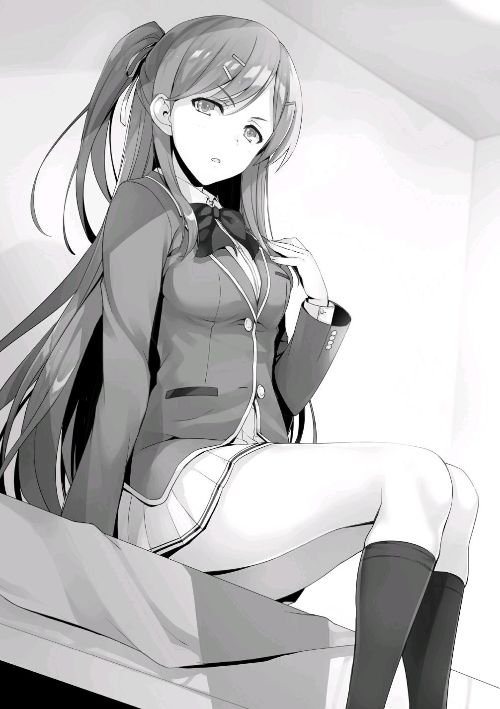
— Exactamente lo que dije. ¿Crees que es una criminal?
— No lo sé. A mí tampoco me interesa.
— Aunque no te interese, debes tener una opinión al respecto. ¿Crees que Ichinose es una buena persona o una mala persona?
— No puedes decir que alguien sea una mala persona sólo porque es un criminal. Igual que no se puede decir que alguien es una buena persona sólo porque no sea uno.
En primer lugar, las definiciones de bueno y malo son ambiguas y subjetivas.
Dependiendo de cómo se mire, lo que se considera bueno y malo puede cambiar rápidamente.
— …
Kamuro me miró con indiferencia.
No tenía intención de permitirme mover la conversación en esta dirección.
En ese momento, no había manera de seguir evitando la esencia de la plática.
— Creo que las cartas son como los rumores que alguien en algún lugar ha estado difundiendo.
— Sí. Escuché que alguien en algún lugar ha estado propagando rumores.
— Es una conjetura, pero creo que algunos de esos rumores son ciertos o al menos se acercan a la verdad. Es por eso que Ichinose no luchó contra los rumores, o en este caso, no luchará contra las cartas. Si lo hace, la verdad que ha estado tratando de mantener oculta será revelada.
— Su estrategia es continuar ignorándolo para que los rumores sólo sean una sospecha.
— Sí. Sin embargo, eso no resuelve el problema. Si la persona que está propagando los rumores conoce la verdad, tarde o temprano surgirán más y más rumores específicos hasta que Ichinose lo admita. Es muy probable que cuando llegue ese momento, ella no sea capaz de pasarlo por alto.
El agua caliente empezó a hervir, así que la vertí en una taza.
Luego puse la taza de chocolate caliente sobre la mesa. Kamuro no la cogió.
— ¿No lo vas a beber?
— Soy sensible a los líquidos calientes.
Me pregunto si es verdad.
— Es justo como pensabas. Ahora mismo, Ichinose está siendo atacada por una estudiante que conoce el secreto que quiere mantener oculto.
— ¿Por qué sabes algo así?
— Ya sabes por qué. Después de todo, Sakayanagi lo dijo delante de ti.
Por supuesto, lo recuerdo.
Sin embargo, Kamuro no debería tener ninguna razón para decírmelo.
¿Era ésta también una de las estrategias de Sakayanagi?
— Dicho esto, Sakayanagi no sabe que estoy hablando contigo sobre esto en este momento. Probablemente se enfadaría si lo supiera.
— En otras palabras, ¿estás diciendo que traicionaste a Sakayanagi?
— Esa es una forma de decirlo.
— Lo siento, no puedo creerlo.
— Supongo que tiene sentido. Por lo tanto, también te diré el secreto que Ichinose ha estado guardando. Después de todo, mañana o pasado mañana, todos los demás seguramente ya habrán escuchado hablar de ello.
En cuyo caso, puedes probarme que las cosas que dices son ciertas, ¿eh?
— Pero antes de contarte eso, necesito contarte algo más. Sobre por qué he dejado que Sakayanagi me manipule como lo ha hecho.
— ¿Tu historia personal?
— Sé que no estás interesado, pero me vas a escuchar.
No importa si estaba interesado o no, planeaba escucharla de todas formas.
Porque si no lo hacía, nunca se iba a ir.
PARTE 2
Fue una semana después de la ceremonia de entrada a la escuela cuando Sakayanagi se puso en contacto conmigo por primera vez.
De regreso a los dormitorios, me detuve en la tienda. Rápidamente terminé mis asuntos y me fui.
— Un momento, por favor.
En el camino entre la tienda y los dormitorios, una de mis compañeras me llamó.
— ¿Qué es lo que quieres?
— No ha pasado mucho tiempo desde que empezamos la escuela aquí, así que pensé que me gustaría hablar contigo un rato, Kamuro-san.
— Recuerdas mi nombre.
— He memorizado los nombres y rostros de todos mis compañeros.
Dicho esto, la velocidad de esta chica era muy lenta.
El bastón para caminar que sujetaba con una mano era una prueba más que suficiente para demostrar que sus piernas estaban mal.
Recordé su nombre, Arisu Sakayanagi. Era muy llamativa debido a su discapacidad física. Aunque no tenía intención de recordar los nombres de mis compañeros, el de ella se las había arreglado para quedarse conmigo por algún motivo desconocido.
— ¿Puedo acompañarte en el camino de regreso?
Normalmente me negaría. Sin embargo, aunque no fue directamente debido a sus piernas enfermas, su estado de ánimo hizo difícil rechazarla.
— Haz lo que quieras.
— Muchas gracias.
Me dio una sonrisa agradable y se apresuró un poco para ajustarse a mi ritmo junto a mí.
— No voy a ayudarte si te caes por excederte.
— Estaré bien. Este bastón y yo somos viejos amigos.
Dicho esto, no se movía muy rápido.
— Haa....
A pesar de que di un suspiro deliberadamente fuerte, Sakayanagi no pareció prestarle atención.
Su apariencia externa era frágil, pero tenía el corazón de un león.
— Por cierto, ¿qué estabas haciendo en la tienda de conveniencia?
— ¿Qué?
— Por lo que puedo ver, no me parece que hayas comprado nada.
— ¿Y qué? A veces no puedes encontrar lo que quieres.
Intenté terminar la conversación allí, pero Sakayanagi me agarró del brazo.
— Estabas robando en la tienda, ¿no?
Preguntó Sakayanagi, mirándome directamente a los ojos.
Sus ojos brillaban. Era como si acabara de encontrar un nuevo e interesante juguete.
— Aunque supongo que ya has visitado el lugar unas cuantas veces para determinar la posición de las cámaras, ¿fue tu primera vez en esta escuela?
¿O cuántas veces son con esta?
— ¿Estás segura de que robé algo?
— Sí. Parece que no me tomas muy en serio, pero tengo confianza. Si no estuviera segura, no te habría preguntado si robaste algo.
— Bueno. Eso es verdad.
Sakayanagi se acercó a mí porque fue testigo de cómo robaba en la tienda.
— Aunque robara algo, ¿qué importa? ¿Vas a contarle a la escuela?
— Déjame ver. Aunque sería muy sencillo informar de esto a la escuela, por favor escúchame antes de que llegue a ese punto.
— ¿Eh?
Sin dejar claro si se había dado cuenta o no de mi confusión, Sakayanagi continuó:
— Tu ejecución fue magnífica. Lo que más me sorprendió fue cómo mantuviste la compostura. Normalmente, la gente compraría cosas baratas como chicles o caramelos para aliviar su culpa. Sin embargo, parece que nunca has hecho eso. Eso también prueba que robar en las tiendas se ha convertido en algo rutinario para ti.
Sakayanagi había dado en el blanco. Después de verme en acción una vez, pudo darse cuenta de que lo había hecho durante mucho tiempo. Pero, ¿qué importa eso?
No tenía intención de dejar que esto continuara por mucho tiempo.
No importaba lo buena que haya sido mi ejecución, el hecho de que me viera durante la ejecución nunca desaparecería.
— Haz lo que quieras.
Busqué en mi mochila y saqué la lata de cerveza que había robado de la tienda.
Generalmente, a las personas menores de 20 años no se les permite comprarla.
Sólo se vendía para los profesores y el resto del personal que vive en el campus.
— Date prisa y llama a la escuela.
Aunque dije eso, Sakayanagi me preguntó algo totalmente distinto.
— ¿Bebes a menudo?
— ¿Hah? ...No. A mí no me interesa el licor.
— En otras palabras, no usas el robo en las tiendas como una salida para aliviar las cargas de la vida diaria, sino como un medio para saborear una emoción y experimentar la culpa del pecado.
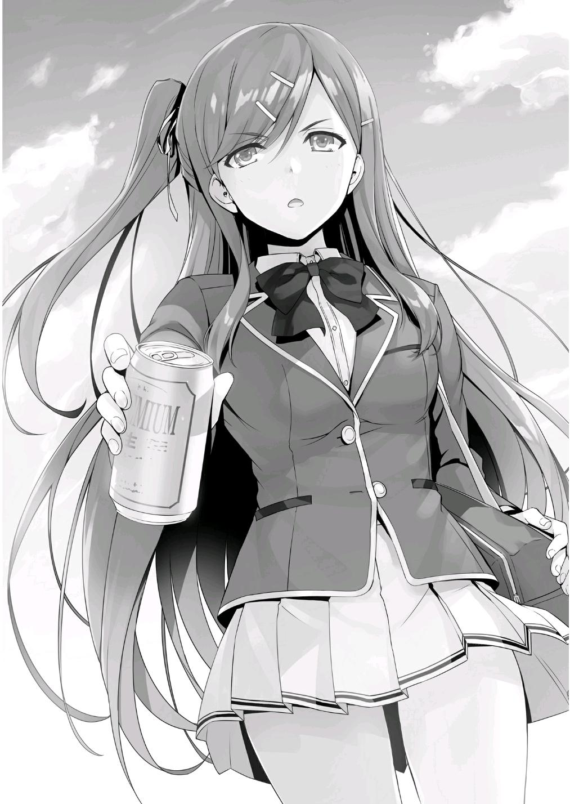
Procedió a analizar la situación con arbitrariedad.
— Lo entiendo. Eres capaz de analizar con calma una situación. Así que,
¿qué tal si vamos y me entregas a la escuela de inmediato?
— ¿Estás segura de que quieres eso? Si la escuela descubre que robaste en una tienda, no podrás evitar la suspensión.
— ¿Y qué?
— Aún no ha pasado una semana desde la ceremonia de entrada. Todavía hay muchas cosas, tanto agradables como no tan agradables, por las que esperar después de esto, ¿sí?
— Si no vas a contactar con la escuela, lo haré yo misma.
Traté de sacar mi teléfono, pero me detuvo.
— Has llegado a gustarme, Masumi Kamuro-san. Tienes que convertirte en mi primera amiga.
Con eso, me instó a que guardara mi teléfono.
— ¿Qué estás diciendo?
— Guardaré tu secreto, así que a cambio, por favor, ayúdame con algunas cosas.
— Eso.... no es lo que yo llamaría un amigo.
— ¿Es eso cierto?
— Además, ¿crees que te escucharé de forma obediente?
— De hecho, incluso si te reportara a la escuela, no sufrirás mucho daño.
Pero a pesar de ello, tu estatus como ladrón de tiendas quedaría al descubierto. Si eso ocurriera, ¿no causaría problemas con tu capacidad de robar de nuevo en el futuro?
— No sólo estás diciendo que me dejarás salirme con la mía esta vez, sino que incluso puedo hacerlo otra vez si lo deseo....
— Eres libre de hacer lo que quieras. No me involucraré en eso. En primer lugar, aunque te dijera que lo que haces no es aceptable desde el punto de vista moral, no hará cambiar tu forma de ser. ¿O me equivoco?
— Eso... Bueno, supongo...
— Aún así, creo que seguir mis instrucciones será cualquier cosa menos aburrido. Ese lugar en tu corazón que sólo puede satisfacerse robando en las tiendas.... Tal vez pueda encontrar algo más que ocupe su lugar.
Ese fue mi primer encuentro con Arisu Sakayanagi.
PARTE 3
— Ah, qué cansancio. Ha pasado mucho tiempo desde la última vez que me senté y dije algo así.
Terminada su historia, Kamuro me miró con la misma expresión seria que tenía al principio.
— En resumen, soy una habitual ladrona de tiendas.
— ¿Aún recientemente?
— Sakayanagi me ha hecho trabajar duro. No he tenido el tiempo libre para robar nada.
Aunque no era algo que quisiera, no parecía estar insatisfecha.
Antes de Sakayanagi, probablemente nunca habían confiado en Kamuro. Ella llevaba algo de oscuridad en su corazón.
Sin embargo, era necesario para Sakayanagi poner a Kamuro en una posición en la que no pudiera seguir cometiendo crímenes.
Por lo tanto, Sakayanagi se aprovechó astutamente de ella. Si Kamuro continuaba robando en las tiendas, tarde o temprano la descubrirían.
No importaba si robaba fuera de las instalaciones de la escuela, pero lo hacía dentro del campus.
Cuando la tienda finalmente se percatara de lo que sucedía con su inventario, no les tomaría mucho tiempo descubrir la verdad.
Si eso ocurriera, la Clase A sufriría definitivamente una cantidad significativa de daño.
— Antes del campo de entrenamiento, Sakayanagi dijo que tú e Ichinose escondían el mismo secreto.
En otras palabras, asumiendo que todo lo que Kamuro acaba de decir sea verdad, Ichinose también tiene una historia de robar en tiendas.
— Ahí es exactamente a donde quería llegar con esto.
— En cualquier caso, ¿qué esperas lograr revelándome tu pasado?
Dependiendo de la situación, no sería imposible investigar sus crímenes del pasado.
En cuyo caso, Kamuro sufriría en soledad.
— No me agradan particularmente Sakayanagi o Ichinose. Pero, para ser honesta, el hecho de que Ichinose haya robado también me afectó mucho.
Es tan increíblemente popular que debería estar completamente satisfecha con lo que tiene, pero la verdad es que debería ser lo mismo para mí.
Kamuro se rió autodestruyéndose.
— Detén a Sakayanagi. Puedes hacerlo, ¿verdad?
— ¿Así que quieres que ayude a Ichinose?
— Sí. Así como es la situación ahora, Ichinose definitivamente será aplastada.
No hablo de que la aplasten físicamente, me refiero a su corazón.
— Ya veo.
Es difícil confirmar si lo que Kamuro ha dicho es verdad, y es igual de difícil para ella probarlo.
Incluso si la tienda notara una diferencia entre su inventario digital y su inventario físico, sería muy difícil determinar la causa de ello. Después de todo,
podría tratarse de un empleado de la tienda que cometió un error de manejo.
Aunque comenzó a robar en las tiendas inmediatamente después de la inscripción, no robó el mismo artículo varias veces. Fue una cosa de una sola vez.
También sería imposible pedirle a la tienda que me muestre el material de vigilancia.
El único movimiento que podría hacer sería reportar el robo de Kamuro a la tienda y a las autoridades de la escuela. Pero incluso entonces, seguir adelante con eso sería muy desfavorable para mí, independientemente de si su historia es cierta o no.
Aunque asuma que lo que dijo es verdad, no quiero seguir obedientemente lo que me pide.
Aunque es probable que no esté satisfecha con Sakayanagi, hay pocos incentivos para que la traicione sólo para pedirle ayuda a alguien desconocido como yo.
En cuyo caso, ¿cuál es el sentido de todo esto?
Pensando en ello razonablemente, todo esto fue llevado a cabo de acuerdo con las instrucciones de Sakayanagi.
Probablemente decidió usar a Ichinose como medio para entrar en una confrontación directa conmigo.
— Entonces, ¿crees que estoy mintiendo?
Tras un largo periodo de reflexión, Kamuro rompió el silencio.
— Para ser honesto, no hay garantía absoluta de que lo que dijiste sea verdad.
Por supuesto, después de escucharla, quedó claro que es casi seguro que dice la verdad.
Aún así, no lo admití por la estrecha relación de Kamuro con Sakayanagi.
— ... Ya veo. En ese caso, ¿debería simplemente demostrártelo?
— ¿Puedes?
— Probablemente.
Mientras decía eso, sacó su carné de estudiante y me lo entregó.
— Entonces, espera aquí y no cierres la puerta.
A continuación, Kamuro abandonó la habitación.
No puede ser, ¿está planeando robar algo ahora mismo para probar que es una ladrona de tiendas?
Miré distraídamente su carné durante un rato, y después de unos 10 minutos, Kamuro volvió. Sacó algo de su ropa y me lo mostró.
— Oye, ya está...
Parece que mi conjetura dio en el blanco.
— Si bien pensé en tomar un paquete de chicles o algo, agarré una cerveza.
De esta manera es más creíble.
Si se tratara de algo como chicle que cualquiera pudiera comprar, habría sido sencillo para que me engañara con sólo comprarlo antes. Pero es una historia completamente diferente cuando se trata de alcohol. Aunque le pidiera prestada una identificación a otro estudiante, no habría podido comprar esta bebida. Es imposible que los estudiantes compren productos con restricciones de edad.
Además de eso, no es realista pensar que haya utilizado a los trabajadores de la escuela o a los maestros del campus. No había duda de que se trataba de mercancía robada.
¿Lo hizo para ganarse mi confianza?
— ¿Lo entiendes ahora?
En ese momento, Kamuro intentó guardar la cerveza, pero extendí mi mano.
— Por si acaso, déjame asegurarme de que es auténtica. Podría ser falsa.
— ...Idiota. ¿Podría hacer algo así?
Kamuro mostró reticencia durante un momento, pero no tardó mucho en entregarla.
Estaba helada, como si acabara de comprarse en la tienda.
Lentamente analicé la superficie de la lata. Definitivamente es una auténtica bebida alcohólica.
— Si es tan importante, puedes conservarla.
— No es necesario.
En el remoto caso de que encontraran la lata en mi habitación, las cosas se pondrían difíciles.
Kamuro me quitó la cerveza de la mano y empezó a tirar la lata al aire.
— De todos modos, ¿me crees?
— Me mostraste la realidad. Debo creerte.
— Me alegra oír eso.
— Bueno, ¿por qué yo?
— No hay nadie más en esta escuela con quien pueda contar aparte de ti.
Deberías saberlo.
Tomé la taza de chocolate caliente que había preparado para Kamuro. En ese momento, estaba seguro de que ella no tomaría ni un trago. Ya se había entibiado porque ya habían pasado unos diez minutos.
— No hay ningún beneficio en esto para mí.
— Tal vez sí.
Aparentemente satisfecha con eso, Kamuro se puso en pie.
— Estaré esperando los resultados finales.
De esa forma, Kamuro intentó terminar la conversación de forma unilateral y se dispuso a abandonar la habitación.
— Espera un momento.
— ...¿Qué?
— Olvidaste tu identificación.
Al darse cuenta de que lo había olvidado por completo, agarró su carné de estudiante con la otra mano. Con eso, Kamuro finalmente se marchó.
Aunque, realmente me presentó algo problemático.
¿Ignorar la situación actual de Ichinose sigue siendo la decisión correcta?
— No... ¿Estoy seguro de eso?
Más bien, puede ser mejor opción aprovechar esta oportunidad.
Tomé mi identificación de estudiante y mi teléfono y salí de la habitación, me dirigí a la tienda de conveniencia.
En el camino, recibí una llamada del hermano mayor de Horikita.
Pensé que finalmente podría relajarme después de que la invitada no deseada se fuera, pero....
No obstante, la persona que llamó fue alguien inesperado. Esta no sería una llamada sin sentido.
— Hay algunas cosas de las que quiero hablarte.
El mayor de los Horikita habló justo después de que presioné el botón de respuesta.
— ¿Es urgente?
— Dependiendo de la situación, puede que ya sea demasiado tarde. Es acerca de mi hermana.
— ¿...Acerca de tu hermana?
Esto también es inesperado.
El mayor de los Horikita no mencionaría nada sobre su hermana menor a menos que las circunstancias fueran extremas.
— Kikyou Kushida. Ella hizo contacto con Miyabi Nagumo.
— ¿De verdad?
Me sorprendió, pero al mismo tiempo, me impresionó la velocidad de la red de información de Horikita.
— Pensé que estabas rodeado de enemigos. Has hecho muy bien en adquirir este tipo de información. ¿Quién te lo dijo?
— Esta información vino de Kiriyama. Está claro que mi relación con Nagumo se deterioró en el pasado campo de entrenamiento. Definitivamente va a intentar otra cosa. Tendré que tomar medidas en este momento.
Vicepresidente Kiriyama, ¿eh?
Mientras pensaba en silencio, continuó el mayor de los Horikita.
— No puedes confiar completamente en él, ¿verdad?
— No conozco a Kiriyama tan bien como tú.
— Eso está bien. Siempre pecas de precavido.
Como ex presidente del consejo estudiantil, Horikita siempre se acercaba a los demás con cierta confianza, ya fuera Kiriyama o Nagumo. Hasta que no hubiera sospechas o fuera traicionado, su confianza en ellos estaba grabada en piedra.
Nunca podría imitar ese tipo de comportamiento.
— Entonces, ¿qué pasó?
— Le pidió ayuda para expulsar a Suzune Horikita. Un movimiento muy atrevido.
— Me pregunto qué pasó que la impulsó a cambiar de estrategia.
Como castigo por perder la apuesta con Horikita, Kushida le dio su palabra de que no interferiría en el futuro.
Dicho esto, es evidente que no tiene intención de mantenerla.
Al iIgual que intentó usar a Ryuuen para conseguir su objetivo, ahora también intenta usar a Nagumo. Después de ver lo que Nagumo hizo en el campo de entrenamiento, no es una acción sorpresiva por su parte.
Por supuesto, Kushida también debió darse cuenta. A pesar de que se las arregló para llevar a Horikita a una situación desesperada, sólo consiguió meterse en una ella misma. Sin embargo, la necesidad no conoce ninguna ley.
Sentí que ella había llegado a esa conclusión. Para ser honesto, pensé que se había adelantado un poco al ponerse del lado de Ryuuen, pero acercarse a Nagumo no es mala idea para ella. Si se pone del lado de un estudiante de grado superior, no habrá otra persona que conozca su pasado después de que éste se gradúe.
Sin embargo, eso supone que Nagumo sea una persona de confianza.
— Después de esto, Nagumo o la gente cercana a él va a tomar medidas contra Suzune.
— ¿Qué quieres que haga? No me estás pidiendo que proteja a tu hermanita,
¿verdad?
— Si Suzune abandona la escuela en el futuro, eso será responsabilidad de ella. Sin embargo, Kushida también mencionó tu nombre como una existencia problemática.
— Entiendo...
Aunque puede que Nagumo no tenga mucho interés en mí, escuchar mi nombre una y otra vez le dará una pista.
En otras palabras, si no corto la conexión antes de que sea demasiado tarde, seguiré metiéndome en más problemas.
— ¿Cuál es la posibilidad de que Nagumo se pusiera en contacto con Hashimoto?
— ¿Cuál es tu razón para hacer esa pregunta?
— He notado un ligero cambio en el comportamiento de Hashimoto entre el principio y el final del campo de entrenamiento. No estaba seguro en ese entonces, pero después de encontrarme de nuevo con él recientemente, me di cuenta de que este cambio no es sólo algo que imaginaba, lo que hace que todo parezca aún más sospechoso. Es decir, Hashimoto escuchó algo sobre mí de alguien al final del campo de entrenamiento.
El número de personas en una posición en la que le dirían a Hashimoto lo que saben de mí es extremadamente limitado.
— Es como dices. Durante el campamento de entrenamiento, Nagumo le habló de ti a Hashimoto. Dicho esto, es probable que Hashimoto aún no haya llegado a la conclusión de que tú eres el estudiante que manipula a Suzune.
— Ya veo.
¿Así que está merodeando para averiguar la verdad?
— No creo que haya necesidad de preguntar, pero... ¿estás insatisfecho con esto?
— No. Incluso si ya lo supiera, la situación terminaría así.
— Supongo.
El mayor de los Horikita murmuró como respuesta.
No importa si uno de los seguidores de Sakayanagi desconfía de mí.
Mientras no haga nada, no descubrirán nada sin importar cuánto tiempo busquen pistas. Aunque piensen en una estrategia, una vez que Sakayanagi dé el visto bueno, el asunto ha terminado. Es mucho más fácil que tratar con Ryuuen o Nagumo.
Pero Nagumo tiene todas sus bases cubiertas. En este punto es un poco inapropiado esperar a ver qué pasa.
— Te he dado la información. Depende de ti decidir qué hacer con ella.
— Lo haré.
La llamada se desconectó.
En esta escuela, este tipo de información significa mucho. Todos los días, alguien siempre está elaborando un plan para mejorar a otra persona. En ese sentido, el Horikita mayor es útil como una de mis fuentes de información.
Aunque no es tan adaptable como Nagumo y no tiene una red de información tan grande, su credibilidad y precisión son mucho mayores.
En cualquier caso, las chispas están empezando a volar. Para detener el problema lo antes posible, tendré que ser yo quien dé el primer paso.
DIFUNDIENDO RUMORES
Transcurrió el fin de semana y ya es lunes por la mañana.
Después de salir de la ducha, me sequé el pelo con un cepillo de dientes en la boca. Había pasado más tiempo relajándome de lo habitual por la mañana. El plan es esperar hasta que se me haga un poco tarde para ir a la escuela.
Recordé que había apagado el teléfono antes de acostarme anoche, así que lo volví a encender.
La pantalla de mi teléfono se iluminó inmediatamente y mostró todos los mensajes que se habían acumulado durante la noche.
[Kiyotaka-kun, ¿tienes un poco de tiempo esta mañana? ¿Está bien si voy a tu habitación?]
El mensaje era de Airi, y parecía que llegó justo después de que me duchara.
También había una llamada perdida de Kei, pero la llamaré más tarde.
[Lo siento. Estaba en la ducha, así que no me di cuenta de tus mensajes. No hay mucho tiempo ahora mismo. ¿Podemos hablar en la escuela?]
[Está bien. No te preocupes. Puede esperar hasta más tarde.]
Su respuesta llegó inmediatamente después de que envié el mensaje.
La rapidez de su respuesta me hizo preguntarme si por casualidad estaba mirando su teléfono, o si estaba esperando a que le respondiera.
Sin embargo, su respuesta me dijo que no se trataba de una emergencia.
Siendo ese el caso, me concentré en arreglar mi apariencia primero.
No tuve tiempo de aminorar la marcha. Terminé mis preparativos para el día y llamé al ascensor para que me llevara al vestíbulo. Muchos estudiantes se dirigen a la escuela por la mañana, por lo que el ascensor está bastante
ocupado y no llega inmediatamente después de llamarlo. Había esperado hasta el último momento para ir a la escuela, pero aún así no pude evitar la espera.
Mientras tanto, saqué mi teléfono y le envié un mensaje a Kei.
[¿Cuál fue el motivo de tu llamada? Si es posible, me gustaría reunirme contigo esta noche.]
El mensaje fue marcado como leído inmediatamente después de que lo envié.
[No llamé por ninguna razón en particular, sólo olvídalo. De todos modos, estoy bien con la reunión, pero ¿podemos hacerlo antes? Ya tengo planes para salir con mis amigos esta noche.]
En ese caso, decidí sugerir un momento alrededor de las cinco.
[¿Esta bien a las 5? Cualquier momento antes de las 6 está bien.]
[Entonces, a las 5. ¿De qué se trata?]
[Te lo explicaré cuando nos encontremos.]
El ascensor llegó en cuanto envié el último mensaje.
Hirata era el único a bordo.
— Hola. Buenos días Ayanokouji-kun.
— Qué raro, Hirata. Ambos vamos a llegar en el último minuto, ¿no?
Hirata era un estudiante de honor, así que normalmente se iba a la escuela por las mañanas con bastante tiempo de sobra.
No es normal que sea uno de los estudiantes que sale tarde, pero lo es aún más si se está yendo a la última hora posible.
— Para ser honesto, había planeado irme antes, pero...
A medida que sus palabras se apagaban, su expresión cambió a una sonrisa un tanto complicada y amarga.
— ¿Pero?
Interrogué a Hirata cuando bajamos del ascensor en el primer piso, sólo para encontrar a varias chicas esperando allí.
No todas eran de la misma clase. Por el contrario, las chicas que estaban delante de nosotros eran desde la clase A hasta la clase D. Tuve que pensar por un momento en el motivo por el que se habían reunido todas, pero rápidamente me di cuenta de la situación.
— ¡Buenos días, Hirata-kun!
— Sí. Buenos días.
Tenía una sonrisa refrescante en su cara, pero aún así parecía algo agotadora.
— ¡Esto.... es para ti!
En coro, las seis chicas le regalaron chocolates de San Valentín al mismo tiempo. Esta escena es probable que ya se haya repetido muchas veces.
Cuando regresó a su habitación con los chocolates, me imaginé que seguramente se retrasaba tanto debido a que ya ha realizado algunos viajes de regreso a su habitación.
Me separé de Hirata y decidí apresurarme a ir a la escuela.
Habría sido fácil esperarlo, pero perdí ante la presión de no querer interponerme en el camino de las chicas.
Así que hoy es el día de San Valentín, ¿eh?
— Nunca antes me han regalado chocolates...
Accidentalmente murmuré una cosa así.
Antes de considerar si quiero una novia o no, creo que sería bueno recibir chocolates.
Me sorprendió que tuviera ese deseo.
PARTE 1
Al parecer, no era el único hombre entusiasmado con la idea de recibir chocolates de San Valentín.
Tan pronto como entré en nuestro salón, me di cuenta de que la Clase C estaba inmersa en una atmósfera extraña.
Muchos de los muchachos estaban reunidos en un solo lugar.
El día de San Valentín es la culminación de un año entero de excitación.
Era, junto con la Navidad, un día que resalta el romance entre los chicos y las chicas.
— Oh, ahí estás Ayanokouji. Ven aquí un momento.
Sudō me llamó, así que me acerqué al grupo.
— ¿Obtuviste algún chocolate?
— ¿Eh?
Sudō me preguntó con una expresión algo tensa, una luz en sus ojos.
— Para explicarlo, parece que realmente está preguntando si has recibido un chocolate de Horikita.
Añadió Ike con una sonrisa astuta.
— No digas cosas raras como esas, idiota. No tiene nada que ver con eso.
Contrariamente a lo que había dicho, los ojos de Sudō no sonreían en absoluto.
Estaban prácticamente llenos de intensidad demoníaca, exigiendo una respuesta.
— No obtuve nada de ella. No hay posibilidad de que me dé nada.
— ... ¿De verdad?
— Sí.
Sudō asintió un par de veces antes de liberarme de su firme mirada.
— Bueno, puedo entender por qué Ken está nervioso. Después de todo, Ayanokouji es un monstruo, ¿entiendes?
Con eso, Ike dibujó en el aire el contorno de algo parecido a una botella de agua de plástico con su mano.
— ...Ayanokouji, cabrón, no asumas que has ganado sólo por eso,
¿entendido?
— No, no estoy para nada...
Desde el campo de entrenamiento, a veces escuchaba cosas molestas sobre lo que pasó.
— Ahora que lo pienso, ¿cómo van las cosas por tu lado, Kanji? ¿Las cosas siguen bien con Shinohara?
— ¿H-huh? ¿Por qué mencionas a Shinohara ahora?
— En serio, deberías dejar de tratar de restarle importancia. Todo el mundo ya lo sabe.
— Todo el mundo lo sabe... ¿Lo sabes, Ayanokouji?
De alguna manera terminó tratando de confirmarlo preguntándome sobre ello.
Comprendí el flujo de la conversación a estas alturas, así que le respondí con un ligero asentimiento con la cabeza.
Ike gimió de vergüenza y se agachó para esconder su cara ruborizada.
— ¿Ves? Hasta un aguafiestas como Ayanokouji lo sabe. Entonces, ¿qué pasó? ¿Conseguiste algo de ella?
No noté que nadie tuviera envidia en la voz, probablemente porque Shinohara no es muy popular dentro de la clase. Su amigo Yamauchi podría haber mostrado una pobre muestra de irritación al respecto, pero en ese momento no tenía ninguna.
— No conseguí nada...
— Entonces tú y yo estamos en el mismo barco.
Sudō apoyó su mano en el hombro de Ike con simpatía.
— No, está bien. Tengo chocolates de Kushida-chan.
Mientras hablaba, Ike alardeaba orgullosamente de una caja de chocolates atada con un lazo rosa.
— Eso dices, ¿pero no han conseguido algo todos los chicos? También me dio chocolate.
— Lo mismo digo. Por supuesto que estoy contento, pero al final, sólo es un chocolate obligatorio.
No esperaba que Kushida diera chocolates a todos los hombres de primer año.
Me hizo preguntarme cómo lo hizo.
Aunque, para Kushida, supongo que no es tan sorprendente.
A pesar de todo, lo único que pude ver fue a un grupo de chicos hablando como locos. Este tipo de comportamiento infantil es la razón por la que ninguno de ellos puede acercarse a las chicas, pero no hay nada que se pueda hacer al respecto.
Es inevitable que así sea para una clase como la nuestra, que apenas tiene experiencia con el amor.
Conseguir algo o no conseguir nada. Todo depende de cómo se comporte alguien normalmente.
La reputación no es algo que se pueda cambiar rápidamente.
Me senté y pensé en esto, viendo como una chica de la clase B le ofrecía una caja de chocolates a Akito.
PARTE 2
— Mañana 15, se espera que todos ustedes completen un exhaustivo exámen provisional. Sin embargo, al igual que con el examen a principios
de este año, no tendrá ningún efecto en sus calificaciones. El objetivo es probar a fondo sus fortalezas actuales. Además, les ayudará a prepararse para los exámenes finales que se realizarán al final del año. Aunque las pruebas no contendrán preguntas idénticas, el examen provisional tendrá preguntas similares a las que se encuentran en los exámenes finales. No descuiden sus estudios sólo porque ascendieron a la clase C.
La apreciada explicación de Chabashira-sensei terminó, marcando el final de las lecciones de hoy.
Mientras la chica en el asiento de al lado comienza sus preparativos para regresar a casa, opté por hacerle una simple pregunta.
— ¿Cómo te va con Kushida?
— ¿Adónde quieres llegar?
— Te estoy preguntando si has tenido éxito con ella últimamente.
— No lo sé. Estoy trabajando duro para planear cómo mejorar mi relación con ella. ¿Intentas ayudar?
— Sólo preguntaba.
— Kushida-san ha cambiado, poco a poco.
— ¿De qué manera ha cambiado?
— Hoy, después de que terminemos aquí, tomaré el té con ella en el Centro Comercial Keyaki. La Kushida-san de antes habría rechazado ese ofrecimiento sin dudarlo.
Resultó que estos acontecimientos inesperados no parecían ser más que superficiales.
— En otras palabras, ¿esperas ver resultados?
— Si nos comunicamos, podríamos llegar a un entendimiento mutuo.
— Me alegra oírlo. Nos vemos.
Después de dar una breve respuesta a Horikita, me levanté de mi asiento.
— ...¿Qué fue eso?
En respuesta a mis acciones, Horikita me miró con un ligero rastro de desprecio en sus ojos antes de mirar hacia otro lado.
Poco después, Horikita también se puso de pie.
— Ah, Suzune. Uh.... ¿Cuándo es un buen momento para que me ayudes con mis estudios?
— Eso es muy proactivo de tu parte, Sudo-kun.
— Eso es.... bueno, no quiero abandonar la escuela, ¿sabes?
A pesar de lo que dijo, tenía una apariencia algo nerviosa.
Su verdadero objetivo era, por supuesto, recibir chocolates de San Valentín de Horikita.
— En cualquier momento está bien conmigo. Incluso hoy.
Sin embargo-
— Las actividades de tu club aún no se han detenido, ¿verdad? Tendremos tiempo para estudiar después de los exámenes provisionales.
Con eso, los sueños de Sudo se hicieron añicos.
Dejé el aula.
El grupo Ayanokouji estaba haciendo planes para reunirse, pero decidí no hacerlo esta vez.
Había otros asuntos que requerían mi atención en este momento.
— ¡Kiyotaka-kun!
Escuché mi nombre con reserva desde el pasillo detrás de mí.
— ¿Qué pasa, Airi?
— ¿De verdad no te vas a unir al grupo hoy?
— Ese es el plan.
— Está bien si llegas tarde, así que, ¿podrías intentar unirte a nosotros?
— Supongo.... ¿Quizás después de las 6?
— ¡Claro! ¡Creo que todos todavía estaremos juntos a esa hora!
— Muy bien. Me pondré en contacto contigo después, ¿de acuerdo?
Con eso, la expresión firme de Airi se convirtió en una sonrisa radiante. Me separé de ella y comencé a moverme hacia mi destino. El aula de la clase B
estaba extrañamente tranquila cuando llegué allí.
Como sólo había unos pocos estudiantes de clase B con los que podía hablar de forma fiable, hablar con Kanzaki habría sido mi primera opción. Sumida y Moriyama, con quienes había compartido alojamiento en el campo de entrenamiento, también habrían estado bien.
Sin embargo, mientras miraba alrededor del salón de clases, ninguno los tres estaban aquí.
Esperaba encontrar a alguien adecuado antes de que se fueran, pero no fue así como funcionó.
Decidí regresar por el momento.
Cuando salía, escuché por casualidad una conversación entre dos chicas cuando salían del salón de clases detrás de mí.
— Oye.... ¿Crees que la razón por la que Honami-chan estuvo ausente hoy....
— Algo así es totalmente imposible.
Los dos compartieron una breve charla entre ellas.
¿Ichinose se tomó un día libre?
¿Fue una mera coincidencia, o está relacionado con lo que pasó hace unos días, como dijo esa chica?
Pensé en esto mientras me alejaba de la clase B.
En primer lugar, ¿cómo supo Sakayanagi el secreto de Ichinose?
Sin lugar a dudas, existen técnicas de conversación diseñadas para obtener secretos de otras personas, como la lectura en frío y en caliente. Sin embargo, no puedo imaginar que Ichinose estuviera dispuesta a que se le escapara algo sobre su pasado robando en las tiendas. El hecho de que lo estuviera negando incluso ahora es prueba suficiente de ello.
Considerando cómo se ha manejado hasta ahora, incluso me hace preguntarme si alguna vez cederá o no ante la provocación de la mayor clase enemiga.
Sería diferente si fuera Ike o Yamauchi, pero Ichinose es inteligente.
— ¿Se dejó llevar por la instigación de Sakayanagi...?
¿Es posible que haya alguien más que sepa el secreto de Ichinose?
Pero incluso Kanzaki, la persona que parece ser el aliado más cercano de Ichinose, no sabía nada.
Y después de ver a sus amigas íntimas, parece que ellas tampoco lo saben.
Entonces, ¿uno de los profesores o... el consejo estudiantil?
— Si Nagumo abandonara a Ichinose y se pusiera del lado de Sakayanagi, sería posible.
Sin embargo, esta hipótesis se basa en que sean ciertos algunos supuestos.
En primer lugar, no hay más pruebas detrás de esta conclusión que lo que Kamuro me dijo.
Además, la única persona que podría refutar esa premisa sería Ichinose Honami.
La escuela puede ser grande, pero cuando se la compara con la sociedad, en realidad es muy limitada.
Debido a eso, si quieres hablar con alguien en secreto, debes dar la máxima prioridad a asegurarte de que los dos estén realmente solos.
Básicamente, esto implicaría limitar las interacciones a las primeras horas de la mañana o a las últimas horas de la noche.
Aunque no sé el número de habitación de Ichinose Honami, conseguirlo en este momento debería ser fácil. Simplemente hay que llamar a la oficina de gestión de los dormitorios y pedirlo directamente. No hay razón para que la escuela mantenga en secreto el número de habitación de sus estudiantes. Si les dices que estás en un aprieto para ponerte en contacto con esa persona, deberían ser comprensivos.
Hice la llamada para verificar el número de habitación mientras seguía caminando, obteniendolo sin ninguna dificultad.
Sentí la presencia de Hashimoto detrás de mí, mirándome desde lejos, pero le ignoré.
Recientemente, se ha dedicado a seguirme tanto de día como de noche.
No tiene un mal sentido de la distancia, dando la impresión de que ya tenía experiencia en seguir a la gente.
A primera vista, no parece que haya ninguna ventaja en ir a ver a Ichinose con él siguiéndome. Pero, en realidad es al revés. El hecho de que estuviera mirando fue exactamente lo que hizo que valiera la pena mostrarle lo que estaba haciendo.
Había decidido regresar temprano a los dormitorios para confirmar las cosas con Ichinose, así que fui a su piso. Desafortunadamente, había varias chicas frente a su habitación cuando llegué.
Un grupo de chicas que eran amigas cercanas a ella.
Inmediatamente me di la vuelta y volví al ascensor.
Tendría que rendirme por hoy.
PARTE 3
A las 5 en punto. Me puse en contacto con Kei, llamándola a un lugar a poca distancia de los dormitorios.
A pesar de que el destino es poco popular, no es que nadie lo visite.
—Ah, hace frío. ¿Por qué nos reunimos en un lugar como éste? Hay otras opciones, ¿sabes?
—Pero el vestíbulo no es bueno para ti, ¿verdad? Extraños rumores podrían empezar a propagarse si nos ven juntos de esta manera. Eso sería un problema para ti, ¿no?
—Bueno, más o menos.... Pero encontrarnos a escondidas así... ¿no se destaca a su manera? Si nos ven por descuido, siento que eso producirá rumores igualmente...
—No te preocupes por eso.
—Tengo la sensación de que no has sido muy cuidadoso con esto.... pero no importa.
No hay problema. Después de todo, el hombre que me ha estado siguiendo también tiene que aguantar un tiempo.
—Aún así, hace demasiado frío. Desearía que el verano llegara antes.
—En verano, ¿no dirías que desearías que el invierno llegara pronto?
Después de que le pregunté esto, reflexionó un poco sobre la pregunta.
—Así es como son las doncellas, ¿bien?
Karuizawa hizo pucheros.
—Ahora que lo pienso, me pregunto si no habrá un examen especial este mes.
—El campo de entrenamiento acaba de terminar, así que sería extraño.
—Entonces, ¿podemos tomárnoslo con calma?
—¿Están listos para los exámenes de fin de año? Parece que van a ser bastante difíciles.
Mientras decía esto, noté que los movimientos de Kei se ponían rígidos.
—Eh... ¿En serio?
Hasta ahora, Kei ha conseguido pasar de alguna manera, pero no estaba en condiciones de volver a ser negligente con sus estudios.
—¿Podrías ayudarme a estudiar?
—Pregúntale a Hirata. Sería difícil para ti, pero no imposible, ¿verdad?
Kei es lo suficientemente descarada como para pedirle ayuda, aún después de separarse de él, pero no parecía muy ansiosa por hacerlo. Me miró fijamente.
La solución más sencilla sería que Keisei le diera clases particulares, pero eso no es muy realista.
Si de repente la metemos en mi grupo, definitivamente habrá problemas.
—Tendría que ser a mitad de la noche. ¿Está bien eso?
—Es mucho mejor a que me expulsen, supongo.
Exactamente.
—Bueno, organizaré un horario.
—Está bien.
Sin embargo, incluso si aprueba los exámenes de fin de curso, un nuevo problema aparecerá poco después.
El próximo mes de marzo. Con toda seguridad, un gran examen especial nos espera.
Al parecer, sólo estará a salvo después de pasar lo que queda en el plan de estudios del primer año.
No podremos relajarnos hasta que esta batalla llegue a su desenlace.
—En fin, ¿qué necesitas de mí?
Preguntó ella, nerviosa por alguna razón.
—¿Qué pasa?
—Nada. Sólo pensé que querías encontrarte conmigo urgentemente hoy.
—No hay nada que hacer hoy, pero me gustaría comprobarlo con anticipación.
—Hmph.
Se mofó, una mirada de sospecha llenando sus ojos.
Decidí hacer caso omiso de ello y centrarme en el tema que nos ocupa.
—¿Sabes algo de este número?
Le mostré el número de teléfono sin identificar que me llamó unos días antes.
—¿Eh? ¿Quién es éste? ¿Qué, estás recibiendo llamadas de extraños?
—Algo así.
Kei presionó el botón de marcado en su teléfono e introdujo manualmente el número en el teclado virtual.
Si el número está registrado en su teléfono, aparecerá un contacto después de que el número haya sido tecleado.
—Parece que no tienes nada.
—Tengo más contactos que una chica normal, pero no conozco a muchos de los estudiantes mayores.
Quería ver si ella tenía el número registrado, pero, como esperaba, en el mejor de los casos era sólo una pequeña esperanza.
—¿Por qué no intentas llamarlo?
—Intenté hacerlo un par de veces, pero siempre está apagado.
—¿De verdad...? Si es tan importante, ¿por qué no me pides que lo compruebe por ti?
—Sí. Por eso te he llamado hoy. Pero, no seas descuidada con la manera en que lo haces.
Asintiendo con la cabeza, Kei tomó nota del número de teléfono.
—¿Eso es todo?
—Sí. Nos vemos.
Intenté terminar nuestra conversación, pero Kei me llamó con prisa.
—Por cierto, hay una cosita de la que me gustaría hablar. ¿Puedo preguntarte algo?
Mientras me despedía, Kei me detuvo con una extraña pregunta.
—¿Sabes qué día es hoy? Empieza. 5… 4… 3-
—...Esta es una pregunta más fácil de lo que imaginaba. Tanto que siento que me están engañando para que dé una respuesta equivocada.
—No lo pienses demasiado, sólo dímelo directamente.
—El día de San-
—Sí, sí, sí, sí.
Me golpeó con delicadeza en la cabeza con una cajita.
—¿Me estás dando esto?
—Originalmente iba a dárselo a Yousuke-kun, pero ya no hay razón para que lo haga.
—Para Hirata, ¿cierto?
—Oh, ¿así que no te gusta?
—No, estaba pensando con cuánto tiempo de anticipación te habrás preparado para el día de San Valentín.
Había pasado más de un mes desde que Kei había decidido romper con Hirata.
—Yo... yo me preparo cuidadosamente con mucho tiempo, ¿de acuerdo?
Aunque ya había decidido romper con él, todavía había una posibilidad de que lo necesitara, ¿sabes? Bueno, supongo que no debo esperar que alguien tan inexperto en el amor pueda entenderlo.
Eso puede ser verdad.
—Pensé que querías verme hoy esperando que te diera algo como esto.
—Lo siento. Nunca cruzó por mi mente.
Kei mostró brevemente una expresión ligeramente irritada en su cara, pero rápidamente se recuperó.
—Como sea, ¿conseguiste algo de otras chicas?
Kei cambió el tema muy levemente. Como si tratara de evitar hablar de ello.
—No, nada en absoluto.
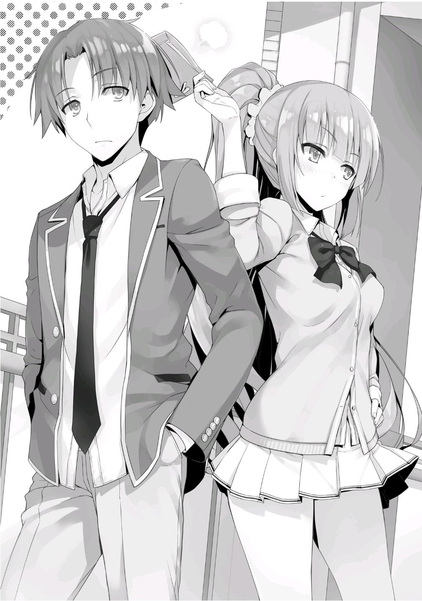
Decidí responder así, independientemente de si había recibido o no algo de otra persona.
—Te lo mereces. Un hombre que absolutamente no encaja con los demás~.
Empezó a burlarse de mí sin dudarlo.
—Pero, ¿estás de acuerdo? Si me das esto, ya encajaré, ¿sabes?
—Eso te hace mucho más lamentable. Sólo significa que tendrás que buscar la salvación en mí.
Realmente me miraba con desprecio.
—Ah, sí, y puedes agradecerme devolviéndome el favor 1000 veces.
Sigue diciendo insensateces irrazonables.
—Por cierto, uh-
Kei intentó cambiar el tema una vez más.
Sin embargo, se tragó sus palabras tan pronto como me miró a los ojos.
Parados a una corta distancia, nos miramos fijamente.
Lentamente moví la mirada en dirección al dormitorio.
—Bueno, entonces, me voy a mi habitación.
—Sí. Nos vemos.
Con ello, Kei estaba lista para volver rápidamente a los dormitorios.
Inmediatamente puse su regalo en mi mochila.
ALGO AMBIGUO
Para Hashimoto Masayoshi, la cuestión de a quién apoya era trivial.
O mejor aún, no sería una exageración decir que no le importaba en absoluto.
Independientemente de si el líder de la clase resultaba ser Sakayanagi o Katsuragi, escogería el bando que más le beneficiara. Eso es todo lo que había que hacer. Aunque tuvo la suerte de empezar en la Clase A, siempre consideraba la opción de caer a la Clase B o C.
Lo importante para él era tomar una posición que cambiara las cosas al final.
Esta fue la razón por la que, después de sentir su potencial, se había puesto en contacto con Ryuuen Kakeru después de que rápidamente asumió el poder dentro de la Clase C a principios de año.
Su talento excepcional podría haber derribado tanto a Sakayanagi como a Ichinose. Hashimoto se había dado cuenta de que el hombre tenía una fuerza ominosa. Si Ryuuen lo hubiera pedido, Hashimoto no habría dudado en filtrarle información sobre la clase A. Por supuesto, este comportamiento era sólo espionaje realizado bajo las instrucciones de Sakayanagi. Sin embargo, si Ryuuen tuviera el potencial para superar a las otras clases, él estaba totalmente preparado para traicionarla incluso a ella.
Por esta misma razón, se había enfocado en Ichinose en la Clase B. Sin embargo, Ichinose era diferente a Sakayanagi o Ryuuen porque los negocios turbios simplemente no funcionaban con ella. En respuesta a esto, Hashimoto decidió no ser demasiado insistente y optó por acercarse paulatinamente desde otro ángulo. Aunque no llegaría tan lejos como para traicionar a Ichinose, estableció conexiones con cierta persona de la clase B que era cercana a ella.
Hashimoto estableció rápidamente este tipo de red social con estudiantes de cada clase inmediatamente después de venir a esta escuela.
Era mejor preparar la mayor cantidad posible de seguros para hacer frente a situaciones inesperadas.
Y hoy, una vez más, estaba haciendo los preparativos preliminares para otra situación inesperada.
—U-um, Hashimoto-kun. ¿Tienes un minuto?
En los pasillos, después de la escuela. Una chica de la Clase A, Motodoi Chikako, llamó a Hashimoto. Al igual que Hashimoto, era miembro del club de tenis. Ella parecía haber corrido para alcanzarlo después de que él se hubiera ido del salón de clases. Tenía una apariencia un poco inquieta, incapaz de mantener completamente su compostura.
Hashimoto comprendió inmediatamente lo que estaba pasando sin tener que escuchar nada más.
Hoy era 14 de febrero. Ya había experimentado este tipo de escena varias veces.
Sin embargo, aunque entendía lo que estaba pasando, no dejó que se le notara en la cara. Por supuesto, él tampoco dirá nada.
—Claro, Motodoi. ¿Qué pasa?
Después de recibir una respuesta tan gentil, Motodoi ordenó sus pensamientos y los expresó.
—Esto es chocolate. Porque hoy es el día de San Valentín.
Mientras hablaba, ofreció el chocolate, el cual Hashimoto aceptó inmediatamente.
—Gracias Motodoi. Me alegro.
—¡Grandioso!
Hashimoto ya se había dado cuenta de que Motodoi lo miraba con afecto como miembro del sexo opuesto. Por lo tanto, lo más probable es que este chocolate tuviera intenciones románticas. Aunque estaba seguro de que tendría éxito si se confesaba, no sentía nada por ella. Esto se debía a que, para bien o para mal, la
veía como una persona que simplemente no valía la pena usar. Ya había juzgado que no había ningún beneficio en salir con ella.
—Deberías mostrar tu cara por el club de vez en cuando.
—Lo siento, últimamente estuve faltando mucho, ¿no?
—Por supuesto. Nuestros senpais han estado preocupados.
—Lo tendré en cuenta. De todos modos, me aseguraré de darte las gracias el mes que viene.
—S-sí.
Motodoi se sonrojó, asintió, y huyó. Era como si estuviera escapando de un ambiente embarazoso.
A pesar de que no había ninguna posibilidad de que los dos entablaran una relación, Hashimoto se aseguró de mantener abiertas sus opciones.
Después de todo, tal vez habría algún tipo de cambio con ella en el futuro.
Para compensar este retraso, Hashimoto aceleró su ritmo a medida que avanzaba hacia la clase C de primer año.
Por ahora, había alguien mucho más digno de su atención que Motodoi.
Un estudiante varón de la clase C, Ayanokouji Kiyotaka.
—¿Por qué me preocupo tanto por él?
Había una parte de sí mismo que no podía evitar preguntarse al respecto.
Antes del campo de entrenamiento, no tenía ninguna impresión de él. Era sólo otro estudiante con una cara vagamente familiar. Podía recordar que durante la competición deportiva había corrido un feroz relevo contra el ex presidente del consejo estudiantil, pero eso era todo lo que se le ocurría. Incluso entonces, Hashimoto no pensó que su evaluación de alguien debía cambiar simplemente porque era rápido con las piernas. Además, tanto Sakayanagi como Ryuuen se dieron cuenta rápidamente de cosas como ésta, pero Ayanokouji no había llamado la atención de ninguno de los dos.
Recientemente, sin embargo, hubo un incidente que le obligó a cambiar su opinión sobre Ayanokouji
Un curioso comentario del actual presidente del consejo estudiantil, Nagumo Miyabe, afirmando enigmáticamente que Ayanokouji era alguien a quien Horikita Manabu tiene en mayor estima que nadie. Hashimoto planeaba hacerlo pasar como una broma, pero de alguna manera era incapaz de hacerlo.
Mientras lo pensaba de nuevo, hubo señales que pasó por alto.
¿Por qué el ex presidente del consejo estudiantil y Ayanokouji se enfrentaron personalmente durante el relevo?
¿Y si esa confrontación fuera algo más que una mera coincidencia?
¿Y si fue intencional? ¿Impulsados por algún tipo de meta, presionándolos para que compitieran entre ellos?
Dudas como estas comenzaron a arremolinarse en su mente.
Hashimoto tampoco estaba convencido de lo que le pasó a Ryuuen, que fue derrocado por Ishizaki y otros de su misma clase. Además, la actual clase C, que había comenzado el año en la parte más baja de la escala, estaba empezando a cerrar la brecha con las clases altas.
¿Y si Ayanokouji estuviera realmente involucrado en cada uno de estos eventos?
—¿Y si... es una existencia que supera tanto a Sakayanagi como a Ryuuen...?
En este punto, ese razonamiento no le parecía muy probable.
Y eso era de esperar. Por ahora, no era más que una mera sospecha acompañada de delirios exagerados. Le faltaba algo definitivo para unirlo todo.
Lo que Nagumo había dicho era simplemente una broma irreal, y la realidad de lo que había pasado durante el relevo en el festival deportivo no era más que una fantasía que Hashimoto había inventado para adaptarse a su propia conveniencia.
Por eso Hashimoto decidió confirmar los hechos.
Normalmente pasaba su tiempo actuando bajo las órdenes de Sakayanagi, difundiendo rumores sobre Ichinose, pero recientemente pasaba su tiempo libre siguiendo a Ayanokouji, espiándolo para averiguar la verdad.
Hashimoto finalmente llegó a la clase C, pero Ayanokouji ya no estaba por ningún lado.
—Nunca pierdes el tiempo, ¿verdad Ayanokouji?
Su grupo de amigos es bastante reducido, por lo que rara vez se quedaba en el aula después de la escuela.
¿Hoy también estaba con Yukimura y Miyake y ese grupo de amigos íntimos?
Hashimoto lo consideró, pero vio que tanto Yukimura como Sakura aún estaban en el aula, así que rápidamente descartó la idea.
—Hola, Hirata.
Ver torpemente a los estudiantes de otra clase lo haría destacar.
Para evitarlo, inmediatamente después de llegar al aula, Hashimoto llamó a Hirata, que aún no había salido a sus actividades en el club.
—Hola, Hashimoto-kun. ¿Qué pasa?
—Sólo vine a ver si te has conseguido una nueva novia.
—¿Es eso todo? No estoy pensando en encontrar una nueva ahora mismo.
—En plena curación de tu corazón roto, ¿verdad?
—Jaja.... Algo así.
—Me gustaría escucharlo todo alguna vez. De todos modos, anduve pidiendo la información de contacto de los chicos con los que me alojé durante el campamento de entrenamiento. Quería ver a Ayanokouji, pero parece que ya se ha ido a casa.
—¿No te lo encontraste? Creo que se fue hace uno o dos minutos...
Lo había perdido por un instante. Juzgando rápidamente que aún podía alcanzarlo, Hashimoto dio las gracias a Hirata e inmediatamente salió al pasillo.
Los exámenes de fin de año se acercaban rápidamente, por lo que Hashimoto no podía permitirse el lujo de continuar siguiendo a Ayanokouji todos los días.
Esperaba llegar pronto a una conclusión definitiva sobre él para poder prestar toda su atención a los exámenes y hacerles frente en las mejores condiciones.
—Me encantaría ver algo nuevo en cualquier momento.
Haría su jugada en cuanto tuviera la oportunidad. Con esta convicción, Hashimoto siguió adelante.
Afortunadamente, Hashimoto vio a Ayanokouji de pie cerca de la entrada principal, su atención se centraba en su teléfono. ¿Se iba a reunir con alguien o estaba matando el tiempo? De cualquier manera, fue un golpe de suerte.
Ayanokouji siempre estaba usando su teléfono para mantenerse en contacto con alguien. ¿Se estaba poniendo en contacto con Miyake y los otros? ¿O estaba hablando con alguien que Hashimoto no conocía?
Lo único que podía decir con seguridad es que Ayanokouji era un objetivo inusualmente fácil de rastrear.
Hashimoto había seguido a un buen número de estudiantes hasta ahora.
Katsuragi, Ryuuen, Kanzaki, e incluso Ichinose a veces. Ninguno de ellos era particularmente fácil de rastrear. Sería un golpe de suerte poder seguir a uno de ellos una vez cada dos días. Por otro lado, se necesitaría más de una semana para encontrar cualquier información nueva sobre ellos si las cosas no salieran bien.
Sin embargo, Ayanokouji vivía una vida diaria monótona con una cantidad muy limitada de amigos y conexiones sociales.
Esto hizo que fuera increíblemente fácil anticipar sus acciones. Además, no mostraba ni una pizca de precaución con respecto a sus alrededores.
Nunca se fijaba en lo que había detrás de él, nunca mostraba ninguna señal de que tuviera sentidos agudos o una intuición aguda.
Aún así, Hashimoto no se dejaba llevar por el optimismo.
Aunque podría ser demasiado cauteloso, decidió que seguiría Ayanokouji desde más lejos de lo necesario.
En ese momento, Hashimoto recibió una llamada de uno de sus compañeros, Naoki Shimizu.
—Hola. ¿Ha pasado algo, Naoki?
—No... En realidad, es sobre esta mañana... estoy harto de esto.
—Ah. Probablemente sería mejor que te olvidaras de ello, ¿verdad? Hay mucha gente habladora en nuestra clase.
Un acontecimiento un tanto problemático había tenido lugar esa mañana en la Clase A. Shimizu se había confesado a una chica llamada Nishikawa, sólo para ser rechazado, y el rumor de su fracaso comenzó a circular entre las chicas de la clase. Quizás Nishikawa le había contado despreocupadamente a una de sus amigas sobre la confesión, y a partir de ahí se extendió por todas partes. Algo así pasaba de vez en cuando.
—A este ritmo no podrás confesártele a nadie si te preocupas demasiado por todo, ¿sabes?
—Así es... pero aún no puedo perdonar a Nishikawa por divulgarlo.
—Aunque me encantaría escuchar tus quejas, estoy en medio de otra cosa ahora mismo.
—Oh, ¿en serio? Lo siento mucho.
Hashimoto hizo arreglos para llamarlo esta noche y cortó la llamada.
—Así es como las confesiones terminan cuando no cumples todas las condiciones para asegurar tu éxito.
Con la determinación de consolar a su amigo más tarde, Hashimoto volvió a su misión de seguir a Ayanokouji de vuelta a los dormitorios.
—Si va directo a su habitación, supongo que hoy tampoco voy a encontrar nada nuevo.
Si hay algo doloroso en seguir a Ayanokouji, sería la monotonía general de todo el asunto.
Sin embargo, después de que Ayanokouji se metió en el ascensor, pasó el cuarto piso, donde se encontraba su habitación y siguió subiendo. Hashimoto observó el monitor del ascensor desde el vestíbulo mientras Ayanokouji bajaba en el piso de las chicas.
—Si mi memoria no me falla.... ese es el piso en el que está Ichinose, ¿no?
¿O fue una mera coincidencia, y él estaba allí para encontrarse con otra chica?
Sin embargo, dados los recientes acontecimientos, era difícil que no asociara cosas como ésta con Ichinose.
—Aunque es raro, es Ichinose... ¿Entonces es posible que sólo esté haciendo una visita de cortesía...?
Mientras que Ayanokouji tiene una cantidad muy limitada de amigos, Ichinose era increíblemente popular entre los estudiantes de todos los años escolares.
No sería sorprendente que fuera amiga de Ayanokouji. Además, eso sin tener en cuenta lo linda que es. No sería extraño que un estudiante esperara obtener algo haciéndole una visita de cortesía.
Sin embargo, Ayanokouji regresó inmediatamente al ascensor y bajó hasta el cuarto piso, donde se bajó.
—¿Qué...?
Nada tenía sentido. Hashimoto continuó observando el monitor mientras el ascensor regresaba al piso de Ichinose y varias chicas de la clase B subieron al ascensor. Llegó a la conclusión de que Ayanokouji se había topado con todas estas chicas que habían ido a visitar a Ichinose antes que él, y tomó la decisión de regresar tras haberse arrepentido.
Por si acaso, Hashimoto subió inmediatamente en el ascensor hasta el cuarto piso, pero Ayanokouji ya había desaparecido.
Estaba bastante seguro que había regresado a su habitación.
—Así que al final, hoy tampoco me entero de nada, ¿eh?
Al considerar si dejarlo por hoy o no, Hashimoto decidió finalmente reflexionar sobre la situación durante un tiempo en el vestíbulo.
Aún era muy temprano. Hashimoto decidió que todavía era bastante probable que Ayanokouji intentara ponerse en contacto con Ichinose más tarde, o incluso que potencialmente hiciera arreglos con alguien más. Además, mientras usara el ascensor, no importaba si subía o bajaba porque podría confirmar las cosas en el monitor.
La decisión de Hashimoto de quedarse por aquí dio sus frutos después de una hora más o menos.
Ayanokouji subió al ascensor y se dirigió al primer piso.
Lo que es más, aún no se había cambiado el uniforme de la escuela.
—¿Va a volver a la escuela?
No tendría ningún sentido que volviera a la escuela después de haber regresado a casa.
Por ejemplo, tendría sentido que no se molestara en cambiarse de ropa si simplemente se dirigía a la tienda de conveniencia, pero tenía su mochila con él.
Hashimoto se levantó rápidamente del sofá y se escondió en la escalera de emergencia.
—Me muero de ganas de ver adónde nos lleva esto.
Como si fuera en respuesta a los deseos de Hashimoto, Ayanokouji salió del vestíbulo y se dirigió hacia una parte relativamente despoblada del campus. Con esto, las probabilidades de que se dirigiera a la tienda o a la escuela desaparecieron. En cuyo caso, ¿con quién se encontraría? No, el lugar al que se dirigía no era adecuado para una simple reunión con un amigo.
Dada la situación, cualquiera se llenaría de anticipación sobre lo que va a hacer y con quién se va a reunir.
La idea de que se iba a encontrar con alguien era segura en aquel momento.
Si se va a reunir con el ex presidente del consejo estudiantil Horikita, o incluso con Ryuuen, las cosas estaban a punto de ponerse muy acaloradas.
Sin embargo, todas y cada una de sus expectativas fueron traicionadas espectacularmente por lo que presenció.
—Woah, woah, ¿hablas en serio...?
La persona que acudió a la cita con Ayanokouji no era otra que Karuizawa Kei, de primer año de la Clase C.
Era una chica que, debido a su reciente ruptura con Hirata, había causado un pequeño revuelo en la clase A. Aunque Hashimoto nunca había tenido contacto con ella hasta ahora, no podía ocultar su asombro por su inesperada aparición.
Los sentimientos de debilidad comenzaron a abrumarle. La traición de todas sus expectativas.
Esto no tenía nada que ver con el "otro lado" de Ayanokouji que Hashimoto había estado tratando de descubrir. En cambio, esto era una cuestión de amor.
Su cerebro automáticamente trató de verlo bajo una luz diferente, pero no importa cómo lo mirara, la relación entre ellos estaba claramente más allá de la de meros amigos.
Hashimoto había presenciado la relación entre Hirata y Karuizawa varias veces antes, pero nunca había sentido una fuerte sensación de “amor” o “intimidad”
entre ambos.
—...No lo entiendo. ¿Por qué Ayanokouji?
En primer lugar, ¿cuál de ellos estaba interesado en el otro? ¿O ambos estaban interesados? Podía hacer suposiciones tanto como quisiera, pero aún así nunca llegaría a una respuesta. Después de todo, en un nivel fundamental, no existen las respuestas cuando se trata del amor. Si se comparara objetivamente Ayanokouji con Hirata, el 80% de las chicas terminaría eligiendo a Hirata. Sin embargo, no sería extraño que el 20% restante eligiera a Ayanokouji.
Es decir, si hubiera 100 personas, 20 de ellas acabarían eligiendo Ayanokouji.
En cuyo caso...
—¿Ayanokoji... ha estado en contacto frecuente con Karuizawa...?
Hashimoto abandonó inmediatamente esa idea. Era algo que se le había ocurrido para explicar la situación actual, nada más que un aspecto de su imaginación. No podría llegar a ninguna conclusión sin investigar más las cosas.
Sin embargo, debido a la poca cantidad de personas que pasaban por el lugar donde hablaban, era imposible acercarse para escuchar exactamente lo que decían.
—¿Qué debo hacer....?
Justo cuando Hashimoto se preguntaba qué hacer después...
Hubo un repentino desarrollo entre Karuizawa y Ayanokouji
—Chocolate, ¿eh?
Karuizawa entregó a Ayanokouji un objeto que tenía en sus manos. Hoy era 14
de febrero. Para que entregue algo en un lugar tan evidentemente apartado del ojo público, cualquiera podría decir lo que ha entregado sin ver siquiera el regalo.
Por lo tanto, está claro que, como mínimo, Karuizawa favorece a Ayanokouji.
—Bueno, en cualquier caso, supongo que puedo dejarlo así por hoy.
Sin embargo, este trozo de conocimiento no estaba relacionado con lo que originalmente se propuso descubrir.
Con esto en mente, Hashimoto regresó a casa. Sin embargo, luego se detuvo seco.
—Es una oportunidad única.... ¿Por qué no enfrentarlo directamente?
Dado que no le quedaba mucho tiempo para los exámenes de fin de curso, esta podría ser también la mejor opción para él.
Podría sacudir un poco las cosas si mete a la fuerza a Karuizawa en esto, alguien que no tiene nada que ver en esta situación. Era su oportunidad de exponer las debilidades de Ayanokouji. Al mismo tiempo, si Ayanokouji no muestra ninguna respuesta a su desafío, Hashimoto podría concluir que no tiene nada de qué preocuparse.
Satisfecho con su decisión, Hashimoto se dirigió hacia Ayanokouji y Karuizawa.
PARTE 1
Sentí la presencia de alguien que se nos acercaba por detrás. Su ritmo es rápido.
Tanto es así que era obvio que no tenía la intención de pasar por alto la cercanía de mi conversación con Kei.
—Hola, Karuizawa.
Era Hashimoto, que ocultaba su presencia detrás de mí desde que dejé el vestíbulo.
—...Uh, ¿quién?
Kei parecía no saber quién era Hashimoto, así que se dirigió a mí para pedirme una explicación.
—Es Hashimoto de la clase A. Me agruparon con él durante el campo de entrenamiento.
—Oh sí, y Ayanokouji también.
Tras este rápido saludo, Hashimoto se acercó a Kei.
—Que un hombre y una mujer tengan una reunión secreta en un lugar como éste.... Eres muy hábil, Ayanokouji.
Ya sabía que Hashimoto intentaría ponerse en contacto conmigo, pero tenía que pensar por qué había elegido este momento.
Sin embargo, también usaré su plan para mi beneficio.
—No estamos haciendo nada en particular...
—No intentes ocultarlo. Es el día de San Valentín. Aunque no sean pareja, no es extraño tener una reunión secreta como ésta. En realidad, ya recibiste algo de ella, ¿no?
Al parecer, Hashimoto me vio aceptar su chocolate e inmediatamente ponerlo en mi mochila.
—Acaba de darme este chocolate por casualidad. No vine aquí esperando conseguir nada.
Intenté negarlo, pero Hashimoto pudo ver a través de mi excusa con una sonrisa burlona en su cara.
—No, sabías que ella te daría un chocolate desde el principio, ¿no? Tu mochila.
—¿Mi mochila?
—Ya que has vuelto a los dormitorios, no hay razón para que traigas tu mochila contigo cuando salgas.
—...No, originalmente tenía la intención de ir a la biblioteca. Pero justo antes de que pudiera salir, Karuizawa me llamó y accedí a encontrarme con ella, eso es todo.
—En otras palabras.... ¿Es sólo una coincidencia?
Asentí con la cabeza en respuesta a la deducción de Hashimoto antes de sacar dos libros de la biblioteca de mi mochila y mostrárselos para demostrarlo.
—Bueno, es lo mismo de todas formas. Al final, conseguiste un chocolate de Karuizawa.
Desde el punto de vista de Hashimoto, a pesar de que no fui yo quien se acercó a Karuizawa, el hecho de recibir un chocolate de ella era realmente importante.
—No estoy seguro de entender... ¿Hay algún problema con esto?
—Tengo curiosidad por saber qué es lo que le interesa a Karuizawa. Su anterior novio, Hirata, era uno de los chicos más populares de toda la escuela, ¿verdad? Me hace preguntarme por qué te escogió después de dejar a Hirata.
En otras palabras, quería saber cómo llegaron las cosas a este punto.
Kei, que había estado escuchando nuestra conversación en silencio, habló.
—Aah, lo siento, pero hubo un malentendido.
—¿Malentendido?
—Sí. Originalmente planeé darle ese chocolate a Hirata-kun. Hubiera sido una pena tirarlo, así que pensé en dárselo a alguien, y luego me decidí por Ayanokouji-kun.
—¿Entregas un regalo tan íntimo, y luego dices que sólo es por un capricho? Lo siento, pero no me parece. Además, ¿qué pasa con este lugar? Para ser una mentira, es una muy mala.
Hashimoto se rió mientras decía eso, a lo que Kei respondió con una contundente muestra de ira.
—¿Quuéé? Apareces repentinamente y dices todo lo que te viene en gana.
¿Quién te crees que eres?
Kei le miró con una mirada autoritaria en sus ojos.
—Simplemente quiero saber la verdad.
Hashimoto estaba un poco abrumado.
Sin embargo, era cierto que no habíamos ocultado muy bien los aspectos extraños de nuestro encuentro.
Por eso decidí cambiar de dirección.
Esta sería la oportunidad de Kei de demostrar lo bien que puede seguirme el ritmo.
—Bueno, será mejor que hables honestamente, Karuizawa. Si seguimos ocultando algo, creo que será problemático para ti después. Si este tipo piensa que estamos saliendo, tendrías problemas, ¿verdad?
Dicho esto, le pasé la batuta.
Sin dudarlo, Kei emitió un solo suspiro intencional.
—Ugh. Lo diré, pero esto no puede salir de aquí, ¿bien?
Con esto, Kei señaló a Hashimoto.
—Sólo le he confiado temporalmente este chocolate a Ayanokouji-kun, para que él se lo dé a la persona que me gusta.
—Entonces, ¿estás diciendo que Ayanokouji es sólo el intermediario?
—Así es. ¿Lo entiendes ahora?
La expresión de Hashimoto decía que era simplemente increíble.
—Si ese es el caso, ¿entonces para quién es ese chocolate?
Hashimoto continuó su interrogatorio.
—¿Eh? Esta es la primera vez que te veo, ¿pero quieres que te diga algo así? ¿Eres estúpido?
Kei definitivamente estaba alborotando las cosas, pero nada parecía ser falso.
Ese era el disfraz de gyaru que Karuizawa Kei había creado para ella misma.
—Eso.... Bueno, supongo que tienes razón.
Hashimoto asintió con una mirada algo sorprendida en su cara y terminó inclinando la cabeza para disculparse.
—Esto no desaparecerá con sólo bajar la cabeza. En serio, ahórratelo.
—... ¿De verdad? Parece que realmente lo he malinterpretado, lo siento.
Cuando pensé que ustedes dos podrían gustarse, no pude evitar sospechar.
—¿Por qué te metes en algo con lo que no tienes nada que ver?
—Bueno, cuando se trata de ti, estoy involucrado.
—¿Qué?
Hashimoto se acercó un poco más a la irritable Kei.
Alargó su brazo y lo apretó contra la pared detrás de ella, cerrando el paso con su cuerpo.
—¿Qué... qué?
—Por un tiempo me ha parecido que estás muy bien, así que, ¿qué tal si sales conmigo, Karuizawa? No sé quién te gusta ahora, pero si todavía no le has dado el chocolate, significa que aún no has transmitido tus sentimientos. ¿No es cierto?
Pensando que aún tenía una oportunidad con ella, Hashimoto hizo un movimiento forzado sobre Kei.
—¿Qué estás diciendo...? ¿Crees que me parecería bien algo así?
—Todo es parte de los impredecibles giros y vueltas del amor... ¿No es interesante?
Con eso, me miró fijamente durante una fracción de segundo.
Puede que haya intentado provocar una reacción de mi parte haciendo un movimiento sobre Kei.
Hablé en voz alta.
—Bueno, entonces, supongo que voy a volver.
—¿Eh? Espera, yo también volveré.
Kei empujó enérgicamente a Hashimoto y se alejó de él.
—Qué fría.
Hashimoto sonrió con amargura. Y no parecía que fuera a continuar con su táctica agresiva.
O mejor dicho, parecía que había perdido todo el interés en Kei.
Dada la situación actual, Kei dio un notable y premeditado suspiro y volvió a los dormitorios ella sola.
—Perdón por entrometerme en estas cosas.
—No, no es nada.
Caminé junto con Hashimoto hasta el punto en que el camino hacia los dormitorios y la escuela se separan.
—Aún así, lo tienes difícil cuando se trata del amor, ¿no?
—¿De qué estás hablando?
Hashimoto sonrió burlonamente antes de abrazarme el hombro y me susurró al oído.
—Hablo de que eres muy grande. Las chicas que no tienen experiencia no podrán con la tuya.
Sacando a relucir eso otra vez....
—No te veas tan exhausto. Hay un buen número de personas que te respetan por ello.
No estaba nada contento.
Más bien, lo que ocurrió en el campo de entrenamiento se estaba convirtiendo en una fuente constante de incomodidad.
—Por cierto, King. ¿Qué tal si intercambiamos información de contacto?
—Me parece bien dártela siempre y cuando no vuelvas a usar ese apodo que se te ocurrió.
—Jajajajajaja. No lo haré, no lo haré.
Con ello, saqué mi teléfono e intercambié información de contacto con Hashimoto.
—Bueno, yo también voy a volver. Nos vemos, Ayanokouji.
Hashimoto llegó y se fue como el paso de una tormenta.
¿Pensó que había obtenido suficiente información? ¿O sintió que había ido demasiado lejos en algo que no tenía nada que ver?
En cualquier caso, mi existencia seguirá siendo incierta para Hashimoto.
Ojalá se quedara así.
Decidí pasar por la biblioteca y encontrarme con Hiyori, que debería estar esperando allí.
Y después de eso, también tuve que encontrarme con otra persona que había pedido que nos reuniéramos en la escuela.
PARTE 2
Llegué a casa esa noche más tarde de lo que esperaba, así que no pude reunirme con el Grupo Ayanokouji
Cuando volví a mi habitación justo antes de las siete, me encontré con una bolsa de papel que fue colocada justo enfrente de mi puerta.
Eché un vistazo dentro de la bolsa y encontré dos cajas con diferentes empaques. Uno era cuadrado mientras que el otro era un círculo, y cada uno de ellos venía con un nombre escrito en el frente. Eran chocolates de San Valentín de Haruka y Airi.
Basándome en lo que se hablaba en el chat grupal, Akito y Keisei habían obtenido lo mismo.
Fui a mi habitación y puse en fila todos los chocolates en mi escritorio.
—Nunca esperé tener cinco de ellos...
Kei, Airi, Haruka, Hiyori, y... otro.
Era una caja de chocolates envuelta con un adorable listón rosa.
Más tarde esa noche, justo después de las diez, salí de nuevo al pasillo con una sudadera con capucha sobre algo de mi ropa informal y subí al ascensor.
La cámara de vigilancia dentro del ascensor no debía ser capaz de capturar mi cara.
Era una medida preventiva en caso de que algo saliera mal. En primer lugar, hubiera sido ideal que nos encontráramos en otro lugar, pero no se podía hacer nada al respecto si realmente tenía que recuperarse de una enfermedad.
Por lo tanto, no sería extraño que estuviera durmiendo a estas horas de la noche.
Para comprobarlo, le pedí a Horikita que me dijera cómo ponerme en contacto con Ichinose. Ya le había enviado un mensaje de texto y confirmado que todavía estaba despierta, así que seguí adelante con mi plan.
Sin embargo, todavía no le había dicho a Ichinose que iría a su habitación.
Me bajé del ascensor en el piso de Ichinose y fui a su puerta. Toqué el timbre y esperé. Pasaron diez segundos. Luego veinte segundos.
No oí nada desde el interior de la habitación, así que llamé al timbre una vez más.
Era natural que Ichinose estuviera confundida por una visita tan tarde en la noche.
Después de unos treinta segundos más, decidí llamarla.
—Ichinose, soy yo. Ayanokouji.
Para mí sería un problema quedarme en su piso después del toque de queda.
Ichinose debió entender esto también.
Ella no estaría bien exponiendo despreocupadamente a alguien más a una situación peligrosa como esta.
—...Ayanokouji...kun. ¿Qué es lo que pasa?
Podía oír la voz de Ichinose desde el otro lado de la puerta. En cuanto al tono de su voz, sonaba débil.
Inmediatamente después de hablar, tosió desde el interior de la habitación. Me resultaba difícil discernir si estaba o no realmente enferma por el mero hecho de cómo sonaban su voz y su tos.
—Ha surgido algo importante. Esperaba poder hablar contigo en persona,
¿está bien?
—Bueno... Uh...
—Para ser honesto, parece que las cosas se pondrán feas si me ve otra chica ahora mismo.
La presioné un poco más enérgicamente.
—Espera un segundo, ¿de acuerdo?
Respondió de esa manera, y después de una breve espera, oí el sonido de la cerradura desbloqueándose desde el interior de la habitación.
Ichinose abrió la puerta. Pude ver que estaba increíblemente desanimada.
—Nyaha, eso fue un poco agresivo, Ayanokouji-kun...
Llevaba un cubrebocas y parecía estar en muy mal estado.
Después de todo, no estaba fingiendo estar enferma.
—Lo siento. Definitivamente me puse un poco enérgico. No parece que te vaya muy bien.
—Sí.... Sólo estoy un poco agotada, eso es todo.
—Me disculpo por venir en tan mal momento.
—Está todo bien. La fiebre ya casi ha desaparecido. ¿Cómo debería decirlo, en lugar de sentirme mal por la fiebre, me siento más hambrienta debido a que duermo demasiado, ¿sabes? Oh, lo siento, pero ¿puedo hacer que te pongas este cubrebocas?
Para que no me resfriara, Ichinose me regaló otro cubrebocas.
Mi sistema inmunológico es mucho más fuerte que el promedio, pero nadie está absolutamente seguro cuando se trata de cosas como ésta. Si rechazara imprudentemente su oferta y luego me enfermara, Ichinose terminaría arrepintiéndose. Acepté su oferta sin dudarlo un instante y me puse el cubrebocas.
—¿Has ido a la enfermería?
—Fui a principios de semana.
Muchos estudiantes pensaban que Ichinose fingia su enfermedad para evitar los rumores que se habían propagado sobre ella, pero ese no parecía ser el caso.
No había forma de equivocarse. Había estado muy enferma.
—Seguramente te preocupaba que estuviera ausente últimamente por todos esos rumores. Gracias por tu preocupación.
—No...
¿Consiguió comprender mis intenciones?
—Eres la primera persona con la que me encuentro cara a cara desde que me enfermé.
—¿De verdad?
—Hubo un montón de estudiantes que vinieron a visitarme mientras mi fiebre empeoraba, pero estaba pasando por un momento difícil, así que tuve que rechazarlos a todos. Desde entonces, algunos de mis amigos me han dado espacio, pensando que estoy deprimida.
Había venido a verla mucho después que todos los demás, pero irónicamente, fui la primera persona que se reunió con ella.
En realidad, Ichinose se había tomado un día libre para recuperarse de su enfermedad. Sin embargo, dada la forma en que se ha manejado hasta ahora, es obvio que también es del tipo que se asegura de mantenerse saludable. Dada la rapidez con la que se acercan los exámenes finales, Ichinose debió querer evitar enfermarse tanto como fuera posible. No hay duda de que este resfriado vino como resultado de su reciente trauma mental y el debilitamiento de su sistema inmunológico.
—No voy a faltar a la escuela sólo por esos rumores.
Bueno, la propia Ichinose no iba a admitir esa parte.
—Qué resistente de tu parte.
—¿Resistente, dices...? Ah, lo siento, pero ¿podrías cerrar la puerta principal detrás de ti? Estaba ventilando la habitación antes, pero ahora hace un poco de frío. Por favor, recuerda lavarte bien las manos después de volver.
—Sí.
Tenía un humidificador funcionando en su habitación para evitar que el aire se secara demasiado. El virus del resfriado se desarrolla en el aire frío y seco.
Estas condiciones aumentan directamente la cantidad de virus que flota en el aire. Debido a esto, es importante aumentar la humedad de la habitación para crear un ambiente donde el virus se vuelva inactivo. Descuidar estas precauciones podría provocar resfriados prolongados e incluso aumentar las probabilidades de infectar a cualquier visitante. De hecho, la razón principal por la que los resfriados tienden a prolongarse durante los meses de invierno es por la sequedad del aire.
Aunque, muchas chicas han ido a mi habitación últimamente, y yo también he ido a muchas de las habitaciones de las chicas. Es extraño cómo hasta ahora ninguna de esas visitas han tenido que ver con asuntos amorosos.
—¿Qué pasa...?
Ichinose me miró con una expresión extraña mientras me quedaba allí de pie mirando el humidificador.
—Realmente lamento interrumpir mientras descansas.
—No, realmente está bien. Definitivamente es más seguro no encontrarse con nadie en persona en este momento, pero probablemente sea mejor que alguien más sepa que realmente me enfermé.
Ichinose es muy consciente de que la especulación sobre la legitimidad de su enfermedad ya ha comenzado a extenderse.
Ichinose me mostró su teléfono, como si tratara de probármelo.
Había evidencias de varias conversaciones que había tenido con Horikita.
Parece que Horikita esta preocupada por Ichinose a su manera.
No hablamos mucho tiempo. Me despedí tan pronto como se presentó el momento adecuado.
PARTE 3
El día del examen provisional ha llegado.
Esta mañana, cada clase se centrará en el examen.
Sin embargo, nadie en el salón de clases estaba estudiando con ahínco, pues todos estaban inmersos en una conversación. Nada de esta conversación tenía que ver con los preparativos para el próximo examen. Más bien, el tema de discusión era algo que no tenía nada que ver con eso.
—Es bastante ruidoso.
—Por supuesto que lo es. Es por esos escandalosos rumores que aparecieron esta mañana.
—¿Escandalosos rumores ? ¿Hay otros nuevos sobre Ichinose?
—No. Son nuevos y han causado caos interno dentro de la clase C.
—Nuevos rumores, eh...
Con una sola mirada al inquieto salón de clases, era obvio que no se trataba de un asunto trivial.
—Por cierto, esto también tiene que ver contigo, Ayanokouji-kun.
Con eso, Horikita me mostró la pantalla de su teléfono.
Había escritos un total de cuatro rumores en el bloc de notas del teléfono.
—Esto...
・Ayanokouji Kiyotaka está enamorado de Karuizawa Kei
・Hondo Ryotaro sólo está interesado en chicas obesas
・Shinohara Satsuki era una prostituta en la secundaria.
・Satou Maya odia a Onodera Kayano
El contenido de los rumores seguía un patrón similar. Los nombres completos de cuatro personas, incluido yo, se mencionaban directamente como víctimas del ataque.
—¿De dónde vienen estos chismes?
—¿Conoces los foros que la escuela organiza para cada clase?
—Los que están en la aplicación de la escuela, ¿verdad?
Cuando los estudiantes necesitan revisar su balance de puntos o algo por el estilo, deben iniciar sesión en una aplicación que la escuela creó para ellos.
Junto con esta aplicación hay un conjunto de foros que los estudiantes tienen la libertad de usar como mejor les parezca. Sin embargo, debido a que hay varias aplicaciones de chat fáciles de usar ya disponibles en nuestros teléfonos, estos foros no eran muy útiles entre los estudiantes.
—Esa es una gran captura. ¿Quién los descubrió?
—Para cuando llegué al aula esta mañana, los rumores ya habían comenzado a extenderse. Es posible que alguien se los haya encontrado accidentalmente mientras usaban la aplicación. También hay notificaciones que se envían cuando se actualizan los foros.
Estos foros no son sólo para discusiones escolares. También se utilizan para conversaciones en general. Debido al hecho de que cualquiera puede tener acceso a ellos, hay una alta probabilidad de que estos rumores también sean vistos por las otras clases.
—¿No crees que esto es un poco diferente de lo que pasó con los rumores anteriores?
—Independientemente de si el culpable es el mismo o no, hay innumerables maneras de difundir rumores. ¿No estás de acuerdo en que no hay razón para dejarse atrapar por las diferencias? No es algo que se pueda ocultar ahora que se ha publicado en Internet.
Con eso, Horikita pasó a otro tema.
—Sólo preguntaré para estar segura, pero... ¿es verdad?
—No, no lo es —Lo negué inmediatamente—. Sólo hay unas pocas personas que saben de mi relación con Karuizawa tal y como es ahora.
—Entonces, ¿tienes alguna idea de quién lo publicó?
—No exactamente.
Le di un breve resumen de lo que sucedió durante mi encuentro con Hashimoto el día anterior.
—Es muy probable que Hashimoto-kun sea el que difunde los rumores sobre Ichinose-san, así que no sería extraño que también difundiera estos nuevos rumores sobre ti y Karuizawa-san.
—Pero, ¿qué hay de las otras víctimas? No hay muchas maneras de verificar la verdad.
—Sí...
Un estudiante dispuesto a investigar personalmente la verdad de cada uno de estos rumores....
—¡Oye! ¿Realmente eras una prostituta, Shinohara?
Incapaz de leer la atmósfera del salón, Yamauchi gritó algo así con una sonrisa en su cara.
—¡Por supuesto que no!
Shinohara se levantó presa del pánico y lo negó categóricamente. La vergüenza y la ira se podían ver claramente en su cara.
—Bueno, entonces, ¿qué tal si me muestras las pruebas?
—¿Pides pruebas...? ¿Cómo se supone que voy a darte algo así?
Mientras tanto, el público, cautivado por los rumores, comenzó a propagarlos entre los estudiantes que recién entraban al aula.
Bueno, iba a terminar así tarde o temprano.
—Si dices que es mentira, ¿entonces estás diciendo que todo lo que han puesto en línea también es mentira? ¿Que todos estamos hablando por hablar?
Mientras observaba el desarrollo de la discusión de Shinohara y Yamauchi, confirmé mis pensamientos con Horikita.
—Hmm... supongo que no tenemos otra opción que comprobar con cada una de las víctimas una por una como Yamauchi.
Aunque, la mayoría de la gente no es capaz de entrometerse en los traumas de alguien de esa manera.
—¡¿Eres estúpido?! Crees en los rumores y ni siquiera sabes de dónde vienen.
La ira de Shinohara hacia Yamauchi era muy razonable.
Fue sorprendente que pudiera mantener la calma así.
—Aunque... ¿no crees que todo lo publicado en Internet parece bastante real?
—¡Tú... ya basta, Haruki!
En respuesta a la despiadada persecución de su amigo, Ike extendió la mano y agarró a Yamauchi por el hombro para señalar que era hora de detenerse.
—¿Qué... qué pasa? Esta es mi oportunidad de vengarme de Shinohara por actuar siempre tan arrogante.
—¿Vengarte de ella...? No importa lo que pase, ¡esos rumores tienen que ser mentiras!
—¿Cómo se supone que vamos a saber eso? Una chica relativamente fea como ella podría haber hecho algo así.
Yamauchi continuó hablando sin pensar, sin preocuparse por los sentimientos de Ike al respecto.
—Ah, ya veo.... Ike, estás enamorado de Shinohara, ¿no? Así que por eso no puedes admitir-
—¡Haruki!
Ike agarró a Yamauchi por el cuello de su camisa.
—Basta ya, chicos.
Incapaz de seguir sentado y mirando desde lejos, Sudou los separó a la fuerza.
Al mismo tiempo, Hirata llegó al aula e inmediatamente se dio cuenta del estado de la situación. Se acercó a algunas de las chicas y comenzó a escuchar los detalles de los rumores.
Como Shinohara lo negaba todo, Yamauchi decidió cambiar temporalmente de objetivo a otra persona.
—Bueno, entonces, Hondo~ ¿En serio sólo te gustan las chicas gordas?
Yamauchi dirigió su ataque hacia Hondo.
—¡De ninguna manera! ¡Absolutamente no! ¡Esos rumores son mentiras!
¿Verdad, Ayanokouji? Probablemente ni siquiera te gusta Karuizawa,
¿verdad?
Naturalmente, Hondo también negó todo. Luego se dirigió a mí para que le ayudara a escapar del centro de atención.
La atención de todos se volvió hacia mí inmediatamente. Afortunadamente, Kei y la mayoría de sus amigas aún no han llegado al salón de clases.
Le respondí asintiendo con la cabeza.
—¿Ves?
Gritó mientras volvía a prestar atención a Yamauchi.
—Maldita sea. ¿Qué demonios...? ¿Son sólo mentiras?
Como los tres negamos nuestra parte en los rumores, el aula comenzó a calmarse un poco.
—Pero.... a Satou-san no le agrada mucho Onodera-san, ¿verdad?
Maezono murmuró estas pocas palabras. Probablemente salieron de su boca sin pensarlo dos veces porque Onodera aún no había llegado a la escuela.
—¡¿Qué...?! ¡Espera, Maezono-san!
Satou intentó desesperadamente detener a Maezono, pero ya era demasiado tarde.
—Ahora que lo pienso, ¿alguien ha visto a Satou salir con Onodera antes?
—Eso es...
Las cosas se desarrollaban de tal manera que ya no era posible descartar los rumores como simples mentiras.
En esta situación, Sudou confirmó que Ike y Yamauchi seguirían separados antes de acercarse a mí y a Horikita.
—Ayanokouji. ¿De verdad no te gusta Karuizawa?
Incluso Sudou sintió que necesitaba hacer esa pregunta.
—No, no lo sé.
—Bueno, no me importa si es verdad o no. Hey, Suzune.
—¿Qué, Sudou-kun?
—Ah, bueno, es sólo que me las arreglé para escuchar parte de tu conversación. Si te parece bien, me gustaría ayudar.
—¿Cómo?
—Bueno, no me da vergüenza. Debería ser capaz de preguntar por ahí sobre los rumores directamente como lo hizo Haruki.
Sudou le presentó esta oferta.
Es cierto que Sudou podría ser una herramienta útil para determinar exactamente de dónde proceden estos rumores.
Aunque al mismo tiempo, dijo que había escuchado nuestra conversación, así que debería haberme escuchado decirle a Horikita que no estoy interesado en Kei.
—No deberías hacer nada que baje la valoración que los demás tienen de ti. No eres muy respetado por tus compañeros. Deberías centrar tu atención en mejorar la forma en que otras personas te ven. Piensa en cómo los comentarios irrespetuosos de Yamauchi-kun han reducido dramáticamente su estatus social dentro de la clase.
Fue como si Yamauchi hubiera logrado derrocar instantáneamente a Sudou de su posición como la persona más odiada de la clase.
Lo más significativo es que incluso Ike, su mejor amigo, había expresado su enojo por el comportamiento de Yamauchi.
—Probablemente sea cierto.... Pero realmente quiero ser útil de alguna manera.
Sudou me miró un momento antes de darse la vuelta inmediatamente. Supongo que debe haber sido vagamente consciente de que Horikita me consultaría sobre varias cosas. Por supuesto, él también debería entender que es fácil para nosotros hablar simplemente porque nos sentamos uno al lado del otro.
—En ese caso, deberías vigilar a Yamauchi-kun para asegurarte de que no se descontrole. Sería diferente si estuviera circulando un rumor positivo, pero esta vez, si estos rumores problemáticos en verdad son ciertos, todo se vuelve realmente personal. Me gustaría que te ocuparas también de Hondo-kun porque estos rumores probablemente le han desanimado un poco. Puedes hacerlo, ¿verdad?
—...Sí, tienes razón.
Sudou parecía un poco decepcionado, pero siguió obedientemente las instrucciones de Horikita.
Después de confirmar que Sudou se había ido, Horikita volvió al tema que nos ocupa.
—Con toda probabilidad, todo esto también ha sido parte del plan de Sakayanagi. No se conformó con perseguir sólo a Ichinose-san, así que preparó el mismo tipo de trampa para la clase C. Luego atacó a ambas clases al mismo tiempo. Creo que está tratando de alterarnos antes de nuestros exámenes finales... ¿Qué debemos hacer?
—¿Qué quieres decir con "qué debemos hacer"? ¿Crees que hay una manera de afrontar estos rumores? Cuanto más intentemos negarlo, más vamos a aumentar el asunto. Aunque admitiéramos que son ciertos, la gente seguirá murmurando a nuestras espaldas. Los rumores sobre mí no son gran cosa, pero si los rumores sobre los otros empiezan a ser tratados como si fueran verdad, entonces podrían causar mucho daño.
—...Sí. Eso puede ser verdad.
Horikita asintió con aprobación mientras miraba a Shinohara y a Hondo La forma en que lo hizo me hace preguntarme si se imagina a sí misma en su lugar.
—Pero, en cierto modo, esto fue un movimiento sucio. ¿Cómo podemos pelear contra algo así?
—No lo sé.
—Aunque veas que el fuego empieza a extenderse, ¿te vas a sentar a mirar?
—No es tan importante para mí. Por otro lado, es muy probable que Karuizawa se enfrente a algunos problemas.
—En otras palabras, ¿no te importa?
—Sí, no me importa.
Por alguna razón u otra, parecía que Horikita quería verme aterrorizado.
Debido a esto, pude ver a Horikita mostrar una rara expresión de decepción.
—En cualquier caso, es una suerte que no fuera al revés.
Al revés. Lo que significa que Kei es la que está enamorada. De mí. Esto daría lugar a más rumores sobre cómo está persiguiendo a otro hombre inmediatamente después de romper con Hirata. Habría toda clase de especulaciones por ahí.
Aunque algo no sea cierto, siempre habrá gente que lo considere verdadero.
Gente que trata la ficción como la realidad.
—Pero.... Yo no puedo sentarme y ver cómo sucede esto al igual que tú.
—¿De verdad?
Aunque dejáramos de lado los rumores, a juzgar por la situación actual, es evidente que el problema sólo va a seguir extendiéndose.
Yamauchi intentó acercarse a Shinohara y Satou de nuevo, pero Hirata intervino primero.
—Yamauchi-kun. El hecho de que se haya publicado algo en los foros de nuestra clase no significa necesariamente que sea cierto. Al menos, está mal que los compañeros de clase se lastimen así.
—Pero al igual que con los rumores de Ichinose, ¿no lo saben ya todos?
Así que no importa si decimos algo o no, ¿verdad?
—No estoy seguro de estar de acuerdo contigo en eso. Al menos no en la situación actual. Por eso, ahora mismo, creo que el curso de acción adecuado es evitar ser engañados por estos rumores mientras solucionamos todo.
Las palabras de Hirata fueron recibidas con fuertes voces de aprobación tanto de los chicos como de las chicas. Por supuesto, no era una solución permanente, pero por ahora bastaba para manejar la situación con éxito.
En ese momento, un mensaje llegó al teléfono de Horikita.
—De Kanzaki-kun...
Diciendo esto, Horikita echó un vistazo al mensaje.
—Parece que Ichinose-san se ha tomado el día libre.
El mismo día del examen provisional. Aunque sólo esté un poco enferma, debe querer participar en un examen como éste en el que se miden sus habilidades académicas. Sin mencionar que Ichinose es la líder de la Clase B, la que eligió asumir las cargas de todos sus compañeros. Bueno, a juzgar por su aspecto de la noche anterior, no había forma de que pudiera recuperarse completamente.
—Una cosa más.... Parece que también hay rumores en los foros de la clase B.
—Es decir, la clase B se ha enterado de los rumores de la clase C.
—Eso parece.
Horikita rápidamente se conectó a la aplicación en su teléfono y revisó los foros de la Clase B. Resulta que también hay cuatro rumores allí, similares a los encontrados en la Clase C. Lo mismo sucedió con el foro de la Clase D.
—Convenientemente, no se publicaron rumores en la Clase A. ¿Tienes tiempo hoy después de la escuela? Me gustaría escuchar en detalle sobre Ichinose, y también me gustaría discutir cómo tratar con estos foros.
—Claro.
Estuve de acuerdo con la petición de Horikita.
—Por ahora, concentrémonos en el examen provisional. Después de todo, esta es una valiosa oportunidad para confirmar el nivel de dificultad del examen final y comprender dónde estamos como clase.
Sin embargo, aunque esto sea fácil para Horikita, la gente que ha sido blanco de estos rumores no podría hacerlo tan fácilmente.
Cuando Kei y el resto de su grupo de amigas finalmente llegaron al aula, todas se reunieron y comenzaron a murmurar entre ellas.
Cada una observaba periódicamente en mi dirección con una mirada de asco en sus ojos.
Aunque no pude escuchar su discusión, estaba perfectamente claro qué tipo de cosas se decían. Algo así como...
“¿De verdad crees que Ayanokouji-kun está enamorado de Karuizawa-san?”
“¿Qué piensas de él, Karuizawa-san?”
Y no había duda en mi mente de que Kei estaba respondiendoles, describiéndome con palabras como "asqueroso" y " espantoso".
—¿No dijiste que no te importaba?
—... Aún así es un poco difícil.
Habría seguido viéndolas hablar, pero no quería escuchar ninguno de los insultos que estaban lanzando, así que miré hacia otro lado.
El verdadero problema son los otros estudiantes a los que se dirigen los rumores.
PARTE 4
El examen provisional comenzó a pesar de los rastros de la atmósfera incómoda e inquietante que todavía perduraban en el aula.
Era un momento crítico para el final del año escolar.
Este examen provisional fue más desafiante que cualquiera de los exámenes que hemos hecho hasta ahora. Fue realmente difícil.
Sin embargo, los estudiantes que lograron pasar los exámenes anteriores sin ningún problema, deberían ser capaces de pasar este también sin problemas.
Por otro lado, los estudiantes que apenas se han mantenido a flote de un examen a otro probablemente tendrán que estudiar mucho para avanzar.
Había recibido una invitación para estudiar con todos en el grupo Ayanokouji, pero iba a reunirme con Kanzaki y Horikita después de la escuela, así que me puse en contacto con ellos y les dije que empezaran sin mí. Kanzaki no parecía querer destacarse mucho, así que organizó un encuentro en el Centro Comercial Keyaki una vez terminado el examen provisional.
Después de clase, seguí a Horikita hasta el lugar donde Kanzaki estaba esperando. Estaba cerca de la entrada sur del centro comercial.
Era el lugar del campus más alejado de la escuela, por lo que los estudiantes rara vez se encontraban en la zona.
No tenía ningún interés en las batallas entre clases que se estaban llevando a cabo, pero como amigo, seguía un poco preocupado por Ichinose.
Obtener más información tampoco estaría de más.
Además, Hashimoto me ha estado vigilando continuamente durante los últimos dos días.
Si me pongo en contacto con la clase B, la sombra que se avecina de la clase A seguirá acercándose aún más.
Y ese era exactamente el tipo de desarrollo que esperaba.
De hecho, Hashimoto me había seguido desde una distancia apropiada hasta la entrada sur del centro comercial.
—Dos días seguidos de descanso. ¿Y todavía no has podido ponerte en contacto con Ichinose-san tú mismo?
—No es que no podamos ponernos en contacto con ella, es sólo que ha sido lenta en respondernos. Lo más que he recibido de ella ha sido una notificación de que está enferma por un resfriado.
Recientemente, Kanzaki se encuentra en un estado de estrés constante, completamente incapaz de relajarse. Probablemente Ichinose le ha dicho innumerables veces que deje de preocuparse por ello, pero no parece que sea tan fácil para él.
Su mala condición física puede ser una de las razones por las que es tan reacia a encontrarse con sus compañeros de clase personalmente, pero al mismo tiempo, ella realmente no quiere hablar de los rumores.
—¿Qué dijo tu profesora sobre eso?
—Nada diferente de lo usual. Sólo que Ichinose se quedó en casa otra vez porque está resfriada.
A su profesora le debió decir lo mismo que a cualquier otra persona.
La razón por la que la expresión de Kanzaki es tan pesada es porque no puede evitar cuestionar la verdadera razón de la ausencia de Ichinose. Recientemente, Ichinose ha estado en el centro de un torbellino de rumores. La incertidumbre de Kanzaki está totalmente justificada.
—¿Qué tal si vamos a visitarla? ¿No quedaría claro si te reúnes con ella en persona?
—Algunas de las chicas de mi clase han intentado verla, pero parece que ninguna de ellas ha conseguido que abra la puerta.
Al darse cuenta de que la situación no era muy esperanzadora, Horikita consideró cuidadosamente las opciones antes de hablar.
—Supongo que si hay un lado positivo, es que es excelente con sus estudios. Aunque no hizo el examen provisional, no creo que tenga problemas.
Los estudiantes enfermos que se perdieron el examen como Ichinose tenían opciones. Podrían tomar un examen de recuperación y acercarse a otros estudiantes para ver cómo era el examen.
—Eso no es lo que nos preocupe a ninguno de nosotros. Sólo estamos preocupados por su estado de ánimo.
Horikita y Kanzaki.
Justo cuando los dos empezaban a idear un plan, un grupo de personas se acercó a nosotros.
Por lo visto, Hashimoto ya le dio un informe sobre nuestra reunión....
—Parece que Ichinose-san también está ausente hoy. Los exámenes de fin de año comenzarán a finales de la próxima semana. Si su cadena de
ausencias se repite hasta entonces... puede convertirse en un problema,
¿no crees?
—...Sakayanagi.
Sakayanagi y sus subordinados se acercaron a Kanzaki, dejando muy claro con quién venía a encontrarse en realidad. La acompañaban Hashimoto, Kamuro, y otro estudiante más, un chico de la clase A llamado Kitou En otras palabras, los principales miembros de la facción Sakayanagi.
—Ahora, ¿de qué rayos podrías estar hablando con estos estudiantes de la Clase C?
—Esto no tiene nada que ver contigo.
—Parece que no somos bienvenidos aquí.
—Si querías ser “bienvenida”, entonces deberías haber dejado de esparcir extraños rumores por todas partes antes de que las cosas se salieran de control.
Sakayanagi y sus compañeros se miraron y no pudieron contener su risa.
—Oh, por favor. ¿De qué estás hablando?
—Espero que sepas que la unión de mi clase no vacilará sólo por un par de rumores.
—No sé nada sobre la situación de la Clase B, pero estoy deseando que llegue el futuro.
Puede que Sakayanagi solo haya venido para ver los resultados de sus planes en persona, pero Kanzaki le estaba dejando perfectamente claro lo eficaces que eran esos planes.
—No dejes que te afecte, Kanzaki-kun. Todo esto es parte de la estrategia de Sakayanagi-san.
—Lo sé.
Ante un problema como éste, Kanzaki sufría precisamente por su modestia y preocupación por los que le rodeaban.
PARTE 5
Incluso después de la escuela, los rumores continuaron extendiéndose sin cesar.
—¡Espera! ¡Espera, espera, espera, espera! ¡¿Qué está pasando Kiyotaka?!
Mientras pasaba algún tiempo libre después de llegar a casa de la escuela, recibí una llamada de Kei.
—¿Qué quieres decir con "qué está pasando"?
Ya sabía adónde quería llegar, pero quería preguntarle de todos modos.
—¡Para con el "qué quiero decir"! Hay un rumor por ahí de que estás enamorado de mí. ¿Cómo no te diste cuenta?
—No te preocupes por eso.
—N-no, no, no. ¿Crees que puedo ignorarlo porque es un rumor? En primer lugar, ¿cómo terminó así?
Empezó a hablar tan fuerte que empecé a sentir un doloroso zumbido en la parte interna de mi oído, así que aparté el teléfono de mi cabeza por un momento.
Presioné el botón de mi teléfono para bajar el volumen de la llamada.
—Tal vez Hashimoto lo difundió después de lo que pasó ayer. O tal vez algún otro estudiante nos vio juntos.
—¡Eeee~!
Kei emitió un silencioso grito.
—Bueno, está bien, ¿no? Sería terrible para ti si nuestras posiciones fueran al revés.
—¿Al revés?
—Un rumor como "Kei está enamorada de mí" sería bastante problemático,
¿no? Si terminara así, creo que todos sospecharían mucho más de ti que de mí porque acabas de romper con Hirata.
—...Supongo que sí, pero...
—No te preocupes por eso. Los rumores siempre tienden a desaparecer con el tiempo.
—¿De verdad?
—Dicho esto, gracias a este rumor, debería ser más fácil para nosotros dos ponernos en contacto y seguir adelante. Si empiezo a hablar contigo ahora, la gente asumirá que es por el rumor, y podríamos dejarlo así.
Todo depende de cómo lo pensemos.
Nunca tuve la intención de hablar con ella en un lugar llamativo, pero este rumor podría actuar como un seguro sólo en caso de que lo necesitara en algún momento.
—No, no, no, no, no, no, no.
Esta vez, repitió la palabra "no" varias veces más de lo que lo había hecho antes.
—Si nos ven juntos a solas, la gente nos mirará de forma extraña, ¿verdad?
Absolutamente extraña, ¿verdad?
¿Acaso repetir las cosas de esta manera se está convirtiendo en una especie de tendencia? Qué manera más extraña de hablar.
Este era el tipo de información que estaba plantando indirectamente para Hashimoto mientras me seguía.
—De todos modos, no te preocupes.
—Aunque digas eso... no, ¡es absolutamente imposible!
Después de un largo silencio, ella terminó decidiendo que era demasiado difícil.
Después de refunfuñar en silencio sobre otra cosa durante un rato, Kei se rindió y terminó la llamada.
PARTE 6
La situación comenzó a desarrollarse a un ritmo vertiginoso.
El examen especial parecía que no iba a ocurrir este mes, así que todos deberían haberse concentrado en prepararse para el próximo examen de fin de año, pero algo muy problemático aún se estaba desarrollando.
Era viernes 18 de febrero. Tres días después del final del examen provisional.
A una distancia considerable del campus de la escuela, los estudiantes de las clases A, C y D se habían reunido.
Dada la importancia del próximo examen, Hirata intentó detener la propagación de los nuevos rumores, pero a pesar de sus mejores esfuerzos, se las arreglaron para extenderse por toda la escuela.
La clase A, la única clase de la cual no se habían publicado rumores en los foros de la escuela, ya estaba aprovechando esa información.
—Oye Ishizaki, ¿hay algo que quieras decirme?
Con la misma actitud de siempre, Hashimoto, de la Clase A, habló y le hizo una pregunta a Ishizaki.
—¿Algo que quiera decir? ¡Dímelo tú, Hashimoto! ¿Qué haces trayendo Kitou contigo? ¿No te dije que vinieras solo?
—Bueno, tú también trajiste a Albert. Sólo estoy siendo cuidadoso.
Había un ambiente tenso y agobiante entre los dos.
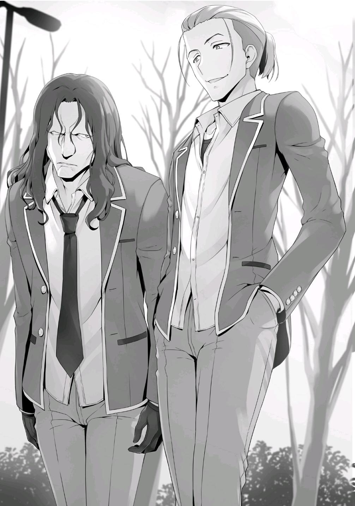
El ambiente hacía difícil imaginar que vivieron en la misma habitación durante el campamento de entrenamiento. Aunque, en última instancia, su reacción entre ellos era comprensible.
—Acabamos de invitarlos aquí para tener una charla. ¿No es cierto, Ishizaki-kun?
Ishizaki y Albert no eran los únicos estudiantes de la clase D que vinieron a participar en la conversación. Hiyori e Ibuki también vinieron con ellos.
—Bueno, mientras puedan controlarse, supongo que todo estará bien.
—Pero...
Aunque se detuvo, la preocupación de Hiyori era razonable.
Ante la personalidad de los presentes, era difícil imaginar que no pasaría nada.
—Pero, ¿qué hay de estos tipos? No sabía que también invitaste a gente de la clase C.
Mirándonos, Hashimoto emitió un suspiro exasperado.
—No sé. ¿No son ustedes los que los invitaron?
Parecía como si tanto la Clase D como la Clase A se sintieran un poco incómodas por nuestra presencia.
—Es justo como dijiste, Ayanokouji.
Akito habló a mi lado, acompañado por el resto del grupo Ayanokouji Antes de venir aquí, nos encontramos todos en el café y estábamos a punto de empezar a estudiar juntos.
—Había estado pensando en ese momento hace ya tiempo, cuando Kanzaki y Hashimoto se estaban peleando. Luego los vi a todos saliendo del campus, así que se lo mencioné a Akito...
Después de ver a los estudiantes de las clases A y D salir del campus, le hice saber a Akito que podría haber algo más sucediendo, similar a lo que ocurrió la última vez, e inmediatamente fuimos a echar un vistazo.
Sin embargo, Airi, Haruka y Keisei también vinieron.
—También hay más gente de la que había la última vez. Parece que esto se va a poner muy serio...
—Jeeze. ¿Por qué está sucediendo una situación tan tensa de nuevo?
Comentó Haruka, exasperada por encontrarse con una escena como ésta por segunda vez.
—Olvídalo. No importa quién los llamó. Escuchemos lo que tienes que decir, Shiina-chan.
—Tiene que ver con los rumores. Ustedes, los de la clase A, son los que los publicaron, ¿verdad?
Juzgando que podrían tener problemas si Ishizaki dirigía la conversación, Hiyori se hizo cargo.
—Oye, oye, oye, oye. ¿Por qué nos preguntas algo así?
—¿No es obvi-
—Por favor. Déjame esto a mí, Ishizaki-kun.
Hiyori evitó suavemente que Ishizaki atacase airadamente a Hashimoto.
—Me lo dijo un pajarito. Me informaron de lo que le dijiste a Kanzaki-kun cuando te confrontó sobre el origen de los rumores de Ichinose-san.
—Qué parlanchina. ¿Por casualidad escuchaste eso de esos dos de allí?
Nos hizo un gesto a Akito y a mí ya que habíamos sido testigos de la conversación en cuestión.
—Por favor, responde a la pregunta, Hashimoto-kun.
Sin siquiera mirarnos, Hiyori continuó presionando a Hashimoto para obtener respuestas.
—...Bueno, Ayanokouji y Miyake ya lo saben, así que hablaré honestamente. En ese entonces, escuché algunos rumores sobre Ichinose,
así que decidí ayudar a difundirlos porque me parecía algo divertido. Yo no era el origen.
Por supuesto, Hashimoto no reconoce la verdad.
—Qué excusa tan conveniente. ¿Crees que vamos a aceptar eso?
—¿Perdona? Es la verdad. Bueno, supongo que es un poco pecaminoso de mi parte difundirlo sólo porque me pareció divertido, pero sigue siendo extraño, ¿no es así? ¿Que los estudiantes de la clase D vengan y se metan en algo con lo que no deberían estar relacionados?
Con una mirada alegre pero penetrante en sus ojos, Hashimoto continuó:
—¿No es posible... que ustedes, los de la clase D, sean los que difunden los rumores?
—¡Eres un cabrón! Ya sabemos que Sakayanagi es la que está detrás de los rumores.
—Oh, ¿así que ahora estás sacando conclusiones precipitadas? Puede ser cierto que la líder de nuestra clase es un poco beligerante. De hecho, también hay momentos en los que indiferentemente provoca a Ichinose.
No es que no pueda entender adónde quieres llegar, pero estás leyendo demasiado y decidiendo arbitrariamente que ella es la fuente de los rumores. Honestamente, no es asunto tuyo. En realidad no tienes ninguna prueba de que haya sido Sakayanagi, ¿verdad?
Ishizaki estaba frustrado con la respuesta de Hashimoto, pero no había nada malo en lo que dijo. Las cartas que habían sido colocadas en todos los buzones.
Los rumores que se habían publicado en Internet. No había pruebas concluyentes que relacionaran a Sakayanagi con nada de eso. Sin embargo, yo estaba entre el ochenta y el noventa por ciento seguro de que ella realmente estaba detrás de todo esto.
—Por eso he venido hoy aquí. Para interrogarlos sobre si son o no los que propagan los rumores. Sin embargo, nunca esperé que ustedes también intentaran apoyar a Ichinose.
Ishizaki y sus amigos respondieron a la observación de Hashimoto con expresiones brillantes. Entendiendo la situación en la que se encontraba, Hashimoto suspiró.
—Es inútil que te hagas el estúpido, Hashimoto. No sólo esparcieron rumores sobre Ichinose, sino que también tuvieron el descaro de esparcir mierda sobre nosotros.
—Ya veo. Así que esa es la razón. A ustedes no les importa lo de Ichinose,
¿verdad? Sólo están molestos porque la clase D fue envuelta en los rumores. Oh, sí.... Escuché que te enviaron al reformatorio por un ardid que hiciste en la primaria, ¿no es así, Ishizaki?
En el momento en que Hashimoto le incitó aún más, Ishizaki claramente enloqueció.
Hiyori lo agarró apresuradamente de la muñeca y lo detuvo, impidiéndole saltar sobre Hashimoto.
El rumor que Hashimoto sacó a relucir era una de las mentiras que se escribieron en los foros de la escuela.
Ante la naturaleza de esa mentira, la ira de Ishizaki estaba perfectamente justificada.
Este tipo de resultado es inevitable.
Sin mostrar mayor interés en detenerse, Hashimoto continuó:
—De todos modos, me sorprende que sean capaces de inventar todos esos rumores. Aparte de la situación de Ichinose, por favor, díganme cómo se las arreglaron para averiguar tanto sobre la gente de otras clases.
—¡Deja de joder Hashimoto!
—¡Alto, Ishizaki!
Pensando que Hiyori no sería capaz de encargarse de él ella sola, Akito rápidamente habló para detener a Ishizaki.
—¡No te metas, Miyake! ¡No puedo quedarme quieto y dejar que la clase A hable mal de nosotros de esta manera! ¡Lo mandaré a volar!
—Basta, Ishizaki. Sólo te vas a lastimar. Sé que tienes confianza en tus habilidades de pelea, pero este no es el lugar adecuado para eso, ¿de acuerdo?
Kitou dio un paso al frente y dispuso sus puños hacia Ishizaki y Albert.
Parecía que, dependiendo de lo que sucediera después, estaba dispuesto a aceptar el reto.
—Basta. Todos ustedes. Saben que la escuela es muy estricta cuando se trata de pelear.
Desde bastante lejos de ellos, Akito habló, intentando calmar las cosas.
—Bueno, eso era cierto.... hasta ahora.
—¿Hasta ahora?
—Parece que el actual presidente del consejo estudiantil está dispuesto a hacer la vista gorda ante pequeñas disputas como ésta.
Hashimoto cerró la distancia y lanzó una patada a Ishizaki, pero Akito inmediatamente interceptó el golpe con su brazo izquierdo.
—... ¿En serio? Ese presidente del consejo estudiantil... ¿Cree que puede hacer lo que quiera?
Las palabras de Hashimoto no eran suficientes para garantizar que esa prohibición se hubiera levantado en realidad.
Así que, lo probó personalmente haciendo el primer movimiento él mismo.
—No está mal, Miyake. Ahora tiene sentido por qué estabas tan seguro de que podías evitar que nos peleáramos.
Hashimoto retrocedió y volvió a distanciarse.
La atmósfera se tornó aún más tensa y rígida que antes.
Hiyori habló.
—Pelear todavía no está permitido.
—Lo sé. No vine aquí para pelear contigo. Esa fue mi manera de demostrarles a todos ustedes que somos más que capaces de defendernos.
—...¿Puedo confiar en ti?
Mirando a Hiyori a los ojos, Hashimoto asintió, pero ninguno de nosotros le creyó de verdad.
—Ríndete, Hiyori. Este tipo miente tan fácilmente como respira. No importa cómo se mire, los rumores fueron propagados por la clase A. Es obvio porque la clase A fue la única clase que no estuvo incluida en los rumores.
—Eso es... ¿Entonces no hay posibilidad de que ellos sean inocentes?
—Es como dice Shiina-chan. Si fuéramos nosotros los que publicamos los rumores, ¿no habríamos publicado también algunas mentiras sobre la clase A en los foros para evitar sospechas?
—Es difícil de decir. No creo que todos en la clase A sepan que Sakayanagi sea la responsable principal de los rumores sobre Ichinose. Si la clase no es informada con anticipación, cuando los rumores se extiendan, definitivamente habría confusión.
Mientras Akito señalaba esto, Hashimoto dio otro suspiro.
—Bueno, tu deducción es razonable, pero al final, sigue siendo probatio diabolica.
Su excusa era extremadamente sospechosa, pero en última instancia, no teníamos pruebas para refutarla. Al mismo tiempo, también era difícil para él probar su inocencia.
—Si queremos obtener información de estos tipos, parece que no tenemos más remedio que hablar con los puños.
—Woah, Woah, cálmate Ibuki-chan. Empezar una pelea con nosotros no logrará nada, ¿sabes?
—Me dices que deje de pelear después de empezar la pelea tú mismo, bueno, ¿no eres un hipócrita?
—La clase A no tiene nada que ver con esto. Créeme.
Con eso, Hashimoto se rió, pero Ibuki no sonreía.
Por el contrario, parecía estar haciendo todo lo posible por contener su ira.
Ibuki había sido víctima de los rumores publicados en los foros de la escuela, al igual que Ishizaki.
—Tú... ¿Realmente crees que puedes despreciarnos sólo porque Ryuuen ya no es nuestro líder?
Ishizaki finalmente llegó al límite de su paciencia y apartó a Akito.
Ibuki se adelantó para confrontar a Hashimoto y a Kitou justo a su lado.
—Espera, espera, espera, espera. Tómalo con calma.
—Los rumores sobre Ichinose y los rumores sobre nosotros. Haz que Sakayanagi se disculpe por los dos.
—Todavía estás malinterpretando algo. No esparcimos los rumores.
—¡Qué broma!
Ishizaki pateó con fuerza el pasamanos cercano.
Hashimoto empezó a entender que la situación se estaba descontrolando un poco.
—...Entonces, ¿qué vas a hacer al respecto?
—¿No es obvio? Te callaremos por la fuerza.
—¿Hablas en serio?
—Sí. Si eso suena desagradable, entonces será mejor que vayas y le digas que se retracte de los rumores ahora mismo.
—Ya te lo he dicho muchas veces. No esparcimos los rumores.
Aunque seguía negándolo, Hashimoto también comprendió que no era una excusa que los demás aceptarían fácilmente.
Después de todo, la situación actual es esencialmente la misma que Sakayanagi tras declararle la guerra a Ichinose. Sería difícil para él probar su inocencia.
La expresión de Hashimoto se suavizó por un momento.
—¿Oh? ¿Qué es tan gracioso?
—Lo siento, lo siento. Todo esto es demasiado absurdo. No entiendo lo que quieren de mí.
Como Hashimoto no quería reconocer que Sakayanagi era la fuente de los rumores, no tenía otra opción que rechazar a Ishizaki.
—Entonces, supongo que tendremos que preguntarle a la propia Sakayanagi.
—¿Tú? Ni de casualidad.
Hashimoto hizo un gesto despectivo con la mano, como si dijera: 'No hay forma de que se moleste con gente como tú'.
Antes de que todos vinieran aquí, Ishizaki debe haber contactado con Hashimoto porque sabía que no habría forma de llegar directamente a Sakayanagi.
—Kitou. Puede que no tengamos otra opción.
Leyendo la atmósfera, Hashimoto concluyó que no llegarían a ninguna parte con una conversación pacífica.
Kitou parecía haberse preparado ya para este resultado, ya que su transición a una postura de lucha se produjo sin contratiempos.
Inmediatamente, Ishizaki dio un grito de guerra y se lanzó a la batalla, intentando atacar Kitou
Al mismo tiempo, Ibuki atacó a Hashimoto con una patada voladora, pero terminó por desviarse en el último momento.
—¡Cerca!
Debido a sus movimientos repentinos y nerviosos, el teléfono de Ibuki y su tarjeta de identificación estudiantil se le cayeron del bolsillo.
Hashimoto se dio cuenta de que Ibuki era más rápida y fuerte de lo que esperaba. Su expresión mostraba preocupación por el peligro en el que se encontraba, pero fue seguida de una mirada de auténtica admiración.
—Parece que he olvidado.... Ibuki-chan tiene más experiencia en peleas de la que recordaba.
—¡Basta ya! ¡Todos ustedes!
Gritó Akito mientras levantaba el teléfono del suelo.
Sin embargo, los estudiantes de la clase D no mostraron ningún signo de detenerse.
A Ibuki no parecía importarle en lo más mínimo que su teléfono se hubiera dañado por la caída.
Alcancé y tomé su tarjeta de identificación que cayó cerca de mis pies.
Mi mirada se posó repentinamente sobre la pequeña fotografía de Ibuki que aparece en la tarjeta.
Por supuesto, su expresión en la foto era tan rígida y poco sociable como siempre.
Sin embargo-
Un detalle en particular en la tarjeta logró llamar mi atención.
—¿Qué está pasando...?
—¿Qué, Ayanokouji?
A mi lado, Keisei habló, habiendo escuchado mi murmullo. Inmediatamente agité la cabeza para desestimar su pregunta y puse temporalmente la tarjeta de identificación estudiantil de Ibuki en mi bolsillo para que estuviera a salvo.
—No, no es nada. Y lo que es más importante, parece que detener esta pelea debería ser nuestra prioridad.
—Dices que paremos la pelea... ¿pero cómo?
La situación ya se había convertido en un dos contra dos, y la segunda ronda estaba a punto de comenzar.
—Exactamente. No me parece que debamos involucrarnos.
—Es peligroso, Kiyotaka-kun.
Haruka y Airi también hablaron, sugiriendo que nos mantuviéramos al margen.
—...Eso es cierto. Entonces supongo que es mejor dejar que Akito se encargue.
Para detener el siguiente intercambio de golpes, Akito se metió a la fuerza entre Ishizaki y Hashimoto.
—¡No te metas en mi camino, Miyaki!
Ishizaki intentó apartarlo con fuerza bruta, pero Akito le cogió de la mano y lo tiró al suelo.
—¡Bastardo! ¡Suéltame!
—Lo siento, Ishizaki. No es nada personal.
—¡Deja de interferir!
Ibuki volvió a patear, apuntando a la cabeza de Akito.
Akito se levantó rápidamente de Ishizaki, esquivando por poco la patada de Ibuki al mismo tiempo, pero todo el asunto le hizo perder el equilibrio.
Haciendo uso de la apertura, Albert agarró a Akito por detrás.
—Sujétalo, Albert.
—Maldita sea...
Akito no pudo resistir la fuerza sobrenatural de Albert, que lo inmovilizó por encima.
La Clase D había llegado a la conclusión de que ganarían si el dos contra dos se desarrollaba sin obstáculos.
—¡Ibuki!
Ishizaki la llamó mientras Kitou se lanzaba hacia delante, apuntando a su cuello.
—¡No me subestimes!
Ella reaccionó rápidamente, pateando la mano de Kitou.
—Estos tipos están peleando en serio, ¿no es así....? ¿Qué hacemos?
Nosotros cuatro, mirando desde los laterales, no estábamos en posición de detenerlos.
—No se puede evitar que las cosas hayan progresado tanto, pero ustedes, los de la clase C, están estorbando...
Mientras vigilaba a Ishizaki levantándose del suelo, Hashimoto dirigió su mirada hacia nosotros.
—Sólo vinimos aquí por casualidad, pero tengo algo que decir. Nuestro amigo Ayanokouji fue blanco de los rumores, como Ishizaki y los demás.
Keisei se dirigió a Hashimoto con Airi asintiendo con entusiasmo a su lado.
—Hmm, ahora que lo mencionas... Algo sobre que está enamorado de Karuizawa, ¿verdad? ¿No es un rumor encantador?
—¡No es para nada encantador!
La habitualmente callada Airi levantó la voz, protestando.
Hablé después de ella, intentando parecer que estaba de acuerdo con mis amigos en el asunto.
—Odio decirlo, pero también sospecho de ti, Hashimoto.
—...Supongo que eso tiene sentido. Después de todo, fui el único que te vio a ti y a Karuizawa reunirse en secreto hace unos días.
—¿E-en secreto?
Airi y Haruka me miraron inmediatamente.
—No hay nada entre nosotros.
—¿En serio? Pero Kiyotaka-kun, he estado empezando a pensar que.... tú y Karuizawa-san se han llevado muy bien últimamente...
Airi me había estado observando cuidadosamente, así que debería entenderlo.
Sin embargo, lo que realmente era importante aquí era que Hashimoto escuchara esto.
Era esencial para él saber que otras personas conocían mi relación con Kei.
En ese momento, habíamos usado la excusa de que yo sólo era el intermediario para la entrega de sus chocolates del día de San Valentín para su verdadero amor. Para que eso ocurriera, Kei y yo deberíamos tener al menos un cierto grado de intimidad.
Fue una actuación, hecha para ponerme a prueba. Aprovechando la oportunidad para evaluar cómo mis compañeros veían mi relación con Kei.
La excelencia de Hashimoto le había hecho cerrar muchas otras posibilidades.
A pesar de que me había estado vigilando, gracias a este testimonio, ahora terminaría con una conclusión incorrecta.
Como resultado, sus sospechas sobre mí comenzarían a desvanecerse.
—¡Yo soy con quien estás tratando ahora mismo, Hashimoto!
—Por Dios.... Esto se está volviendo un poco problemático.
—Por favor, no sigas así, Ishizaki-kun. No permitiré que continúes.
Hiyori le declaró firmemente su postura a Ishizaki.
Incapaz de hacer caso omiso de lo que decía, Ishizaki la miró con una expresión de preocupación en su cara.
—¡Pero!
—Supongamos que logras vencer a Hashimoto-kun y Kitou-kun en una pelea y los obligas a confesar todo. Eso todavía no sería una prueba real.
También estoy bastante segura de que la persona que importa, Sakayanagi-san, no admitirá nada en absoluto. ¿No es más que suficiente el hecho de que no pudiéramos hacer que lo admitiera?
—¿Así que esperas que nos traguemos nuestra ira?
—Sé que parece injusto, pero es lo que es. Por favor, ten paciencia por ahora.
—¿No eras tú la que queria que te acompañáramos? ¿Pero luego nos pides que nos retiremos? Eso no tiene sentido.
—Prometo que los compensaré a todos después.
Divertido por lo que escuchaba en su conversación, Hashimoto dejó escapar un silbido.
—¿Hoooh? Entonces, ¿estás diciendo que Ishizaki no fue quien organizó esta reunión? ¿Todo fue hecho por Shiina-chan?
—Albert-kun. Por favor, deja que ir a Miyake-kun.
Siguiendo sus instrucciones, Albert liberó lentamente a Akito.
—También hemos hecho que todos los de la clase C se preocupen.
Mientras hablaba, Hiyori se giró hacia nosotros e inclinó profundamente su cabeza.
—Qué egoísta, terminar así nuestra conversación. ¿Tenemos que aceptar que nos azoten con sus sospechas infundadas?
—¿Podrías perdonarnos, por favor?
Hiyori tomó las quejas de Hashimoto de frente. Hashimoto debería entender que no había ningún beneficio en alargar más esta confrontación.
—Bueno, no es como si estuviéramos heridos. Esta vez lo dejaremos así, Kitou. Pero, por favor, dejen de dudar inútilmente de nosotros. Si quieren volver a dudar de nosotros, antes de venir a hablar, por favor, asegúrense de tener primero una prueba incuestionable.
Hiyori logró controlar la situación con éxito antes de que las cosas se descontrolaran demasiado, pero ahora, la Clase A llegó a un punto en el que no podría reparar su relación con las otras clases.
PARTE 7
Esa noche, llamé por teléfono a Horikita Manabu.
—Es bastante inusual que tú me contactes.
—Hay una cosa que quiero preguntarte.
—¿Y qué será eso?
Le expliqué lo que había notado después de mirar las credenciales de dos estudiantes en particular.
—¿Estás seguro de que no estás malinterpretando algo, verdad?
Contestó sorprendido, como si fuera la primera vez que lo escuchara.
—Basado en la forma en que lo expresaste, el consejo estudiantil... No...
¿Eso significa que esto nunca ha pasado antes?
—Exactamente. Eso es, siempre y cuando no sea un simple error.
Por supuesto, no se podía descartar por completo la posibilidad de que se tratara de un error.
Al mismo tiempo, no era el tipo de error que ocurriría por casualidad.
—Por supuesto, la escuela también está cambiando y evolucionando poco a poco cada año, así que este fenómeno que has notado seguro que tiene al menos algún significado. Como la primera persona en notarlo, puede que encuentres este conocimiento útil en el futuro.
Incluso si ese futuro llegase, si es posible, esperaba haber terminado ya con todo sin tener que ponerlo en práctica.
—Es muy probable que los alumnos de primer año tengan que terminar un examen especial más en este año escolar.
¿Los estudiantes de primer año? Es decir, que la situación es diferente para los que cursan los otros grados.
—Al menos, así ha sido durante todos estos años hasta ahora. Aunque no hay nada seguro en el futuro, si baso mi conjetura en cómo ha funcionado en el pasado, a los de tercer año les deberían quedar por lo menos dos exámenes especiales más por hacer.
—Para ti, eso es un gran desastre.
Si Nagumo utiliza su influencia sobre todos los estudiantes de segundo año y proporciona ayuda a los estudiantes de tercer año de la Clase B, el mayor de los Horikita no estará en una posición muy segura.
—Es una situación arriesgada e impredecible, pero no es nada de lo que tengas que preocuparte.
Como se esperaba del ex presidente del consejo estudiantil, el mayor de los Horikita no parecía sentirse en una situación particularmente desesperada.
Tiene la capacidad y el potencial para resolver su situación actual y seguir luchando. Esa era la magnitud de la confianza que sentía en él.
Dicha confianza, sin embargo, se limitaba únicamente a Horikita Manabu.
Después de todo, Nagumo centraría sus ataques en puntos débiles que fueran fáciles de explotar, igual que había hecho con Tachibana Akane durante el campamento de entrenamiento.
—En vez de preocuparte por mí, deberías preocuparte por los alumnos de primer año en general.
—Si el consejo estudiantil suministrara respaldo a Nagumo, podrían encubrir sus acciones hasta cierto punto, ¿verdad?
—Ah, es posible. Por supuesto, si van demasiado lejos, el consejo estudiantil puede quebrantar la confianza de la escuela y ser disuelto por la fuerza. Aunque estamos hablando de Nagumo. Debe ser capaz de encubrirlo adecuadamente. ¿Tuviste algún problema con Kushida?
—Si me preguntas sobre eso, ya me he encargado de ello.
—Parece que están haciendo algo detrás de escena con respecto a todo el calvario de Ichinose.
—Te contactaré de nuevo.
Después de obtener la información que necesitaba, corté la llamada.
PARTE 8
Después de eso, pasaron unos días en un abrir y cerrar de ojos.
Durante ese período, la siempre controvertida Ichinose continuó con su serie de ausencias, no asistió a la escuela ni siquiera una vez.
Sin embargo, eso cambió el 24 de febrero, un día antes del examen de fin de año.
Ichinose finalmente volvió a la escuela. Aunque yo personalmente no la vi, Ichinose estuvo ausente por más de una semana y mucha gente la estaba vigilando. La noticia me llegó casi inmediatamente.
Dicho esto, su presencia era verdaderamente importante sólo para la Clase B.
Para la Clase C, el próximo examen de fin de año del día 25 era mucho más importante.
—Muy bien. Ayanokouji. Akito. Haruka. Airi. Todos lo han hecho muy bien.
Durante el descanso para almorzar, el grupo Ayanokouji se reunió alrededor del escritorio de Keisei antes de la clase.
Hicimos un examen de prueba que Keisei nos había hecho, y había llegado el momento de escuchar los resultados.
Fue un examen voluntario que nos hizo realizar la noche anterior, todo con el fin de probar nuestras verdaderas habilidades.
—¡Wow~! ¡Kiyopon, tienes 90! ¡Totalmente increíble!
Mientras se comía su sándwich, Haruka habló, sorprendida por mi resultado.
—Bueno, los exámenes que Keisei hizo fueron intachables. ¿No conseguiste sacar más o menos lo mismo?
Aunque había cierta variación en las calificaciones, los tres habían conseguido llegar a los 80 puntos.
—Si son capaces de pasar tanto el examen provisional como el examen de prueba que hice, el examen de mañana no será un problema para ustedes.
—Si Keisei dice algo así, este examen será pan comido.
Akito giró sus rígidos hombros unas cuantas veces. Parecía estar muy entusiasmado.
—Muchas gracias Keisei-kun. He estado.... ansiosa cada vez que hago un examen...
—No lo menciones. Esto es lo menos que puedo hacer por todos ustedes.
Un poco avergonzado por las palabras de Sakura y Akito, Keisei se rascó ligeramente el puente de su nariz.
—Pero, ¿estás seguro de que no necesitamos hacer nada más hoy?
—Todos ustedes han pasado mucho tiempo estudiando la semana pasada.
Como hoy es el último día antes del verdadero acontecimiento, preferiría que todos se tomaran un descanso. Todos han estudiado arduamente hasta este punto, y no creo que olviden fácilmente todo lo que han
aprendido. Además, sería peligroso si se esfuerzan hasta el punto en que terminan enfermando o si se quedan dormidos durante el examen. Sería una pena si lo hicieran peor por unos cuantos errores negligentes.
—Entendido. Seguiré sus instrucciones, Yukimu.
Mientras Haruka respondía a Keisei con un extraño saludo, los demás asintieron, aceptando sus palabras.
De repente, un fuerte ruido resonó por toda la clase mientras la puerta se abría violentamente por el otro lado.
—¡Oh, Dios mío! ¡Chicos!
Justo cuando estábamos a punto de disfrutar del resto de nuestro almuerzo....
—Esto es lo peor... —Haruka habló cuando dejó caer su sándwich al suelo, sorprendida por el repentino ruido—. ¡Oye! ¿Qué te pasa?
Sin intentar ocultar su disgusto, Haruka miró con ira a Ike.
—¡Algo está pasando! Un grupo de estudiantes de la clase A acaba de entrar en la clase B.
Ike habló, lleno de ímpetu.
—Con el regreso de Ichinose-san a clase, Sakayanagi-san está haciendo su movimiento...
Murmurando eso, Horikita, que también estaba almorzando en el aula, se puso de pie a toda prisa. Sin decirme una palabra, salió corriendo del solón. Viendo su partida, Sudou, Hirata, y algunos otros la siguieron.
Mañana es el examen final del año.
Si Sakayanagi quisiera hacer un movimiento, no tendría otra opción que hacer ese movimiento hoy.
Hacer un ataque directo para destruir a Ichinose después de que regrese a la escuela.
—¿Qué vas a hacer, Akito...?
—Parece que no tengo otra opción. Si se convierte en el mismo tipo de cosas que pasó hace unos días, alguien tendrá que estar ahí para detenerlo.
—Bueno, así es.
—Sin embargo... Haruka, Airi. Ustedes dos deberían quedarse aquí. No hay razón para que más gente de la necesaria se involucre.
—Sí, sí, entiendo. Nos tomaremos nuestro tiempo y terminaremos de almorzar.
—¿Qué vas a hacer Kiyotaka-kun?
—Yo…
Keisei se puso de pie junto a Akito. En este tipo de situaciones, me resultaba difícil decir que yo también me quedaría.
—Iré por si acaso. Aunque, no creo que vaya a ser de mucha ayuda.
Los tres salimos del salón de clases, rumbo a la clase B.
La conmoción se había extendido ya por el pasillo, mientras la gente se concentraba.
—¿Qué haces aquí, Sakayanagi?
Cuando entramos en el aula de la clase B, fuimos testigos de cómo Shibata se acercaba a Sakayanagi.
—¿Qué estoy haciendo aquí, preguntas? Vengo a rescatar a todos los de la clase B.
Sakayanagi estaba acompañada por Kamuro y Hashimoto. No había ninguna señal de Kitou ni de nadie más de la Clase A. Si hubieran venido con un grupo más grande, seguramente habrían tenido problemas, así que decidieron hacer su jugada con un grupo más pequeño.
—Me pregunto qué quieres decir con eso, Sakayanagi-san.
Ichinose habló desde lo más profundo del aula, rodeada de varios de sus compañeros de clase.
—Espera, Ichinose. No necesitas involucrarte en esto.
—¡Sí! ¡No lo hagas, Honami-chan!
La rodearon muy de cerca, haciendo todo lo posible para evitar que Ichinose entrara en contacto con Sakayanagi.
—Para empezar, felicitaciones por tu recuperación. De hecho, quería hablar contigo antes, pero he estado muy ocupada estudiando para el examen. Sin embargo, me alegro por ti. Llegas justo a tiempo para el examen final de mañana.
—Sí. Gracias.
Las dos hablaron a distancia.
Estaba perfectamente claro que todos los estudiantes de la clase B miraban a Sakayanagi con hostilidad.
Después de todo, a pesar de que era la hora del almuerzo, todos los estudiantes de la clase B estaban presentes.
Es muy probable que toda la clase se haya unido con el objetivo de proteger a Ichinose.
Sin embargo, Sakayanagi no parecía afectada en absoluto por su unión. Más bien, parecía estar disfrutando la sensación de estar en territorio enemigo.
Anticipó los movimientos de Ichinose. Como Ichinose estaba actualmente en medio de un torbellino de rumores, predijo que Ichinose no usaría la cafetería u otras instalaciones del campus durante la hora del almuerzo.
—¿Dijiste que estabas aquí para rescatarnos, Sakayanagi?
—Exactamente.
Respondiendo a la pregunta de Kanzaki, Sakayanagi asintió y dejó ver una sonrisa brillante.
—¿Eso significa.... que admites haber difundido los rumores?
—iViniste a disculparte, supongo que entiendo lo que quieres decir con
"rescatar" —Murmuró Kanzaki.
—Yo no soy quien difunde los rumores.
—...Si ese es el caso, ¿a dónde quieres llegar?
—En el pasado, se rumoreaba que Ichinose-san tenía una gran cantidad de puntos, ¿recuerdas? En ese momento, la escuela anunció que no había ningún crimen, así que esos rumores desaparecieron casi inmediatamente.
—¿Qué pasa con eso?
Para evitar que Ichinose dijera algo, Kanzaki respondió de inmediato.
—Esto puede no ser más que mi imaginación, pero... hay muy pocos métodos disponibles para que alguien ponga sus manos en una suma tan grande de puntos sin romper ninguna regla. Por ejemplo, podrían reunir periódicamente puntos privados de todos los compañeros de clase, juntándolos en una sola persona. En resumen, desempeñaría el papel de un banco, y he determinado que Ichinose-san es la responsable de la clase B.
—Eso no es algo que pueda decir.
La respuesta de Kanzaki fue natural. Después de todo, estaba directamente relacionado con los asuntos internos de la clase B.
—Desde luego. No vine aquí buscando una respuesta a eso. Es sólo que....
Si, por ejemplo, Ichinose-san realmente juega el papel de un banco como he supuesto... creo que puede ser una situación muy peligrosa para todos ustedes.
Mientras hablaba, Sakayanagi dirigió su vista hacia Ichinose, que la miraba fijamente.
—…………
Ichinose no respondió. En vez de eso, simplemente siguió mirando a Sakayanagi.
—¿Estoy equivocada? ¿Ichinose Honami-san?
La pregunta de Sakayanagi fue realmente cruel. Sin duda había logrado forzar a Ichinose a la desesperación.
Incapaz de hacer nada más que responder con silencio, Ichinose finalmente había sido acorralada, llevada al borde mismo de un escarpado precipicio.
Con un solo empujón, caería en picada hasta el fondo.
Esta era la clase de situación que Sakayanagi había creado para ella.
Sin embargo, su plan no iba a funcionar.
—¿Podrían darme un poco de espacio? Chihiro-chan. Mako-chan.
—¡Pero!
—Está bien. No hay por qué preocuparse por mí. Estaré bien.
Con una suave sonrisa, Ichinose se adelantó tranquilamente y cerró la distancia con Sakayanagi.
En última instancia, Ichinose no miró hacia Sakayanagi, sino hacia todos sus compañeros de clase en el aula.
—...Chicos, ¡lo siento!
De pie delante del podio de la maestra, Ichinose inclinó la cabeza disculpándose ante los estudiantes de la clase B.
—¿Por qué te disculpas Ichinose? No hay razón para que lo hagas,
¿verdad?
Sacudido por sus palabras, Shibata intentó interrumpir la disculpa de Ichinose.
—Por favor, no intentes detenerla, Shibata-kun. Estaba a punto de confesar.
Sakayanagi sonrió felizmente.
—Este último año... El secreto que he estado escondiendo todo el tiempo....
—Espera, Ichinose. Ahora mismo no tienes que decir nada más.
Inquieto, Kanzaki intentó impedir que Ichinose continuara una vez más, pero no se echó atrás.
—Ha habido muchos rumores extraños sobre mí estas últimas semanas, y uno de ellos no es sólo un rumor infundado. Tal como estaba escrito en esa carta... soy una criminal.
Mientras Ichinose pronunciaba estas palabras, Sakayanagi mostró una sonrisa de satisfacción.
—¿Es verdad eso?
La ruidosa clase se quedó en silencio cuando sus palabras se asimilaron.
—Parece que a estos estúpidos compañeros tuyos de buen carácter los han tomado completamente desprevenidos, así que, por favor, dales todos los detalles, Ichinose-san. ¿Qué tipo de crimen cometiste?
—Yo- —Ichinose se detuvo y se tragó saliva nerviosamente—. Les he ocultado esto a todos ustedes... pero lo confesaré todo ahora mismo.
Declarando esto, Ichinose finalmente empezó a hablar sobre el pasado que había mantenido oculto en su interior.
—Yo... era una ladrona de tiendas...
La estudiante de honor y ladrona de tiendas, Ichinose Honami.
A la luz de su inesperada revelación, la sorpresa fue tan grande que logró impactar a espectadores fuera de la Clase B, como Keisei y Akito.
Después de todo, Ichinose realmente no se veía como el tipo de estudiante que haría algo así.
—Honami-chan... ¿una ladrona de tiendas...? ¿De verdad?
—Sí. Lo siento, Mako-chan.
Mientras se disculpaba, Ichinose comenzó a contar su experiencia robando en tiendas.
—Vengo de una familia sin padre, vivo con mi madre y mi hermana dos años más joven que yo. Aunque no éramos muy adineradas, nunca fuimos infelices. Mi madre lo tenía difícil, trabajando a tiempo completo mientras criaba a dos hijas ella sola. Por eso, desde la primaria, planeaba conseguir un trabajo después de terminar la secundaria. Después de todo, costaría mucho dinero ir a la preparatoria, así que quería encontrar un trabajo para ayudar a mi madre a mantener a mi hermana menor. Pero, mi madre estaba en contra. Creo que, como hermana mayor, deseaba sinceramente la felicidad de mi hermana menor, mi madre deseaba la felicidad de sus dos hijas.
Ichinose habló abiertamente de su pasado.
—Comprendí que, incluso sin dinero, si estudiaba lo más duro posible, podría hacer uso del sistema de becas para estudiantes. Así que, estudié mucho. Desarrollé mis habilidades a medida que me las arreglaba para llegar a la cima de la escuela. Pero.... así de fácil, durante el verano de mi tercer año de secundaria... mi madre se esforzó demasiado y se desmayó.
Parecía que, para mantener el sustento de su familia, la madre de Ichinose trabajó demasiado.
Ella había renunciado a su cuerpo, todo por criar a sus hijas.
—Era casi el cumpleaños de mi hermana menor. Desde que tengo memoria, nunca nos había pedido nada a ninguna de las dos. Todavía estaba en su primer año de secundaria, así que hubiera sido aceptable que actuara un poco mimada a veces, pero siempre se las arreglaba para contenerse. En lugar de conseguir la ropa que quería, o de acompañar a sus amigos mientras jugaban o iban de compras juntos, lo soportó todo y se abstuvo de pedir algo. Y entonces, esa hermanita desinteresada mía...
por primera vez expresó que quería algo. Una horquilla de moda que su
celebridad favorita usaba en ese entonces. Mi madre sin duda sobrecargó su agenda para comprarle a mi hermana esa horquilla.
Sin embargo, debido a su repentina hospitalización, ya no pudo conseguirle a su hija ese regalo de cumpleaños.
—Todavía puedo recordarlo todo. Mi madre, llorando mientras se disculpaba desde su cama en el hospital. La cara de mi hermana mientras colmaba a nuestra madre con todas las acusaciones y reproches que podía producir. La cara de mi hermana mientras lloraba y gritaba por la horquilla que deseaba conseguir. Incluso entonces, todavía no era capaz de culparla. El único regalo que ella había pedido...
Sakayanagi escuchó la confesión de Ichinose con una sonrisa inquebrantable en su rostro.
—Como hermana mayor.... pensé que tenía que encontrar la manera de devolverle la sonrisa a mi hermana. Así que, después de la escuela, el día de su cumpleaños, fui a la tienda.
A estas alturas, se notaba que estaba tan ansiosa como entonces.
—Mis sentimientos de aquel entonces seguramente estaban envueltos en oscuridad. Me dije a mí misma que estaba bien... Que no era gran cosa hacer algo malo, sólo una vez, por el bien de mi hermana menor. Después de todo, había tanta gente en el mundo que hacía constantemente cosas malas. Los sentimientos que llevaba dentro.... Que no había razón para que mi familia, que siempre se había reprimido, fuera culpada por mis acciones. Me dije que sería aceptable, que sería perdonada.... En aquel entonces, esa era mi interpretación egocéntrica y engreída de la realidad.
La horquilla que normalmente costaría más de 10.000 yenes.... La horquilla que mi hermana quería tan desesperadamente... La robé para ella.
Ichinose habló como si estuviera revelando algo muy pesado.
—Aunque fue una decisión que sabía que haría infelices a todos, quería hacer algo por mi hermana.
Ese deseo suyo fue la causa de todo esto.
—...Pero, eso no es excusa, ¿verdad?
Ichinose murmuró en voz baja.
—Al final, un crimen es un crimen. No importa lo que hagas para arrepentirte, tu pecado nunca desaparecerá.
Expresó sus pensamientos de una manera incoherente.
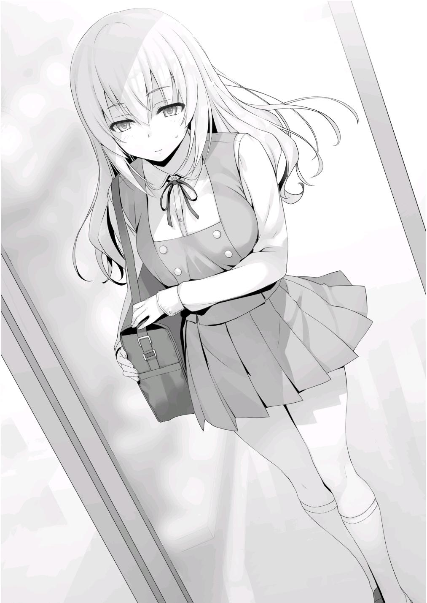
—¿Estás diciendo que te atraparon?
En respuesta a la pregunta de Hashimoto, Ichinose simplemente agitó la cabeza.
—Salí de la tienda con la horquilla. Fue la primera vez que robaba en una tienda, la primera vez que cometía un crimen. Nadie se enteró.
Inmediatamente después, fui a casa y le entregué la horquilla a mi enfadada hermanita. Pero, como lo acababa de robar, no lo habían envuelto todavía, así que era un regalo muy descuidado. Aún así, estaba tan feliz. Cuando vi su rostro sonriente, por un instante, la culpa de lo que acababa de hacer se desvaneció un poco. Pero, eso no duró mucho tiempo. La palpitante culpa en mi corazón siguió creciendo.
La sonrisa de Ichinose estaba llena de auto desprecio.
—Después de todo, ¿no es imposible que una madre no se dé cuenta cuando su hija ha hecho algo pecaminoso? Aunque le había dicho a mi hermana que guardara el regalo en secreto, lo usó la próxima vez que fuimos a visitar a nuestra madre al hospital. ¿Y por qué no lo haría? No había forma de que mi hermana pensara que lo había robado para ella.
Esa vez.... Esa vez fue la primera ocasión en mi vida en la que vi a mi madre verdaderamente enojada. Me abofeteó y le quitó la horquilla a mi hermana. Ni siquiera creo que mi sollozante hermanita entendiera por qué.
A pesar de que tuvo que permanecer hospitalizada, mi madre me arrastró a la fuerza de vuelta a la tienda. Me arrodillé, pidiendo perdón. Esa fue la primera vez que realmente entendí lo que había hecho. Cuán grave fue el crimen que cometí. No importa cuántas excusas pusiera, nada podría compensarlo.
Este fue el pasado de Ichinose. El pasado que había estado escondiendo.
—Al final, la tienda no me entregó a la policía. Pero, en un abrir y cerrar de ojos, la conmoción seguía extendiéndose, así que me aislé. Durante casi la mitad de mi tercer año de secundaria, me encerré en mi habitación y me quedé allí... Finalmente, empecé a pensar en seguir adelante una vez más.
Todo fue porque mi maestro me habló de esta escuela. El costo de la admisión y la matrícula están exentos para ti, y si te gradúas, puedes
encontrar un trabajo en cualquier lugar que desees. Quería empezar de nuevo como una hoja en blanco.
Terminó, Ichinose volvió a inclinar la cabeza ante sus compañeros de clase.
—Lo siento, chicos. Soy una líder patética e inútil...
—Eso no es verdad, Ichinose —Escuchando desde muy cerca, Shibata habló—. Después de escuchar todo lo que has dicho, estoy seguro de ello.
Sigues siendo una buena persona.
—¡Sí! Claro, Honami-chan puede haber hecho algo malo, pero-El fuerte y distintivo sonido de un bastón golpeando el suelo resonó por toda la habitación.
—Tendré que intervenir. ¿Podrían dejar de ser tan ridículos? —El apoyo hacia Ichinose fue dejado de lado casualmente—. En serio, qué trivial y grosera farsa. ¿Intentas ganarte la simpatía sacando a relucir todos estos detalles innecesarios sobre tu pasado? No importa las circunstancias, el robo en las tiendas sigue siendo un robo. No hay lugar para la compasión.
Tu robo vino de una cuestión de interés propio.
Mientras Sakayanagi hablaba, Kamuro, de pie junto a ella, mostró momentáneamente una expresión rígida.
—Sí, estoy de acuerdo con eso. Las circunstancias de mi pasado no tienen nada que ver con esto.
—El hecho es que has cometido un crimen. Así que, cuando se trata de la gran cantidad de puntos privados que se te han confiado, ¿no es posible que los robes también cuando llegue la graduación?
—.... Nunca haría algo así, Sakayanagi-san. Ignorar las intenciones de los compañeros de clase para entrar en la clase A sería un acto de traición. No creo que la escuela lo permita.
—Estoy de acuerdo. Después de todo, eres inteligente. Nunca usarías una táctica tan obvia como esa. Por otro lado, ¿qué tal si vuelves a hacer esta
pequeña comedia para conseguir compasión y obtener el permiso de todos para ir a la clase A?
Sakayanagi era implacable.
—Tienes razón... Tal vez... Tal vez todo mi duro trabajo parezca hipócrita, no importa cuánto lo intente. El pecado que cometí nunca desaparecerá.
Su pasado criminal siempre la seguirá.
Después de todo, la sospecha de que algún día traicionará a la clase siempre estará ahí.
—¿Todos lo entienden ahora? Ésta es la verdadera Ichinose Honami-san.
Mientras tengan a esta clase de persona al mando, la clase B no tiene ninguna posibilidad.
Sakayanagi expuso a fondo la realidad de la situación.
—Aprovecha esta oportunidad para devolver los puntos privados a tus compañeros de clase y renunciar como el líder de la Clase B. Al menos deberías hacer eso. Si no lo haces, la calumnia sobre ti no desaparecerá,
¿verdad?
Ichinose tranquilamente cerró los ojos y respiró hondo.
—¿Qué vas a hacer, Ichinose?
Kanzaki habló como representante del resto de la Clase B y le hizo la pregunta.
La cuestión de si continuaría o no liderando la clase.
Una decisión que Ichinose tendría que tomar ella misma.
Si esta fuera su primera experiencia con su espíritu aplastado, Ichinose podría ser incapaz de soportarlo. Podría decidir rendirse.
Pero, Ichinose ya tuvo su espíritu roto antes.
Más bien, fui yo quien lo rompió.
Pero ahora, se ha recuperado completamente.
Esa parte rota de su espíritu es ahora más fuerte que nunca.
—Terminaré mi confesión con esto... —Mientras hablaba, se giró para mirar a Sakayanagi con una sonrisa—. Sin duda, soy una ladrona de tiendas, y como dijo Sakayanagi, no creo que haya lugar para la simpatía.
Después de todo, un crimen es un crimen, y no tengo intención de huir. Sin embargo, nunca he sido castigada por ello. En otras palabras, no hay razón para que expíe mi pecado ahora.
—Tienes mucho valor para decir eso a pesar de ser tan desvergonzada hace un momento. Esta actitud desafiante tuya es un gran cambio de lo que uno esperaría de una ladrona corrupta que honestamente lamenta sus errores.
—Tal vez, pero me niego a seguir mirando atrás. Ya no dejaré que mi pasado me controle.
Volviendo su sonriente cara hacia sus compañeros, Ichinose continuó.
—A pesar de ser tan desvergonzada... chicos, ¿me seguirían hasta el final?
Preguntó eso, y fue seguido de un momento de silencio.
De ninguna manera su petición venía desde el optimismo.
Estaba avergonzada de su pasado y a punto de llorar. Simplemente quería huir de todo eso.
Pero a pesar de ello, siguió adelante.
Había pasado por muchas dificultades con sus compañeros de clase durante el último año. Era imposible que ellos no entendieran por lo que estaba pasando.
—Ya tienes nuestro apoyo, ¿cierto?
Shibata exclamó con una sonrisa.
Al mismo tiempo, cada uno de sus compañeros de clase vitoreaba, mostrando la unidad de la Clase B.
Esta era la magnitud de la admiración que sentían por ella.
Podía sentir el peso detrás de ello.
Keisei y Akito también parecían estar absortos en esta muestra de unión, ya que ambos tenían expresiones encantadas.
Con la excepción de una clase en particular, los estudiantes de las otras clases también expresaron su apoyo.
—Sakayanagi... ¿Y ahora qué?
El ataque de Sakayanagi había sido rechazado.
Kamuro también pareció entender esto, por lo que había hablado. Su pregunta podría interpretarse como una solicitud de retirada.
—Fufufufu —Sakayanagi se rió—. Fufufufufufufufufufu.
Luego volvió a reír, un poco más esta vez.
—Ya veo. Parece que has conseguido engañar con éxito a tus compañeros. Sin embargo, como dijiste antes, el pasado de un criminal no desaparece así como así. Estoy segura de que los rumores sobre ti continuarán extendiéndose en el futuro.
—Sí, pero no voy a huir.
—¿Es eso cierto? Entonces, hagámoslo-
—Muy bien, todo el mundo, es suficiente.
Cuando Sakayanagi estaba a punto de dar una respuesta, dos maestros y un alumno de clase superior entraron en el aula.
Era el presidente del consejo estudiantil, Nagumo, la maestra de clase B, Hoshinomiya-sensei, y Chabashira-sensei.
—Parece que algunas personas muy importantes se han presentado, pero este es un problema que sólo afecta a los estudiantes de primer año.
—Tienes razón. Esta disputa sólo afecta a los de primer año. Sin embargo, a partir de hoy, es contra las reglas difundir rumores irresponsables.
—...¿Qué significa eso? No estoy satisfecha con este chiste sobre los rumores sobre Ichinose-san. Independientemente de su procedencia, si Ichinose-san tenía problemas con ellos, ¿no debería haberlo denunciado ella misma a la escuela?
—Tienes una idea equivocada, Sakayanagi. Este problema ya no sólo involucra a Ichinose.
Nagumo respondió a la pregunta de Sakayanagi.
—...¿Qué estás diciendo?
Justo cuando Nagumo estaba a punto de explicarlo, Chabashira-sensei intervino en su lugar.
—No voy a entrar en detalles, pero ya hemos confirmado que hay un constante intercambio de calumnias entre los alumnos de primer año. Hay cerca de veinte rumores diferentes circulando en este momento. Si se permite que esto continúe, corromperá la moral pública de nuestra escuela.
Los rumores son rumores. Sin importar si hay o no evidencia concluyente que los respalde, la escuela no quiere que continúen propagándose rumores que señalen a individuos específicos. Por lo tanto, les informaré a todos ustedes ahora mismo. En el futuro, cualquiera que sea hallado difundiendo rumores sin sentido puede ser castigado.
Hasta ahora, la escuela había tolerado la interminable propagación de rumores, pero ahora habían tomado medidas.
—...Ya veo, de modo que es así.
Después de escuchar la explicación de Chabashira-sensei, Sakayanagi pareció entenderlo todo.
—En otras palabras, la escuela finalmente está tomando cartas en el asunto —Horikita se acercó a mí después de observar la situación y me dijo sus pensamientos—. Esto es sólo un pensamiento secundario, ¿pero no es suficiente para salvar a cada clase? Debido a la intervención de la escuela, la facción de Sakayanagi ya no podrá atacar a Ichinose-san. Esto también debería silenciar los rumores que también se publicaron en Internet sobre Hondou-kun, Shinohara-san, Satou-san, y sobre ti.
—Bien.
—Sakayanagi-san fue demasiado lejos. Intentó incriminar a cada clase al mismo tiempo con la misma estrategia, pero le salió el tiro por la culata porque atrajo la atención de la escuela. Parece que con este movimiento beligerante, se las arregló para superarse a sí misma.
Con eso, Horikita se quedó en silencio.
Luego, por un momento, continuó.
—Pero...
—¿Pero qué?
—No, no es nada.
Horikita no quería decir nada más.
—Retirémonos de aquí. Ahora que la escuela ha hecho su movimiento, nuestra presencia ya no es necesaria.
Comprendiendo la situación, Sakayanagi dio la orden de retirarse.
Inmediatamente, el aula, ya de por sí ruidosa, se volvió aún más bulliciosa.
La Clase A fue expulsada con éxito.
PARTE 9
Haruka nos saludó con entusiasmo cuando regresamos a nuestra aula.
—¿Cómo está la clase B? Al parecer sucedieron muchas cosas.
—Tomó una dirección inesperada. Ichinose logró repeler a Sakayanagi.
Akito dio una explicación franca de lo que pasó.
La verdad detrás de los rumores sobre Ichinose y los detalles sobre la prohibición que la escuela impuso sobre la propagación de rumores en el futuro.
—Habrá una advertencia oficial en clase esta tarde.
—Robo en tiendas, ¿eh? Es sorprendente, por decir lo menos, pero supongo que puedo aceptarlo. Si cometes un error que no quieres enfrentar, es natural que no vayas a la escuela por un tiempo como lo hizo ella.
Haruka, ahora plenamente informada sobre los detalles de la situación, pronunció unas palabras para apoyar a Ichinose.
—En cualquier caso, todo el calvario ha terminado. Podemos dejar todos estos rumores a un lado y concentrarnos en el examen.
—¿No es grandioso Kiyopon?
—Bueno.... supongo.
Y entonces, mi teléfono sonó.
—¿Quién llama?
—Un número que no tengo registrado.
Le mostré la pantalla a Haruka y los demás. Era un número diferente al que me llamó a altas horas de la noche hace un tiempo.
Me levanté de mi asiento, me distancié un poco de los demás y contesté la llamada.
—¿Hola?
—¿ Es Ayanokouji-kun?
Reconocí a la dueña de la voz inmediatamente. Era Sakayanagi.
—¿Cómo sabes mi número...? Bueno, no es tan difícil averiguarlo.
—Sí. Como aún faltan diez minutos para que termine el almuerzo, ¿te importaría venir a verme un momento?
Sería fácil de rechazar, pero también sería problemático hacer tiempo para reunirme con ella más tarde.
—¿Adónde quieres que vaya?
Salí al pasillo.
—Bueno, ¿qué tal frente a la entrada del primer piso?
—De acuerdo.
Acabé la llamada y me dirigí a la entrada.
Pensé que Hashimoto y Kamuro vendrían con ella, pero Sakayanagi estaba completamente sola cuando llegué allí.
—No te preocupes, no hay nadie más conmigo ahora mismo. Debo decir que esta vez te has superado a ti mismo, Ayanokouji-kun.
—¿De qué estás hablando?
—Parece como si, sin que me diera cuenta, hiciste tu jugada discretamente.
Todavía quedan algunos misterios sin resolver, pero no me interesa hablar de lo que pasó hace poco. Dicho esto, hay una cosa sobre la que he tenido curiosidad. ¿Por qué decidiste proteger a Ichinose-san?
Con eso, Sakayanagi me miró fijamente, esperando mi respuesta.
—Espera. No entiendo de qué estás hablando.
—Simplemente porque salvaste a Ichinose-san, se ha vuelto desafiante...
no, ha sido capaz de volver a ponerse de pie por sí misma. No puedo imaginarme ninguna otra razón para lo que pasó. Tal vez sea posible que no sea la primera vez que confiesa todo. ¿Quizás ya se lo contó todo a alguien antes?
—¿Y crees que ese alguien soy yo?
—Precisamente.
Para ella era una conclusión completamente natural.
—¿No usaste a Kamuro para obligarme a actuar?
—¿Usar a Kamuro-san?
—Antes de que se revelara el pasado de Ichinose como ladrona de tiendas, me lo contó todo.
—Eso fue algo que hizo por su propia voluntad.
—No, eso no es verdad.
—¿Qué te hace estar tan seguro?
Parecía que, por alguna razón, quería saber cuanta información tenía.
—Me presentó una lata de alcohol como prueba de su robo en la tienda.
Pero, no la robó ese día. Kamuro la había robado cuando se inscribió aquí por primera vez.
—¿Y en qué te basas para eso?
—La fecha de caducidad. Después de ver la fecha de caducidad de la cerveza que Kamuro me mostró, fui a la tienda y la comparé con la cerveza que había allí. La fecha de caducidad de las latas en venta y de la lata que ella me dio difería por más de cuatro meses. Es difícil imaginar que la lata de cerveza que tomó fuera cuatro meses más vieja que el resto. Kamuro dijo que recibiste la lata de cerveza que robó en el pasado, y le dijiste que
te desharías de ella. Si eso es cierto, o me dio una lata que ustedes prepararon para mí con anterioridad, o se puso en contacto contigo después de que salió de mi habitación y recibió la lata directamente de ti.
En aquel entonces, Kamuro se puso en contacto conmigo y habló sobre el pasado de Ichinose.
—¿Por qué haría las cosas de manera tan indirecta?
—Para atraerme, ¿no?
—Fufufufu. Tal vez un “como se esperaba de Ayanokouji-kun” es lo que corresponde aquí.
—En este caso, habría sido fácil para mí sentarme y no hacer nada. Más bien, eso es lo que quería hacer al principio.
La que me lo impidió no fue otra que la propia Sakayanagi.
Con sus propias manos derribó a Ichinose, y luego le ofreció su ayuda inmediatamente después.
Por supuesto, utilizó una forma muy indirecta de hacerlo.
—Todo fue para que te involucraras, Ayanokouji-kun.
Bastón en mano, Sakayanagi caminó lentamente hacia delante, acortando la distancia entre nosotros.
—No me importaba si Ichinose-san se rompía durante el proceso, pero si había una pequeña posibilidad de que decidieras intervenir, esperaba que aprovecharas la oportunidad para hacerlo. Las probabilidades eran sólo del cincuenta por ciento, pero... al final conseguí el resultado que esperaba.
En otras palabras, para Sakayanagi, la existencia de Ichinose no importaba en absoluto.
—Hagamos una competencia, Ayanokouji-kun.
—¿Y si digo que no?
—Aunque afirmes que no causaría mucho daño, te expondría como el cerebro que lidera la Clase C desde las sombras. Deberías ser capaz de entender que si hago algo así, no conseguirás resolverlo con un par de rumores.
Aunque la escuela prohibió oficialmente la difusión de rumores, Sakayanagi seguiría difundiendo esa información sin dudarlo.
—Entonces, ¿qué te parece? ¿No estás dispuesto a aceptar?
—¿En qué competiríamos? Tú estás en la clase A, yo estoy en la clase C.
La diferencia entre nosotros es obvia.
—No sé nada sobre lo que puede implicar el próximo examen, pero ¿qué tal si competimos en las clasificaciones? Si ganas, prometo no divulgar tu pasado a nadie en el futuro.
Aunque esa condición no es tan mala, no hay garantía de que cumpla su palabra.
No tenía ninguna intención de firmar un acuerdo ni de expresar verbalmente mi consentimiento al respecto.
—No me crees, ¿verdad? Pero parece que no tienes otra opción que confiar en lo que digo. Si no lo haces, tu pasado será expuesto a todos. Te resultará difícil vivir una vida normal.
—Haz lo que quieras. Sólo quiero que sepas que si eso sucede, nunca podrás volver a enfrentarte a mí.
—...Fufu. Es cierto, ¿no es así? Eso es exactamente lo que esperaba que dijeras.
La misma Sakayanagi debe saber que no aceptaría fácilmente enfrentarme a ella.
Por eso, hasta ahora, Sakayanagi aún no ha hablado con nadie de mi pasado.
—¿Y qué si apuesto a que abandonaré la escuela? Además, puedes hacer que mi padre, el presidente de la escuela, actúe como garante de nuestra competencia.
Sakayanagi emitía un aire de absoluta confianza.
—Por supuesto, aunque pierdas contra mí, no te pediré que dejes la escuela. Tampoco tengo intención de pedir nada especial. Sin embargo, me gustaría anunciar a la escuela que eres el cerebro detrás de la Clase C.
Si no te arriesgas al menos en esa medida, puedes simplemente retirarte de la competencia.
Me miró con expresión expectante.
—Si realmente estás conforme con esas condiciones, estoy de acuerdo.
—Muchas gracias, Ayanokouji-kun. Con esto, por fin, mi aburrida vida escolar llegará a su fin.
Con una sonrisa de satisfacción, Sakayanagi se despidió.
Decidí hacer una llamada a la figura central detrás de todo este incidente.
Ni Kei, ni Horikita, ni tampoco su hermano mayor.
—Estaba pensando que ya era hora de que te pusieras en contacto conmigo. Buenas noches, Ayanokouji-kun.
CÓMO FUNCIONA TODO
PARTE 1
Todo comenzó el viernes 11 de febrero, el día en que se descubrieron las cartas que afirmaban que Ichinose era una criminal.
Fue después de que Ichinose hubiese visto las cartas, y Kamuro viniera a mi habitación para contarme sobre su pasado como ladrona de tiendas.
Decidí hacer mi movimiento contra la estrategia de Sakayanagi. Para llevarla a cabo, esa noche, llamé a una estudiante en particular y le pedí que viniera y se reuniera conmigo en mi habitación.
Y entonces, llegó el momento indicado. En vez del sonido del timbre de la puerta, se escucharon por toda la habitación ligeros golpes en la puerta.
Como la puerta ya estaba abierta, la abrí de inmediato.
El olor débil a flores me hizo cosquillas en la nariz cuando aire frío entró por el pasillo.
—Buenas noches, Ayanokouji-kun.
Como era cerca de medianoche, la voz de Kushida era un poco más baja de lo habitual.
—Siento haberte llamado en tan mal momento. Si no te importa, por favor, entra.
—¿Estás seguro?
—Hará frío si nos quedamos en la puerta de entrada.
—Sí. Gracias.
Que una chica entre en la habitación de un chico en mitad de la noche.
Además, estar completamente a solas con él. En términos generales, sería totalmente comprensible que rechazara tal oferta.
A pesar de todo eso, Kushida entró sin dudarlo.
—Ayanokouji-kun. Es un poco antes de tiempo, pero esto es para ti.
Del bolsillo interior de su abrigo, sacó una caja de chocolates que estaba atada con un listón rosa.
—¿Estás segura?
—Tendré que dar un montón el 14, así que los he estado dando antes de tiempo cuando he tenido la oportunidad.
Como ese era el caso, lo acepté con gratitud. No había ninguna razón para negarse.
—¿De qué quieres hablar? Es inusual que me pidas que venga tan tarde en la noche.
Si fuera algo casual, hubiera estado bien hablar por la mañana o durante el día.
Era natural que sospechara.
—Hay algo que me gustaría discutir contigo.
—¿De verdad...?
Un poco sorprendida, Kushida continuó.
—Pensé que me odiabas y que no querías discutir las cosas conmigo nunca más.
—No es que te odie. Sólo pensé que preferirías evitar interactuar conmigo.
—¡Jajajajajaja! ¡Ya veo! Bueno, eso es verdad.
Respondió, riendo no como la Kushida que mostraba a la gente, ni como la Kushida que mantenía escondida en su interior, sino desde algún lugar intermedio.
—¿Pero no tienes a Horikita-san? ¿No es mucho más confiable que alguien como yo?
—No puedo confiar en nadie más, eres la única a la que puedo pedirle esto.
—Aunque no sé si podré ayudar, definitivamente puedo escucharte.
Aunque, ¿qué quieres decir con que "soy la única a la que puedes pedírselo"?
Inclinó la cabeza, pareciendo no tener la menor idea de por qué quería hablar con ella.
—Quiero información personal sobre varios estudiantes de primer año.
Información de la que se avergonzarían si se hiciera pública. En otras palabras, quiero que me cuentes sus secretos.
—...¿Qué quieres decir?
La expresión sonriente de su rostro no se desvaneció, pero la sonrisa de sus ojos desapareció.
—Ya lo has dicho antes. Que tienes suficiente información para causar el colapso de la clase. Esto no sólo incluye la clase C, sino también a los estudiantes de las otras clases.
Kushida, que constantemente juega el papel de una persona popular con una buena personalidad, a menudo hace que otros la consulten para hablar de sus problemas.
Debe tener una cantidad notable de información sobre los estudiantes de las otras clases, aunque todavía sea insignificante en comparación con lo que tiene sobre los estudiantes de la clase C.
—¿Y por qué Ayanokouji-kun quiere saber algo así?
—¿Sabes que Ichinose está sufriendo por los rumores ahora mismo?
—Sí. Por ejemplo, hoy estaban esas terribles cartas...
—Es todo para detener esos rumores.
—Hmm, bueno, realmente no lo entiendo. ¿Es esa tu intención, Ayanokouji-kun? ¿O es...?
—Esto no tiene nada que ver con Horikita.
—¿Hmmmm? Eres muy compasivo. Ayudaste a Sudou-kun en ese entonces.
Por supuesto, Kushida sabía de las acciones que había tomado para prevenir la expulsión de Sudou poco después de que nos inscribimos aquí.
—Sin embargo, ¿estás diciendo que conocer la información personal de otra persona está relacionado con detener los rumores?
—Sí.
—Todavía no lo entiendo. Si esparces rumores que hieren a mucha gente,
¿no se volverá la situación mucho más volátil de lo que es ahora mismo?
¿O está bien mientras los rumores no se centren en Ichinose-san?
Salvar a una persona a costa de muchos. Ella podría haber pensado en ello como ese tipo de estrategia.
Aunque esa forma de pensar era correcta, se equivocaba.
Continuó hablando.
—Yo también me llevo bien con Ichinose-san. Si hay algo que pueda hacer por ella, me gustaría hacerlo. Claro, quizá he escuchado un par de secretos más que una persona normal. Pero también es por eso que no soy capaz de decirlos tan fácilmente. Después de todo, son secretos que me han sido confiados bajo la premisa de que no los compartiré con otros.
Por supuesto, su respuesta fue completamente natural.
Difícilmente alguien se alegraría de saber que han compartido sus secretos personales con el resto del mundo.
Siendo así, uno podría pensar que es mejor no compartir nada personal con nadie, pero los seres humanos no son tan simples.
Eligen compartir sus secretos con familiares, amigos cercanos y parejas.
Después de todo, todo el mundo quiere compartir sus sentimientos con alguien.
—No puedo traicionar a mis amigos. Además, aunque te ayude por el bien de Ichinose-san, ¿no descubrirían que fui yo quien filtró los rumores?
—Por supuesto. Para evitarlo, es necesario que seamos selectivos con los rumores que usemos.
Grandes secretos, como los que solo habían compartido con Kushida, no se podían usar.
Por otro lado, si los rumores son tan simples que todos sus amigos saben de ellos, entonces no tendrían ningún peso. El punto importante era que algunos, pero no muchos, ya conocen los secretos. Tendríamos que equilibrarlo perfectamente.
—¿Crees que traicionaría a mis amigos y ayudaría con una estrategia que ni siquiera entiendo?
—No será fácil.
Si no supiera nada sobre el lado oscuro de Kushida, no habría lugar para las negociaciones.
Después de todo, era muy poco probable que Kushida, que siempre juega el papel de un ángel, quiera ayudar con un plan para engañar a los demás.
Sin embargo, como sabía del lado oscuro de Kushida, había algo de libertad de acción.
—Si puedes darme la información que quiero, estaré dispuesto a hacer algo por ti como compensación.
—¿Compensación?
—Tengo la intención de responder a tus deseos lo mejor que pueda.
—¿Estás diciendo que me conseguirás lo que quiero?
—Dicho sin rodeos, eso es exactamente lo que estoy diciendo.
—No hay garantía de que cumplirás tu palabra. Después de todo, estás aliado con Horikita-san.
—Entonces deberías considerar esta conversación que estamos teniendo ahora como un seguro.
—¿Qué quieres decir?
—No necesito explicártelo, sabes exactamente de lo que estoy hablando,
¿no?
Dirigí brevemente mi mirada hacia el bolsillo del conjunto de Kushida.
—¿Hmmmmmm?
Siguió fingiendo que no entendía, así que fui un paso más allá.
—Aunque no diga nada, deberías entenderlo. Un teléfono... Grabadora de voz... ¿Quizás incluso ambas?
No había manera de que no intentara aprovecharse de esta conversación.
—¿Así que ya lo sabías? ¿que estoy grabando?
—Después de considerar con quién estoy tratando, pensé que al menos harías eso.
—Pero estabas seguro de ello, ¿no?
Intentó cambiar de tema, pensando que trataba de provocarla con una pregunta capciosa.
—Si tuvieras que recortar las partes que te resultan incómodas, disminuiría la autenticidad de la grabación. Lo ideal sería mantener los datos intactos tanto como sea posible. Y para que eso funcione, es necesario que controles tu comportamiento.
Kushida había elegido cuidadosamente sus palabras para ser lo más educada posible desde que llegó a mi habitación.
De esa manera no habría ninguna deficiencia en su comportamiento, incluso en el caso de que algo saliera mal más adelante.
—Para que lo determines con sólo eso... No está mal.
Kushida sacó su teléfono, dejándome ver la pantalla mientras detenía la grabación.
—Bueno, la grabación ha terminado. Ahhhh, qué incómodo.
Con eso, Kushida eliminó por completo la atmósfera amable que llenaba la habitación.
—Ya era vagamente consciente de esto, pero tú ayudaste a Horikita-san en ese entonces, ¿no?
—Admito que le di algunas ideas a Horikita.
—Bueno, dejemos eso a un lado por ahora. Cuando terminemos con esto, podré escucharlo.
Dijo, volviendo al tema que nos ocupa.
—Entonces, ¿cómo piensas usar la información personal de otra persona para detener los rumores sobre Ichinose-san?
Para ir al grano, Kushida cambio de marcha y adoptó una postura para escuchar.
—Eso es, involucrar a la siempre vigilante escuela.
—¿Involucrar a la escuela...?
—En este momento, Ichinose ha guardado silencio sobre los rumores, negándose a tomar medidas contra ellos. Así que, naturalmente, la escuela no ha hecho nada en respuesta.
—¿Está bien hacer esa suposición? Es posible que la escuela haga algo para detener los rumores, ¿no?
—Más o menos. Incluso si su maestra sabe de su situación, el hecho de que la escuela todavía no haya tomado medidas es porque Ichinose misma no lo ha pedido. Por lo tanto, deberíamos intensificar la cuestión hasta el punto de que ya no puedan sentarse tranquilamente a mirar. Si lo hacemos, la escuela definitivamente comenzará a tomar la situación más en serio.
Incluso si la escuela está aislada del resto del mundo, la era de poder encubrirlo todo ha llegado a su fin.
Si hubiera constantes informes de calumnias entre el cuerpo estudiantil de la escuela, causando deserción escolar, o incluso rumores de suicidio, la escuela verá cómo su estatus social y honor desaparecen casi inmediatamente.
Las escuelas nunca ignorarán un problema que puede convertirse en un caso de intimidación.
Naturalmente, los ataques de Sakayanagi apenas se ajustaban a lo que era aceptable.
En ese caso, tendría que hacerlo detrás de escena y presionar sobre esa misma línea.
Y como resultado, toda la situación con los rumores comenzaría a amainar. Ese era el plan.
—No todo el mundo podrá guardar silencio como Ichinose-san, así que,
¿estás diciendo que harás que otros estudiantes vayan llorando a la escuela?
—Exactamente. Además, aunque nadie más se acerque a la escuela, los exámenes de fin de año están a la vuelta de la esquina. Los rumores ayudarán a crear una atmósfera extremadamente tensa e irritada.
Pequeñas peleas o altercados también pueden ocurrir.
—Y como resultado, la escuela no podrá sentarse y mirar... ¿a dónde quieres llegar?
Selecciona a unas cuantas personas de cada clase y difunde una intrincada mezcla de verdades y mentiras sobre ellas.
Es posible que más de la mitad de los estudiantes a los que van dirigidos los rumores hablen y los nieguen.
Incluso es posible que nadie admita los rumores.
Pero, eso sólo serviría para mostrar que puede haber algo de verdad escondida en los rumores.
—También tendríamos otra ventaja. Dada la situación actual, la clase A sería la primera sospechosa si aparecen nuevos rumores.
Debido a que el grupo de Sakayanagi ha difundido rumores para acorralar a Ichinose, inmediatamente se darían cuenta de la influencia de un grupo externo.
Sin embargo, aunque lo noten, no había nada que puedan hacer al respecto.
Aunque dedicaran toda su energía a negar estos nuevos rumores, no podrían negar que han propagado rumores en el pasado. Debido a eso, no podrán evitar cargar con la mayor parte de las sospechas.
Con esto en mente, Kushida parecía haber entendido a dónde iba con todo esto.
—Pero, ¿cómo piensas difundir tantos rumores? No es fácil.
—¿Cómo voy a difundir los rumores? con los foros de la escuela.
—Por foros, ¿te refieres a los de la aplicación de la escuela? Sabes que nadie los usa, ¿verdad? Además, si la escuela se ve obligada a actuar,
¿no castigarán a los responsables de difundir los rumores? Aunque puedas publicar en los foros de forma anónima, ¿no podrá la escuela saber inmediatamente quién ha publicado los rumores?
Kushida me hizo una pregunta tras otra.
—Todos esos riesgos han sido tomados en consideración.
—En otras palabras.... En el peor de los casos, ¿estás dispuesto a asumir la culpa por difundir los rumores?
—Sí. Y si eso ocurriera, no diría nada sobre tu participación.
Por supuesto, ya había pensado en contramedidas por si acaso salía a la luz que yo estaba involucrado, pero no estaba seguro de si llegaría o no a ese punto todavía.
En primer lugar, nunca tuve la intención de publicar nada en los foros que pudiera ser rastreado hasta mí.
—Todavía hay riesgos en esto para mí.
—Es verdad. Si se rastrea hasta mí, el hecho de saber tanto sobre los asuntos íntimos de otros estudiantes parecería extraño. Es posible que algunos estudiantes piensen que obtuve mi información de otra persona.
Lo único que debía tener en cuenta en este momento era evitar comportarme demasiado perfecto frente a Kushida.
Era importante que ella pensara que estaba pasando por alto algunas cosas de vez en cuando.
—Para que las cosas sean más aceptables para ti, tendremos que seleccionar cuidadosamente los rumores que usemos.
—...Sí. El objetivo de Ayanokouji-kun está claro para mí en este momento.
Lo consideraré. Mi ayuda dependerá de que nuestra conversación avance.
Sus palabras fueron otra forma de decir que aún no se había convencido.
—Depende de si acepto o no tus condiciones... ¿Es eso lo que estás diciendo?
—Exactamente.
Sería difícil llevar a cabo esta operación sin Kushida.
Aunque sería posible inventar un montón de mentiras, eso no sería suficiente para causar incomodidad en el corazón de todos.
Al entretejer un sinnúmero de verdades entremezcladas, sería suficiente para que la gente se preocupara por su ambiente.
Y esa ansiedad sería la fuente del fuego que se extenderá poco después.
—Entonces, ¿cuáles son tus condiciones?
Por supuesto, si las condiciones que propone son inaceptables, entonces las negociaciones se romperán.
—La retirada de Horikita Suzune de la escuela.
—Inaceptable.
—Lo es, ¿verdad?
El mayor deseo de Kushida.
Sabía que eso no pasaría, pero lo mencionó por si acaso.
—Hacer que abandones la escuela sería lo mismo, ¿verdad?
—Eso sería aún más inaceptable que la expulsión de Horikita.
—Jajaja.
Kushida se rió, encontrando mi respuesta un poco divertida.
—Pero no hay nada más que quiera.
—En ese caso, ¿qué tal si hago una sugerencia?
Yo mismo decidí ofrecerle algunas condiciones.
—Muy bien. ¿Qué es?
—Te daré la mitad de todos los puntos privados que consiga en el futuro.
—¿Qué? ¿No es el mismo trato que hizo Ryuuen...?
Como era de esperar, Kushida conocía los detalles del acuerdo que Ryuuen hizo con la Clase A.
—Sí, puedes pensar en ello como el mismo trato. Por supuesto, si es necesario, puedo mostrarte el registro de depósitos y retiros en mi cuenta todos los meses para que puedas estar segura de que no te estoy estafando. Con esto, para cuando te gradúes, recibirás cientos de miles hasta unos cuantos millones de puntos privados. Es un precio excepcional por la información que darías.
Hubo un breve silencio cuando Kushida consideró la oferta.
—Desde luego no es una mala oferta. Pero, desafortunadamente, en este momento no necesito más puntos privados. No puede hacer daño tener más dinero, pero ya tengo de sobra.
Kushida había obtenido una gran cantidad de puntos durante el examen especial en el crucero.
Se puede inferir que, incluso si ha utilizado esos puntos de forma ostentosa hasta cierto punto, le quedaría más que suficiente.
Sin embargo, al final del día, la manera más fácil y eficiente de negociar es con dinero.
—Incluso si hay suficiente para usar con tranquilidad, no hay nada de malo en conservar más puntos en caso de una emergencia. Creo que Chabashira-sensei también lo dijo. Que los puntos privados son indispensables cuando se trata de protegerse a uno mismo.
Si piensas en ellos como tu seguro, sería mejor que te aferres a todos y cada uno de los puntos que puedas.
—Esta propuesta tuya.... No importa cómo la vea, te estás poniendo en desventaja, Ayanokouji-kun. Si se tratara de una emergencia en la que corrieras el riesgo de dejar la escuela, ¿supongo que podría entenderlo?
Pero es extraño que estés dispuesto a sacrificar la mitad de tu alma para salvar a Ichinose-san.
—Me gusta Ichinose.
—Bromas como esa no son necesarias.
Había pensado que se reiría, pero Kushida no mostró ningún signo de ello.
—Entonces te diré la verdad. Me dolerá mucho perder la mitad de mis puntos privados. Pero, así es exactamente como seré capaz de protegerme.
—¿Adónde quieres llegar?
—Soy una de las personas que quieres que dejen la escuela. No sé cuándo me apuñalarán por la espalda. En otras palabras, es mi plan de defensa.
—Tu punto es que si empiezas a darme tus puntos privados, tu existencia será beneficiosa para mí, ¿es eso a lo que quieres llegar?
—Sí. Ser tu enemigo es problemático. Creo que vale la pena darte la mitad.
Se trataba de un acuerdo que se cerraría con la aportación de puntos privados.
Mientras ninguno de los dos traicione al otro, ella recibirá un suministro continuo de puntos privados.
Estas condiciones no eran malas para ella.
—... Entiendo —Después de considerarlo un poco, Kushida llegó a una conclusión—. De acuerdo, estoy a bordo. La condición estricta es que no me oponga a Ayanokouji-kun, ¿eso es todo? ¿No quieres añadir algún tipo de garantía para Horikita-san también?
—No soy tan avaro. Sería problemático si pidiera también protección para Horikita y se rompieran las negociaciones.
—Esas son condiciones inmensamente atractivas, ¿no?
—Si te preocupa llegar a un acuerdo verbal, ¿preferirías que te diera algo por escrito?
—No, eso no será necesario.
Kushida metió la mano en su bolsillo... y sacó una grabadora de voz.
Dos grabaciones. Había estado grabando no sólo con su teléfono, sino también con una grabadora adicional.
—Tengo todas las pruebas que necesito aquí mismo. Si me traicionas...
sabes lo que pasará, ¿sí?
—Sí.
Si rompiera nuestro acuerdo, en el peor de los casos, podría llamar la atención de la escuela sobre esta conversación.
Entonces sería posible que me extorsionara sin hacer público el asunto.
—Como era de esperar, Ayanokouji-kun es completamente diferente de Horikita-san.
Dar y recibir.
Era poco práctico que la otra persona creyera en ti con una relación construida sólo sobre las emociones.
A diferencia de las emociones, invisibles a simple vista, los números pueden ser vistos y verificados.
La forma en que Horikita hacía las cosas no era en absoluto inferior.
Hay momentos en que las relaciones apoyadas por las emociones superan a las relaciones construidas sobre números y convenios.
En este caso, sin embargo, el obstáculo era extremadamente alto.
El mismo método de intentar persuadir a Kushida para que soportase sus sentimientos mezquinos era un error en sí mismo.
—¿Pero está bien que me des la mitad?
—Si la cantidad es demasiado baja, no dejará una impresión en ti.
Por supuesto, entregar continuamente tantos puntos privados se convertiría en una pesada carga para mí.
Sin embargo, ese problema se resolverá muy pronto.
—Hemos terminado nuestras negociaciones, ¿así que está bien si me dices lo que quiero saber ahora?
—Claro. ¿Qué tipo de cosas estás buscando?
—Crímenes o incluso información embarazosa sobre el pasado de alguien, cualquiera de las dos cosas estaría bien. En general, algo que podría causar problemas si se hace público.
—Claro. Te lo diré como es debido.
Divertida por la situación, Kushida comenzó a compartir los secretos que había acumulado durante el último año.
Comenzó con cosas como quién le gustaba y a quién odiaban ciertas personas, y luego se adentró en las circunstancias familiares de los estudiantes y en actos de delincuencia del pasado.
Hablaba con energía.
Incluso en esta etapa, desconocía mis verdaderas intenciones.
Salvar a Ichinose.
Responder a la provocación de Sakayanagi.
Desviar la atención de Hashimoto lejos de mí.
La amenaza inminente de Nagumo.
Todas estas cosas no eran más que una pieza del rompecabezas.
Sólo había una cosa que realmente quería averiguar de nuestra conversación....
La cantidad y calidad de la información en poder de Kushida Kikyou. Todo en aras de expulsarla de la escuela.
Aunque su eliminación puede parecer simple, sería problemático si lo hago de la manera equivocada.
Era esencial para mí medir lo poderosa que es la bomba que tenía.
Para medir la abrumadora red de información de Kushida.
Para calibrar el escrutinio de esa información.
De quién había escuchado los rumores, de qué tipo y cuánta gente sabía de ellos.
Tenía una comprensión aterradora del carácter y las personalidades de los estudiantes que la rodeaban. Podría ser que, al menos entre los alumnos de primer año, no hubiera nadie en la escuela que pudiera acercarse al dominio de la información de Kushida.
Esta era la habilidad sobresaliente que Kushida había cultivado, todo para protegerse a si misma y a su imagen como una existencia noble.
—Ya veo...
—¿Fue útil?
Por supuesto, la información que acababa de compartir conmigo era sólo la punta del iceberg.
—Para la clase C, quiero difundir la información sobre Satou y Hondou.
—Está bien, supongo. La aversión de Satou-san hacia Onodera ya es relativamente conocida.
Ella dedujo que era sólo cuestión de tiempo hasta que llegara a los oídos de Onodera.
—También tengo una mala personalidad, pero sería bueno que recordaras que así son las chicas.
Con eso, Kushida sacó su teléfono y abrió su aplicación de mensajería. Su enorme número de amigos ni siquiera podía compararse con el mío, y el número de charlas grupales en las que participaba era enorme.
—Por ejemplo, hay una charla en grupo, la llamaremos grupo A, que fue hecha por algunas de las chicas de nuestra clase. Hay seis personas en él,
¿bien? Pero, de hecho, hay una segunda charla en grupo, hecha por las mismas chicas. Llamémosle grupo B. Sólo para que lo sepas, hay una
persona que no estaba incluida en el segundo grupo, una chica llamada Nene.
Mori Nene, una de las amigas del grupo de Kei.
—¿Estás diciendo que Mori no es muy apreciada?
—Exactamente. Si el grupo A contiene los sentimientos que muestran en la superficie, el grupo B contiene los verdaderos sentimientos que esconden debajo. A veces, se juntan para hablar mal de Nené. Yo, por supuesto, nunca participo en algo tan descuidado. Puede haber una relación sonriente y cercana en la superficie, pero en el fondo, todo el mundo tiene a alguien a quien odian. Es totalmente normal que las chicas se junten para hablar mal de alguien. De todos modos, cuando se trata de grupos con dos caras como este, no hay uno o dos de ellos. Por lo que sé, hay docenas.
Aparentemente satisfecha con decir algo que normalmente no podría decir, Kushida se levantó.
—Es tarde, me voy a casa. Estoy esperando el resultado de nuestro acuerdo, Ayanokouji-kun.
Kushida me dio la espalda y empezó a ponerse los zapatos junto a la puerta de entrada.
—Kushida.
—¿Hm?
—Has sido de gran ayuda hoy.
—Oh no, no fue nada. Bueno, buenas noches Ayanokouji-kun. Por favor, trátame bien de ahora en adelante.
Esta conversación fue mi oportunidad de escuchar sobre la cercanía de Kushida con Nagumo.
Sin embargo, no pregunté sobre ese asunto a propósito.
El hecho de que Nagumo y Kushida se pusieran en contacto era algo que supe por casualidad. No había razón para no hacer uso de ello.
Así que, con la información de Kushida como fuente, empecé a preparar los rumores que esparciría para cada clase.
PARTE 2
14 de febrero, día de San Valentín. Este fue el día en que, durante mi hora de almuerzo, decidí que me ocuparía de las persistentes sesiones de acecho al terminar la escuela de Hashimoto. Predije que Kei me daría el chocolate de San Valentín, así que decidí aprovecharlo.
Si Kei me diera chocolate, tendría que ser por la mañana temprano o por la tarde, no durante el día mientras estábamos en la escuela. Como acababa de romper con Hirata, no había razón para que llevara chocolates en su mochila. Para ella, el mero hecho de entregar chocolates a alguien sería suficiente para causar un alboroto. Así que, intencionalmente apagué mi teléfono la noche anterior.
La posibilidad de que se pusiera en contacto conmigo por descuido era nula.
Aún así, opté por apagar el teléfono para evitar tener que inventar una excusa para decir que la mañana era un momento inconveniente. Todo tenía que ser completamente natural cuando nos encontráramos.
Para Hashimoto, la falta de resultados al seguirme debería empezar a carcomer su paciencia en este momento.
Así que decidí darle una pista de que algo iba a pasar.
Y esa fue la reunión secreta con Kei y el posterior intercambio de chocolate. La razón por la que la reunión se programó a las cinco era porque las sesiones de seguimiento de Hashimoto siempre duraban hasta justo antes de las seis. Y, por supuesto, Hashimoto estaba observándome, vigilándome con las cámaras de vigilancia del vestíbulo mientras salía del edificio.
Desde que empezó a seguirme, esta fue su primera oportunidad de establecer contacto sin dar una explicación, así que se enfrentó a nosotros dos en persona.
Bueno, el resultado habría sido el mismo incluso si simplemente se hubiera sentado y mirado.
Hashimoto parecía satisfecho con la conclusión de que Kei podría haber sido la persona con la que había estado en contacto regularmente.
Y al día siguiente, las sesiones de acecho de Hashimoto cesaron. Había cambiado su atención hacia los preparativos para el examen de fin de año.
Finalmente pude moverme libremente.
Fui a la escuela con el chocolate de San Valentín que había recibido de Kei todavía en mi mochila.
Me encontré con Hiyori Shiina en la biblioteca. Por supuesto, la mayor parte de nuestra conversación consistió en charlas sobre varios libros.
Sin embargo, mi verdadero objetivo era otra cosa.
Nuestra conversación fue sólo un prefacio para los innumerables rumores que se propagarían al día siguiente.
Dejando a un lado los rumores sobre Ichinose, la Clase A puede estar tratando de hacer otra jugada completamente diferente.
Esta era la semilla que había plantado, y unos días después, esa semilla comenzó a dar fruto. Al seleccionar a propósito a los beligerantes Ishizaki e Ibuki como blancos de los rumores, lo ideal es crear una situación volátil. Sin embargo, eso fue una bonificación. Aunque hubiera evolucionado de manera diferente, al final todo resultaría de la misma manera.
La parte verdaderamente importante vino después. Es decir, cuándo y cómo se publicarían los mensajes en los foros.
Me puse en contacto con la persona que había seleccionado para resolver estos problemas, el vicepresidente Kiriyama.
Un estudiante de segundo año de la clase B que aspira a la caída de Nagumo.
Después de charlar con Hiyori en la biblioteca, me encontré con Kiriyama en el edificio de la escuela después de que la mayoría de los estudiantes se habían ido a casa.
Revelé todo mi plan, mi estrategia para salvar a Ichinose.
—Ya veo. ¿Me estás diciendo que publique los rumores con mi teléfono?
No habría ningún beneficio en eso para mí.
—Eso no es verdad. Hay beneficios en esto para ti. Actuar como mi intermediario en esto creará una nueva relación para nosotros dos. Si sigo esperando a que actúes, nuestra relación nunca avanzará.
De hecho, Kiriyama nunca me había pedido nada.
—Por supuesto que no, dudo mucho de tus habilidades.
—Sí. Por eso, no sólo debes devolver el favor, sino también hacer que la contraparte te deba uno. De esta manera, en caso de que ocurra una emergencia más tarde, será más fácil para ti confiar en mí. Además, publicar en los foros no es tan malo para ti.
—..¿Qué quieres decir?
—Ichinose Honami es un recurso valioso para el consejo estudiantil. Sería desafortunado que la perdieras. Si publicas los rumores en los foros, podrás garantizar su seguridad involucrando a la escuela.
—Pero si me involucro en un problema de primer año y publico los rumores, pondría en duda la credibilidad del consejo estudiantil.
—¿Y qué hay de malo con eso?
—¿Qué...?
—Si la credibilidad del consejo estudiantil cae, el presidente Nagumo sufrirá más daños que cualquier otro. Si quieres ver su perdición, ¿no deberías darle la bienvenida a mi propuesta?
—Qué estúpido. Sería un gran problema si se descubriera que fui yo quien publicó los rumores. No sólo sería penalizado por la escuela, sino que Nagumo podría relevarme de mi cargo de vicepresidente.
—¿No puedes resolver un problema tan pequeño con un poco de tacto?
Estás compitiendo contra el presidente Nagumo, ¿verdad? O, ¿estás diciendo que ya no eres capaz de oponerte al presidente del consejo estudiantil?
—¿Qué sabría un mero estudiante de primer año como tú...?
Kiriyama me miró fijamente, sus ojos llenos de ira.
—Según el ex presidente del consejo estudiantil, Kushida ya ha establecido contacto con el presidente Nagumo.
—¿Por qué tú....? Horikita-senpai ha puesto mucha confianza en alguien como tú, ¿no?
—Es una de las estudiantes mejor informadas de su año escolar. En otras palabras, los rumores difundidos en los foros podrían explicarse como una estrategia diseñada para que Kushida filtre información al presidente Nagumo. Una excusa como esta también sería fácilmente aceptada por otros.
La excusa de que Kushida había proporcionado la información a Nagumo, quien luego ordenó a Kiriyama que la usara para salvar a Ichinose.
Esta nueva e inesperada solución comenzó a tomar forma poco a poco.
—...¿Me estás diciendo que me contactaste después de pensar tan a fondo?
Kiriyama se perdió en sus pensamientos, imaginando lo que pasaría si realmente hiciera las entradas en los foros.
Pero, esto aún no sería suficiente para obtener su consentimiento.
—Si me rechazas, me veré obligado a concluir que te has rendido ante Nagumo. O tal vez.... ¿le informaré al ex presidente del consejo estudiantil que eres otra persona a la que ya le han ganado?
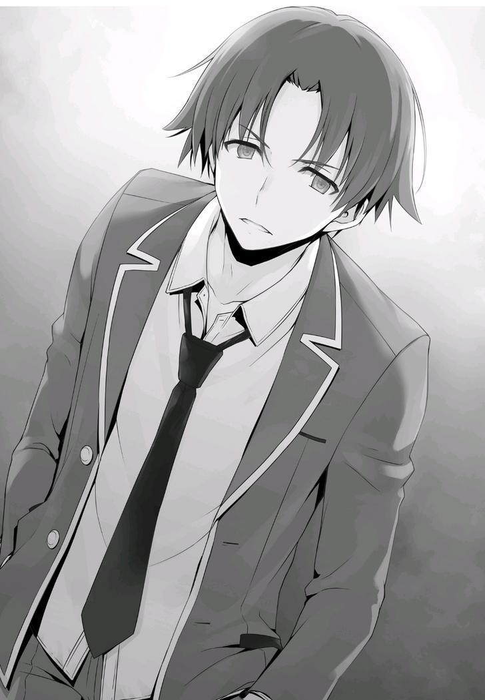
Esto podría ser una amenaza, pero fue el factor decisivo a la hora de conseguir que Kiriyama colaborara.
—Entonces, ¿lo harás?
—...¿Cuándo debo publicar los mensajes?
—Aquí y ahora.
Si se aplaza hasta más tarde, podría terminar enviando los mensajes con el teléfono de alguien más.
Por supuesto, eso no cambiaría nada, pero quería evitar al máximo las incertidumbres en mis planes futuros.
Sobre todo, era necesario tener en cuenta la posibilidad de que Kiriyama también filtrara este asunto a otra persona.
—Muy bien. Me debes una grande.
—Muchas gracias.
Le mostré a Kiriyama todos los rumores que había escrito en mi teléfono y le pedí que los escribiera a mano.
Después de unos diez minutos de trabajo, la operación estaba completa.
Probablemente no habría ningún estudiante que se diera cuenta de inmediato, pero ese problema se trataría mañana.
PARTE 3
Así pues, se han sentado todas las bases.
Sólo quedaba una cosa por hacer: aplastar el espíritu de Ichinose Honami.
Después de todo, estaba claro que Sakayanagi se movería para aplastarla ella misma en poco tiempo.
La estrategia de Sakayanagi funcionaba a la perfección, ya que las ausencias de Ichinose continuaron incluso después de que se creyera que ya había superado su enfermedad.
Era el 18 de febrero, el día del conflicto entre la clase D y la clase A.
Ya habían pasado cinco días desde que su salud empeoró, pero Ichinose seguía ausente de la escuela.
Ya debería haberse recuperado de su enfermedad, pero ¿había logrado superar el trauma de su espíritu?
Después de saber que estaba ausente una vez más, decidí ponerme en contacto con ella.
Sin embargo, si intentaba verla después de la escuela o durante un descanso, había muchas posibilidades de que alguien se diera cuenta.
Así que decidí ir a mitad del día en un día entre semana, cuando el dormitorio estaba casi vacío.
No me puse en contacto con ella por teléfono con antelación.
No tenía intención de darle una salida.
Al llegar a la habitación de Ichinose, toqué el timbre.
—Tengo algo que quiero decir. ¿Puedes salir?
Después de un tiempo, una respuesta vino de adentro.
—Lo siento Ayanokouji-kun. Te tomaste la molestia de venir a verme, pero
¿podrías volver más tarde?
Su voz carecía de ambición, pero, como había pensado, no sonaba como si todavía estuviera resfriada.
—¿Eran esas cartas tan importantes para ti?
Ichinose no respondió a esa pregunta.
Me senté de espaldas a la puerta.
—¿Vendrás a la escuela el lunes?
—...Lo siento. No lo sé.
Con la excepción de las preguntas que golpean la esencia del asunto, parece estar tímidamente dispuesta a responder.
—Tengo algo de tiempo hasta que termine el descanso del almuerzo. Me quedaré aquí por un tiempo.
Luego, continué sentado en silencio hasta el último momento posible.
—Bueno, volveré a la escuela.
—Sólo necesito un poco más de tiempo. Cuando esté un poco más concentrada, definitivamente volveré a la escuela. Así que por favor, deja de venir...
Después de escuchar la tensa respuesta de Ichinose, volví a la escuela.
PARTE 4
Pasó el fin de semana y ya era lunes 21. El examen de fin de año estaba programado para el viernes de esta semana.
Pero, Ichinose todavía no se presentó en la escuela.
Mientras tanto, Kanzaki, Shibata y sus otros amigos cercanos intentaban ponerse en contacto con ella a través de mensajes de texto, llamadas telefónicas y correo electrónico.
Llevaban tiempo haciendo esto.
Aun así, basándose en el hecho de que nadie había venido a verla después de la escuela, seguramente les había dado a todos una advertencia para que se mantuvieran alejados de la misma manera en que me la había hecho a mí.
Me escabullí del edificio de la escuela durante el almuerzo y fui a los dormitorios, donde hice otra visita a la habitación de Ichinose.
Golpeé suavemente y la llamé sin esperar una respuesta.
—Escuché que hoy también te vas a tomar el día libre.
Ella me pidió que no volviera más y, sin embargo, vine de todos modos. Fue un acto temerario que ignoró su advertencia.
Esta vez, no hubo respuesta de Ichinose.
No dije nada más. Me senté de espaldas a su puerta hasta el final de la hora del almuerzo, tal como lo había hecho la semana anterior.
PARTE 5
Lo mismo sucedió el martes. No es necesario detallarlo.
Después de confirmar que Ichinose estaba ausente otra vez, fui a su habitación.
No era capaz de odiar a uno de sus compañeros, pero yo era un estudiante de otra clase. Aunque ella rompiera toda relación conmigo, yo no tenía nada que perder. Esta era la razón principal por la que era tan agresivo.
No quedaba mucho tiempo antes del examen de fin de año.
En esta situación, era posible que estas ausencias continuaran incluso el día del examen.
No, aunque apareciera el día del examen, sus compañeros ya sufrían mucho estrés. Era muy posible que sus calificaciones se vieran afectadas.
En ese caso, aunque nadie terminara expulsado, tendría un gran impacto en sus puntos de clase.
Era necesario que Ichinose fuera a la escuela el jueves para dar un poco de tranquilidad al resto de la clase B.
Pensándolo de esta manera, el límite de tiempo era mañana.
PARTE 6
Al final, el límite de tiempo se fue acercando. En un abrir y cerrar de ojos, ya era miércoles.
Tomé en mis manos una lata de café que compré en la tienda. Hacía tanto frío que podía ver mi aliento en el aire.
Y hoy, una vez más, no presionaría más el asunto.
Fue porque la propia Ichinose ya sabía que este era el último día que podría permanecer encerrada en su habitación.
Definitivamente tomaría acción.
Estaba seguro de ello.
—Febrero terminará pronto. Después de pasar el examen especial del próximo mes, nos convertiremos oficialmente en estudiantes de segundo año. Hay un proverbio que dice “cuando el calor pasa, te olvidas de la sombra de los árboles”, pero ¿es eso cierto?
La Prueba Especial de la Isla Desierta. La prueba especial del crucero. Paper Shuffle. La escuela nos ha hecho pasar repetidamente por exámenes peculiares.
—Cuando lleguemos al segundo año, me pregunto si los exámenes especiales serán aún más extraños de lo que son ahora...
—...Hey.... ¿Puedo preguntarte algo...?
Por primera vez en mucho tiempo, Ichinose habló, aunque con voz baja, como si estuviese hablando consigo misma.
—Claro. Mientras no te importe preguntar por la puerta, puedes preguntar lo que sea.
Recibí su pregunta con los brazos abiertos, pero Ichinose no hizo nada de inmediato.
Puede que sea la primera vez que dice algo en los últimos días.
—¿Por qué no me has dicho o preguntado algo?
—¿Qué quieres decir?
—Mis compañeros de clase.... Mis amigos de las otras clases... Todos han intentado convencerme de que vuelva a la escuela, diciéndome: Si tienes algo que te preocupa, por favor ven y háblanos de ello. Y sin embargo, Ayanokouji-kun, nunca me has preguntado algo así, mientras vienes a visitarme todos los días... ¿Por qué?
No quería que los otros estudiantes se preocuparan por ella.
No entendía por qué me saltaba mis clases o desperdiciaba mi hora de almuerzo para venir a verla todos los días.
—En comparación con alguien como yo, los estudiantes que están mucho más preocupados por ti ya han intentado convencerte muchas veces. Mis relaciones humanas son tan superficiales que si tratara de llegar a ti con mis emociones, no creo que tuviese un buen impacto en ti.
Podía oír el débil sonido de pasos desde dentro de la habitación.
Tuve la sensación de que se sentaba conmigo, la puerta era lo único entre nosotros.
—Tal vez, he venido aquí todos los días porque esperaba que me lo contaras todo.
—¿Esperando a que yo... te lo diga...?
Decidí entrar en su vida personal por primera vez.
—Ya sé del crimen que has cometido.
—¡…!
—Dicho esto, aún no soy consciente del panorama general. Sólo la parte desde que Sakayanagi empezó todo hasta que te fuiste de la escuela. Ya entiendo cuánta presión te has impuesto, Ichinose. Aunque, es inútil para mí decir estas cosas ahora.
—¿Por qué.... lo sabes?
—Eso no es muy importante ahora mismo. No tengo intención de entrar en detalles.
Si Ichinose no quiere hablar de ello, simplemente terminará la conversación.
—No eres muy buena confiando tus problemas a otros. Salvas a otros, pero no puedes salvarte a ti misma. Por eso estoy aquí.
Los sentimientos que quería transmitir debían haber llegado gradualmente a Ichinose.
Hubo un breve silencio.
Cuando quieres expresar tus sentimientos, es doloroso cuando no hay nadie con quien puedas hablar.
Había visto a innumerables chicos sufriendo de este mismo problema en la Habitación Blanca.
Eventualmente se rompieron y desaparecieron. Un grupo de personas sin esperanza de recuperación.
—Ahora soy tu puerta. No puedes ver mi cara, y no puedes tocarme. Sólo soy una puerta. Puedes contarme tu debilidad sin que nadie se ría de ti.
Hubo un ruido cuando dejé mi lata de café a mi lado en el suelo.
—¿Qué vas a hacer Ichinose? Este es tu momento.
Los amigos íntimos de Ichinose Honami son gente modesta y tranquila. No es difícil imaginar que han estado tratando de ofrecer a Ichinose un aluvión constante de apoyo sincero y bien intencionado.
Sin embargo, eso no iba a funcionar. Puede ser la manera correcta de hacerlo para una persona que intenta apoyar a Ichinose, pero fue un error que alguien tratara de arreglar el problema. Tenías que presionarla para que cediera a la fuerza.
—Aunque sea tan patética... ¿está bien?
—¿Quién tiene derecho a privarte de ello?
—Una criminal como yo... ¿Puedo realmente ser perdonada...?
—Todos tienen derecho a ser perdonados.
Me acerqué a su corazón.
Lo único que quedaba era ver si Ichinose respondía o no.
Desde el otro lado de la puerta, Ichinose lentamente empezó a hablar.
—Yo.... fui una ladrona de tiendas. Se puso difícil durante mi tercer año de secundaria, y dejé de ir a la escuela durante la mitad de ese tiempo. Nunca consulté a nadie al respecto. Me culpé y me encerré en mi cuarto, tal como lo estoy haciendo ahora....
Mientras empezaba a decirlo todo, Ichinose reveló su corazón herido que había estado tratando frenéticamente de mantener oculto.
Sobre lo que había hecho. Sobre la debilidad que llevaba dentro.
Cómo sólo había compartido todo esto con Nagumo. Cómo se había acercado Sakayanagi a ella, informándole de la existencia de otro ladrón de tiendas. Esto no fue una coincidencia. Estaba claro que Nagumo le contó a Sakayanagi sobre su pasado. Sin la oportunidad de mentir, no tuvo más remedio que confesarlo todo.
Se estaba haciendo la dura, incapaz de mostrar ningún signo de debilidad.
Confesar tus pecados. ¿Sabes lo terriblemente difícil que es eso?
Muchos jóvenes, todavía inmaduros de corazón, han robado en tiendas... no, han pecado de una manera u otra al menos una vez. Sin embargo, si esto se presentara ante un gran número de personas, lo más probable es que nieguen cualquier tipo de participación. Esto es natural. Después de todo, es terriblemente difícil admitir tus pecados y confesarlos públicamente. Mucha gente persigue a los pecadores en nombre de la justicia. Y a cambio, los pecadores conocen el trágico destino que les espera, así que se esconden, aferrándose continuamente a sus pecados sin hablar nunca de ellos. Siempre juegan el papel de una "buena persona" a medida que avanzan en sus vidas.
Impulsada por su conciencia culpable, Ichinose pasó medio año completamente sola.
Y después de grandes dolores, fue liberada de sus grilletes... no, se las arregló para liberarse de ellos.
Pero aún así lo seguiría por el resto de su vida. Persiguiéndola hasta el final.
De hecho, su conciencia se interponía una vez más en su avance, atacando implacablemente su espíritu.
Así que no tuvo más remedio que ponerse de pie y enfrentarlo de frente.
Para cuando terminé de escuchar todo lo que tenía que decir, no importaba si la pausa del almuerzo ya había terminado o no.
Incluso cuando las clases de la tarde ya habían comenzado, seguí sentado y escuchándola hablar.
Escuchar sin intentar consolarla, ni reprenderla.
Ichinose sollozó en silencio al otro lado de la puerta.
No le ofrecí ni una sola palabra de consuelo.
Porque no tenía sentido ofrecerla en este momento.
Su oponente en todo esto había sido claro desde el principio.
Ella misma. Se trataba de si podía o no llegar a un acuerdo con ella misma.
No hay mucha gente que pueda levantarse y enfrentar sus pecados en un sentido verdadero.
Sin embargo, cuando llega el momento en que alguien puede... entonces es capaz de dar el siguiente paso hacia el futuro.
Esta fue la conversación completa entre Ichinose y yo, que tuvo lugar antes de que ella abriera completamente su corazón a sus colegas.
EL REGRESO
Por fin, el examen de fin de año estaba sobre nosotros.
Cada uno de nosotros debe hacer sus preparativos basados en el examen de práctica de hoy.
Sudou, Ike y Yamauchi parecen estar rindiendo satisfactoriamente, según el informe de Horikita. Se ve que ella los preparó a fondo para la prueba.
Miyake, Haruka, Airi y Kei.
Pude elevar los estándares de los estudiantes a mí alrededor. Hirata se ocupaba de todos los demás.
Dado que no hubo informes de estudiantes problemáticos, los estudiantes de nuestra clase deben ser capaces de sobrevivir siempre y cuando mantengan su salud bajo control.
Los pasos que me perseguían a toda prisa desde atrás finalmente se detuvieron a mi lado.
—¡Buenos días, Ayanokouji-kun!
Ichinose se me acercó con una sonrisa radiante en su cara.
—Buenos días, Ichinose.
—Hoy es el examen de fin de año. ¿Has estudiado bien para ello?
—Más o menos. En tu caso, no tengo que preguntar.
Ni siquiera necesito saber que la Clase B estaba mucho más unida que nosotros y que por lo tanto se habían preparado para el examen.
Incluso Ichinose, que estuvo ausente hasta el otro día, debía estar más que lista en cuanto al estudio se refiere.
—Estuviste genial ayer, Ichinose. Fue casi suficiente para encantar incluso a un hombre como yo.
—¿De verdad...? Como dijo Sakayanagi-san, sólo estaba siendo una desvergonzada.
Ichinose no había hecho nada malo.
No era nada que valiera la pena mencionar, considerando cómo su madre lo manejó adecuadamente. Llevaba su crimen como una carga innecesaria en su espalda.
—Y todo gracias a ti, Ayanokouji-kun, por ayudar a recuperarme.
—No puedo ser un hombro en el que puedas apoyarte, a diferencia de los estudiantes de la clase B. Pero pensé en escucharte. No es nada que necesites agradecerme.
—Hmm.... Si no fuera por ti, Ayanokouji-kun. Creo que habría terminado autodestruyéndome como el año pasado y me habría desmoronado. En ese sentido, Sakayanagi-san me derrotó completamente esta vez.
Sakayanagi manipuló perfectamente a Ichinose y la llevó al borde de la autodestrucción.
Es cierto que sin mi intervención, no había forma de saber qué habría pasado.
Pero hay cosas que no debe malinterpretar.
—Sería un problema si estuvieras demasiado agradecida. Yo sólo fui el detonante. Al final, eres la única que puede superar tu propio pasado.
—...Hmm, tienes razón. No puedo retractarme de lo que he hecho. No importa cuánto tiempo pase, el día en que piense que mis pecados finalmente han desaparecido probablemente no llegará nunca. Pero, viviré mi vida, enfrentándome a ello de frente a partir de este día. Estoy segura de ello.
Ahora debería estar bien. No importa quién la culpe, Ichinose será capaz de volver a levantarse. El único cambio que se produjo es que Ichinose se hizo más fuerte que nadie.
En el futuro, se convertirá en una rival aún más poderosa para los otros estudiantes.
Pero aún así, no hay garantías cuando se trata de la vida.
—Si estás a punto de olvidarte de ti misma otra vez, puedes hablar conmigo.
—¿Ehh...?
—Cuando eso ocurra... Veamos... al menos podré escucharte.
De repente, Ichinose dejó de caminar.
—¿Puedo contar contigo...?
—Si estás bien con alguien como yo, claro.
—¿De verdad?
—...Sí, de verdad.
Cuando enfatizó eso, asentí con un poco de confusión.
Y cuando lo hice, me lo agradeció en voz baja.
—...G-gracias...
Esta fue una reacción bastante inusual para Ichinose, que siempre estaba muy optimista.
Agitó la cabeza, quizás porque incluso pensó que era extraño en ella.
—Pero... ¿no te arrepentirás algún día?
Ichinose me preguntó eso mientras me miraba.
—Hmm, así es. Significaría que estaríamos atrapados en la clase B. Si te gradúas como clase A, mis compañeros terminarán culpándome a mí.
—¿Verdad?
Ichinose se rascó la mejilla mientras sonreía amargamente.
—Si eso ocurriera, por favor, no se lo digas a Horikita.
—...Fufu. Tienes razón, hagamos exactamente eso, ¿de acuerdo?
Mientras caminaba a mi lado, Ichinose se estiró.
Ahora estaba alegre y brillante, casi como si hubiera renacido después de un solo estímulo.
Ahora bien, lo único que queda es aprobar el examen de fin de año.
Ichinose me miró intensamente.
—¿Qué pasa?
—¿E-eh?
—Llevas un rato mirándome fijamente. Si tienes algo que decir, te escucharé.
—Verás, la verdad es... ¡Ahh! Lo siento, Ayanokouji-kun. ¿Puedes esperar un segundo?
Justo cuando Ichinose estaba a punto de decir algo, miró a un estudiante frente a nosotros.
Esa apariencia, y esos seguidores suyos. Era obvio quién era.
—Lo siento, iré para allá por un momento.
Diciendo eso, Ichinose se fue y alcanzó al estudiante que teníamos enfrente.
—Buenos días, Nagumo-senpai.
—Honami, ¿eh? Eres optimista incluso por la mañana.
—Porque así es como soy.
Nagumo se habrá sorprendido al ver a Ichinose con una sonrisa, como siempre.
—¿No estás enfadada conmigo, Honami?
—¿Enfadada contigo?
Preguntándose por qué, Ichinose ladeó la cabeza.
Inmediatamente después, se dio cuenta del significado de esa pregunta.
—No es así, te lo agradezco, Presidente Nagumo. Muchas gracias por reclutarme en el consejo estudiantil. Seguiré haciendo lo mejor que pueda a partir de ahora, así que espero poder trabajar con ustedes.
—Ya veo. Parece que te desempeñaste mejor de lo que esperaba.
Durante un momento, Nagumo me miró. Pero inmediatamente se dio la vuelta y se marchó.
Era fácil saber lo que intentaba decir.
Quiso romper a Ichinose Honami y reconstruirla con sus propias manos. Luego la domaría como si fuera su peón. Esa mirada tenía la intención de transmitir su desagrado por cómo me había interpuesto en el camino hacia eso.
Debe saber que, de alguna manera, yo estuve involucrado en este incidente.
Ichinose se inclinó ante Nagumo y luego volvió a mi lado una vez más.
—¡Oye!
Cuando regresó, Ichinose me llamó con una voz notablemente más fuerte.
Entonces abrió bien la boca y trató de seguir hablando.
—Oye, umm...
Mientras hablaba, metió la mano en su mochila y se quedó helada.
—¿Qué pasa?
—Ehh... Umm, hmm... esto es extraño. Planeaba dártelo directamente....
Parecía perdida por un momento, moviendo su mano dentro de su mochila. Pero entonces, como si se hubiera decidido, sacó algo.
Entonces me lo ofreció.
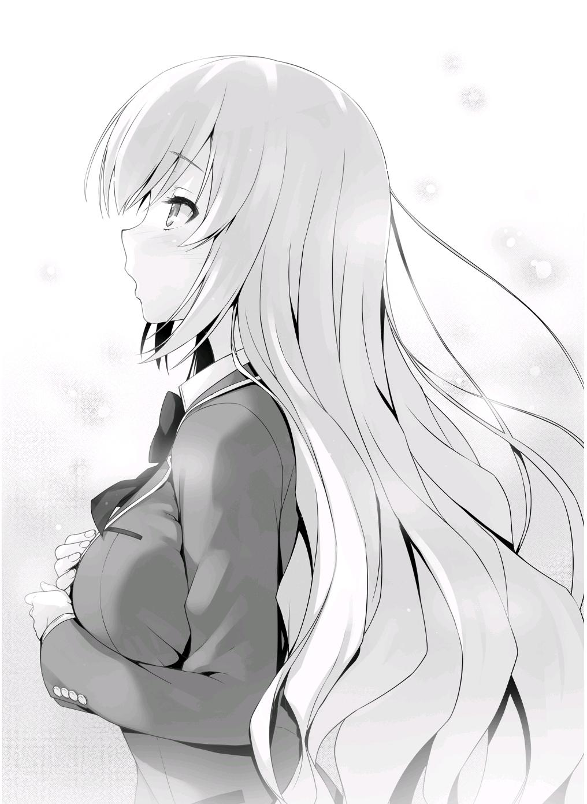
—Puede que sea un poco tarde, pero toma, un chocolate de San Valentín...
¿lo aceptarías? Cómo decirlo.... Nunca he dado algo así antes, pero... es la única forma de expresar mi gratitud, así que...
—No necesitas forzarte a darme algo, ¿sabes?
El día 14 ya pasó, pero no se sentía tan mal recibir chocolate de una chica.
Pero no es como si hubiera hecho lo que tenía que hacer para recibir el chocolate, así que no había necesidad de que ella se forzara.
—No me estoy presionando, ¿sabes? ¿No lo quieres?
—No.... Gracias.
Si lo demoraba más, podríamos sobresalir.
Acepté con gratitud el chocolate de Ichinose.
HISTORIAS CORTAS
ICHINOSE HISTORIA CORTA
EL PRIMER REGALO
Esa noche fui al Centro Comercial Keyaki en secreto, justo cuando estaba a punto de cerrar.
—Umm......me pregunto cuál es popular.....
La tienda de chocolates. Estuve vagando dentro de ella. Como ya es tarde por la noche, no quedan otros estudiantes en la tienda.
—Como pensé, ya no está...
Debería haber un espacio especial de San Valentín en esta tienda, pero como ya pasó, parece que el espacio fue eliminado.
Pero aún así, esta tienda tiene mucho chocolate en existencia.
Una gran variedad de chocolates, de diferentes tipos y colores. El rango de precios va desde varios cientos de yenes hasta varios miles. La falta de equidad es asombrosa.
A pesar de que atienden principalmente a los estudiantes, deben haber vendido mucho teniendo en cuenta la fecha.
—¿Quizás estás buscando chocolate de San Valentín?
Cuando me sentía desorientada, una empleada de la tienda me habló.
—Ahh, sí. Estaba buscando pero... ¿cómo lo supo?
—Lo tienes escrito en la cara. Que quieres darle un poco al chico que te gusta.
—¡Ehh! ¡No es así! Pero le debo mucho o tal vez debería decir que me salvó... como agradecimiento, pensé en darle un poco de chocolate...
Nunca le he dado nada a nadie antes. El primer regalo desde que nací.
Es extraño cómo terminó siendo chocolate de San Valentín.
—¿Cuál me recomienda?
—¿No deberías elegir el que prefieras? Se trata de intuición. Intuición.
—Intuición, ¿eh? Ese puede ser el caso.
En lugar de que otra persona decida por mí, es obvio que el mejor regalo sería uno que yo personalmente considere el mejor.
—Muy bien, entonces, me quedaré con este.
—Gracias. ¿Quieres adjuntar una tarjeta con un mensaje? ¿Algo como “Te amo” quizás?
—¡No es necesario, no es necesario!
Si le diera el regalo con un mensaje como ese, seguramente se confundiría.
En primer lugar, ni siquiera lo veo de esa manera. Es cierto. Sólo le estoy agradeciendo.
Le daré el chocolate que compré, eso es lo que pensé.
KARUIZAWA HISTORIA CORTA
UN DÍA ESPECIAL PARA LOS ESTUDIANTES
14 de febrero. Bajo el frío cielo invernal, llegué a este lugar, un poco más lejos del dormitorio.
Una invitación de Kiyotaka vía teléfono para reunirnos aquí.
Durante la conversación, desesperadamente le oculté a Kiyotaka el latido de mi corazón, que cada vez se aceleraba más.
Darle chocolate a alguien.
Si tuviera que empezar a contar desde la infancia, no sería la primera vez que lo hago. Pero cuando bajo la guardia, siento que mi cara se enrojece.
—¿Qué día es hoy? Muy bien, 5, 4, 3...
Para ocultar mi vergüenza, elegí burlarme de él con una prueba así.
—...Eso fue más fácil de lo que imaginaba. Al contrario, me hace sentir que voy a equivocarme.
—No te andes con rodeos, dame una respuesta directa, ¿sí?
No hay problema. Sólo necesito ser la yo genial. No hay problema.
—El día de-
—Muy bien, respuesta correcta.
Me sentí muy avergonzada e incluso mientras lo cubría con palabras, golpeé la cabeza de Kiyotaka con la caja.
—¿Esto es para mí?
—De hecho, preparé esto para Yousuke-kun, pero ya no es necesario.
Mentí.
La verdad es que lo compré hace un tiempo mientras estaba preocupada por este asunto.
Lo compré justo antes de que cerrara la tienda, así que dudo que alguien me viera.
—Para Hirata, ¿eh?
—¿Qué? ¿No te gusta eso?
—No, estaba pensando que eso significa que has pasado un buen rato preparándote para San Valentín.
No hay forma de que una mentira tan falsa y transparente funcione contra Kiyotaka, pero esa mentira es la única opción que tengo ahora. ¿No es así?
Si le dijera a Kiyotaka que lo compré para él, entonces... ¡eso me haría parecer una doncella enamorada!
—Soy de las que están bien preparadas. Aunque decidí que rompería con él, aún existe la posibilidad de que sea necesario, ¿no? Bueno, no hay manera de que alguien tan inexperto en el amor como tú lo entienda.
Es precisamente porque sé que es inexperto en el tema romántico por lo que pude hacer de esta mi ruta de escape.
Pero aún así, incluso Kiyotaka tendría expectativas.
Después de todo, sabe que hoy es 14 de febrero.
—Creí que habías elegido esta fecha porque esperabas algo de mí.
Por eso le pregunté eso.
—Lo siento, no se me pasó por la cabeza.
Grr.........
Tiene su habitual cara de póquer y mis palabras rebotan directamente hacia mí.
A pesar de que se las lancé directamente, mantuvo la calma.
—Por cierto, ¿conseguiste algo de alguna otra chica?
Creo que podré escuchar su respuesta con calma.
—No, nada en absoluto.
En otras palabras, esto significa que soy la primera chica de toda la escuela que le da chocolate a Kiyotaka.
—Te lo mereces. Un hombre que absolutamente no encaja con los demás~.
—Pero, ¿estás de acuerdo? Si me das esto, ya encajaré, ¿sabes?
—Eso te hace mucho más lamentable. Sólo significa que tendrás que buscar la salvación en mí.
Desearía que el día de hoy terminara sin que nadie más lo supiera.
Y en el Día Blanco, podré monopolizar a Kiyotaka, ¿no?
Sólo bromeaba, quiero decir, ¡eso significaría que no soy nada más que una doncella enamorada....!
Dentro de mi cabeza, caí en un estado de pánico.
KAMURO HISTORIA CORTA
LA INTENCIÓN DE KAMURO
Estoy en la habitación de Ayanokouji.
Por una determinada razón.
—Dame algo de beber. Va a llevar un tiempo.
Ayanokouji comenzo a preparar con desagrado mi petición de las cosas básicas.
—Entonces herviré un poco de té o café.
Después de decir eso, Ayanokouji comenzó a prepararlo.
Sospechaba de lo indefenso que parecía.
Sakayanagi me dijo que vigilara a este hombre, Ayanokouji, pero para ser honesta, no tengo idea exactamente de lo que es capaz.
—¿No hay chocolate?
—...Tengo un poco.
—Entonces tomaré un poco de eso.
Una vez más hice otra demanda sin sentido, como si lo pusiera a prueba.
—¿De qué quieres hablar? Si hace frío, podríamos tener esta charla en el vestíbulo.
—Nadie se interpondrá en nuestro camino aquí. Es el lugar ideal para nuestra conversación.
—¿De qué se trata exactamente?
—¿Por casualidad, estás siendo cauteloso?
—Sería mucho más extraño que no fuera cauteloso. Una chica con la que no estoy familiarizado, por no hablar de una estudiante de nuestra enemiga clase A, está en mi habitación.
—¿Dices que Yamauchi de tu clase es diferente?
Cuando dije eso, Ayanokouji me miró.
—¿Tienes curiosidad?
—Para nada.
—Ya veo. Entonces no hablemos de ese asunto. No importa de todos modos.
Ahora mismo, Yamauchi es irrelevante. Lo importante viene ahora.
—Esa carta sobre Ichinose de antes. ¿Qué te parece?
Una carta que dice que Ichinose Honami es una criminal.
—¿Qué quieres decir con eso?
—Exactamente como sonó. Sobre que ella es una criminal. ¿Lo crees?
—No tengo ni idea. Además, no me interesa.
—Aunque no te interese, seguro que lo has pensado al menos. Quiero decir, sobre si Ichinose es buena o mala,.
—No puedes etiquetar a alguien como malvado sólo porque sea un criminal. Así como no se puede etiquetar a alguien benévolo por el hecho de no ser un criminal.
Traté de desestabilizarlo. Para confirmar si este hombre puede ser utilizado o no.
Esa es la misión que se me ha encomendado.
MII-CHAN HISTORIA CORTA
¿COMPAÑEROS DE CLASE CONFIABLES?
Le pedí consejo a Ayanokouji-kun sobre cierto asunto en un rincón de un café.
Pero no pude tomar la iniciativa y se produjo un largo silencio.
Necesito hacer algo al respecto, necesito hacer algo al respecto.
Ese sentimiento tenía prioridad incluso sobre el asunto en el que quería que me aconsejara. Me siento mal por Ayanokouji-kun, que está perdiendo el tiempo conmigo....
—Umm, verás....umm, es sobre Hirata-kun.
De alguna manera me las arreglé desesperadamente para sacar mi voz.
Continué antes de terminar ahogando mis palabras.
—Quiero que me cuentes todo sobre él...
Creo que también lo expliqué mal, pero no hay nada que pueda hacer al respecto. Porque no puedo decirle directamente: 'Estoy enamorada de Hirata-kun'.
—Hirata y yo no somos muy unidos, ¿sabes?
Incluso después de verme temblar de nervios, el tono de Ayanokouji-kun siguió siendo el mismo de siempre.
—Pero Hirata-kun me dijo que Ayanokouji-kun es el más confiable...
—... ¿Lo dijo?
La impresión que tenía de Ayanokouji-kun era que es como el "aire". Describirlo como "aire" puede ser un poco grosero, pero no tengo nada más con qué compararlo. Es un chico cuyos pensamientos me resultan difíciles de explicar.
Además, parece un poco aterrador de una manera diferente a la de Sudou-kun y los otros. Pero...
—Sí. Dice que eres el más sensato de la clase. Realmente habló muy bien de ti.
Hirata-kun, que se preocupa más por sus compañeros que nadie y que vigila a sus compañeros más que nadie, elogió a Ayanokouji-kun.
Nunca antes había escuchado a Hirata-kun hablar de un amigo con tanta energía y eso me sorprendió.
Todavía no sé la razón de ello, pero...
—Recientemente, Hirata-kun y Karuizawa-san, uh... terminaron. ¿Ya has oído hablar de ello?
—Por supuesto.
No es sólo la clase C, sino que todo el año escolar presta atención a este tema.
La calamidad que sufrieron Hirata-kun y Karuizawa-san. Para mí también fue increíble.
Pero no puedo hacer nada por mi cuenta.
Porque no puedo confesarme sabiendo que puedo ser rechazada.
—Por eso, umm.....
Pidamos consejo. De Ayanokouji-kun, a quien Hirata-kun se refirió como el más fiable. Soy una cobarde, pero... para poder confesarme.
—...¿Sabes si hay alguien que le guste a H-Hirata-kun ahora mismo?
Demos el primer paso para superar esta cobardía. Definitivamente no puedo mirarme en el espejo, sabiendo que mi cara se está poniendo roja. Eso es lo que pensaba.
SAKAYANAGI HISTORIA CORTA
LOS PREPARATIVOS DE SAKAYANAGI
Hoy es 7 de febrero. Esta es una historia de cuando todavía jugaba con el juguete conocido como Ichinose-san.
Fue después de la escuela, cuando terminó nuestra clase, que me levanté tranquilamente de mi asiento con mi fiel bastón en la mano.
En mi caso, siempre llamo la atención cuando camino, ya que para mí el bastón es una necesidad absoluta.
Ser incapaz de actuar sigilosamente a veces puede ser un inconveniente.
—¿Estás bien hoy?
La que me dijo eso fue Masumi-san. Está tan lánguida como siempre.
—Creo que ya hablé de esto antes, pero hoy me pondré en contacto con él.
No lo nombré, pero ella debe saber a quién me refiero.
—Ahh.......Yamauchi, ¿verdad? ¿Está bien dejar a Ichinose en paz?
—Digamos que hay dos personas a las que desprecias delante de ti. Si solo puedes deshacerte de una, ¿qué harías tú, Masumi-san? Te desharías de la que más odias, ¿no?
—Bueno... supongo que sí.
—Esa es mi respuesta.
Ahora mismo, en lugar de Ichinose-san, estoy mucho más fascinada con Yamauchi-kun.
No lo dije en voz alta, pero estoy segura de que Masumi-san lo entiende.
—Ahh, ya veo. Entonces, ¿voy a regresar?
—Sí. Como siempre, agradezco su esfuerzo.
Al no recibir órdenes mías, Masumi-san abandonó inmediatamente el aula.
De camino a la clase C, vi a un estudiante solitario que se dirigía hacia mí.
Este estudiante varón solía estar rodeado de varios de sus seguidores hasta hace poco. Pero desde ese momento ha mantenido un perfil bajo y ahora no es más que un caparazón de su antiguo yo.
—Saludos, Ryuuen-kun.
Cuando lo llamé así, me miró con esos ojos feroces suyos que no han cambiado.
Para ser honesta, me hubiera gustado llamarlo Dragon Boy, pero si lo hiciera, ni siquiera tendríamos una conversación, así que evité decir palabras innecesarias y simplemente me detuve en silencio.
Después de que fue destronado como líder, se me ocurrieron varias teorías.
Pero ahora ya no son necesarias.
Ya que se retiró del escenario, puedo darme el lujo de dejarlo en paz.
No rechaces al que viene y no persigas al que se va.
Por supuesto, es una historia diferente cuando se trata de Ayanokouji-kun.
Sin importar si tiene intención de luchar o no, debe convertirse en un sacrificio por el bien de mi orgullo.
—¿Estás listo para el examen de fin de curso?
—Y me preguntaba qué dirías. No tengo intención de tener una charla casual contigo.
—Por favor, no digas eso. ¿No es difícil estudiar solo? Si así lo deseas,
¿por qué no te preparas para la prueba junto con nosotros?
Le hice una propuesta que nunca aceptaría.
—¿Realmente crees que puedes provocarme con algo así?
Parece que ha interpretado mis buenas intenciones como maldad. Ryuuen-kun empezó a caminar de nuevo y se me acercó sin piedad.
—¿Así que me dejas en paz para jugar con Ichinose?
Los rumores que se han estado propagando parecen haber llegado a sus oídos también.
—Hablando de eso, está siendo atacada por rumores de una persona anónima.
Pero Ryuuen-kun solo me miraba como si no tuviera ningún interés en eso.
Bueno, digamos que es mi turno por un tiempo más.
—Si ella fuera una estudiante como tú, constantemente malhablada, entonces no habría sufrido mucho daño, ¿no?
—¿Cuál es tu asunto conmigo?
—No hay ninguna razón detrás de esto ni nada. Sólo quería tener una pequeña conversación contigo. ¿No debería haberlo hecho?
—Una conversación, ¿eh? Entonces te seguiré el juego y te haré una pregunta también.
—Qué interesante. ¿Qué podría ser?
Esa reacción inesperada de Ryuuen-kun me complació.
Me pregunto qué tipo de pregunta me hará.
—Estoy robando grandes cantidades de puntos privados de ustedes, incompetentes, cada mes gracias a mi contrato con Katsuragi. ¿Por qué estás lidiando con eso?
No era algo inesperado, pero al menos es una pregunta que no me aburrirá.
—Porque no nos afecta significativamente. Para la Clase A, alimentarte sólo a ti no conlleva ningún riesgo. No tiene sentido esforzarse para llevarte a la expulsión. Además, mientras que el contrato contigo permanezca intacto, Katsuragi-kun nunca volverá.
—Kuku.....
Por primera vez, Ryuuen-kun se rió.
—Y pensar que no te fías de los peces gordos como Katsuragi.
—Es fácil tratar con enemigos externos, pero tratar con un aliado puede ser problemático en caso de que ocurra un error. Es un excelente peón siempre y cuando mantenga la cabeza baja y se deje usar.
Eso no significa que él tenga miedo de ser mi objetivo. Sólo intenta provocarme.
Obtener este tipo de reacción de Ryuuen-kun es precisamente la razón por la que siempre termino hablando con él.
—Por favor, haz todo lo posible para ahorrar 20 millones de puntos mientras aún puedas.
Si puede escapar a la zona segura, al menos parte de su orgullo permanecerá intacto.
—Haré exactamente eso.
—Ryuuen-kun, ¿puedo hacerte una pregunta?
—Si quieres saber cómo es un hombre, puedo enseñarte en cualquier momento, ¿sabes?
Estoy bastante satisfecha con esa provocación que se ajusta tanto a Ryuuen-kun.
—No hay necesidad de que me enseñes. Yo también tengo mi propio ideal.
¿O quizás estás diciendo que soy tu tipo?
Si me apuñalas, te apuñalaré yo a ti.
—No tengo ningún problema en devorar productos de baja calidad.
Si tocas una espina, te pincharás.
Una persona así es realmente valiosa.
—Si has terminado, me voy.
Aparentemente esta bestia ha sido realmente despedazada. A pesar de que era una persona de la que debía desconfiar, no como Katsuragi-kun o Ichinose-san.
De cualquier manera, es un enemigo menos problemático para mí, así que es una carga menos.
Puedo concentrarme únicamente en el deseo que tiene mi corazón, Ayanokouji-kun.
—Por favor, discúlpame entonces.
Pero ya se había marchado. Después de separarme de Ryuuen-kun, me dirigí de nuevo a mi destino, la Clase C.
Porque si mi objetivo se escapa mientras juego, sólo habría sido una pérdida de tiempo.
—Disculpa.
Dije mientras miraba en el salón de clases.
—¿Está Yamauchi Haruki-kun aquí?
La respuesta fue inmediata. De la persona misma.
—Ehh, ese soy yo, pero... ¿necesitas algo?
Yamauchi-kun me miró confundido. No parece que esté en guardia en absoluto.
—¿Te importaría darme unos minutos de tu tiempo?
—Por supuesto que estoy libre.......
Vas a hacerme pensar si te portas así de estúpido.
Bueno, lo que he preparado es un billete solo de ida.
—....Este no es el lugar adecuado, así que te esperaré en el pasillo junto a las escaleras.
Y así de fácil, invité a Yamauchi-kun.
Cielo o infierno.
Le daré un boleto que lleva a ambos.
Es libre de elegir el que prefiera.
ICHINOSE HISTORIA CORTA
UN PEQUEÑO SER
Este es un evento que ocurrió durante el período posterior a los exámenes de fin de curso y algún tiempo antes de que se dieran a conocer los resultados.
Mi plan era caminar hasta la tienda de conveniencia antes de regresar a casa después de que terminara el último período de clases.
Durante mi camino a la tienda, vi la espalda de una persona que conocía.
Era Ichinose; de primer año de la clase B. La seguían dos chicas que me parece que son sus compañeras de clase. Las vi rodeando a Ichinose y hablando con ella alegremente.
Dependiendo del tema de conversación, su ritmo al caminar disminuía, lo que simplificaba simplemente el adelantarse.
Por supuesto, tratar de levantar la voz y seguirlas no es algo que yo haría.
No sería un problema si sólo estuviera Ichinose, pero nunca antes he tenido una conversación decente con las otras chicas. Sería más fácil simplemente escabullirme. Aunque no estoy seguro de las otras estudiantes, Ichinose definitivamente me llamaría.
Supongo que debería volver más despacio. No es que tenga nada planeado una vez que llegue a casa.
Mientras caminaba por la calle hacia la tienda, de repente escuché los ligeros pasos de alguien corriendo desde atrás. Al poco tiempo, unas chicas llamaron a Ichinose y pasaron corriendo por delante de mí.
Las tres chicas de enfrente voltearon hacia la voz. Naturalmente, Ichinose se fijó en mí.
Seguramente se dio cuenta de lo incómodo que me sentía al verme la cara ya que sólo mostró una sonrisa. No me llamó. Como se espera de una estudiante modelo muy considerada.
Después de que se unieron a ellas las otras chicas, Ichinose y su grupo comenzaron a hablar de nuevo, como si nada hubiera pasado.
—Bueno, entonces... la tienda a continuación.
Observé las espaldas de Ichinose y sus amigas por un tiempo antes de dejarlas en la tienda. Después de comprar todo lo necesario, salí.
Debieron ser sólo dos o tres minutos, pero ya no se veía a Ichinose y a su grupo.
Vamos a casa, pensé mientras me dirigía de nuevo hacia los dormitorios.
Fue en ese preciso momento.
—¡Aquí, aquí Ayanokouji-kun! —Escuché una voz.
Miré en la dirección en la que salía una mano de entre los árboles que estaban a una distancia del camino, y vi a Ichinose.
—¿Qué estás haciendo allí?
—Entonces, ¿quizás deberías venir aquí?
Mostró una sonrisa como la de una niña haciendo una broma, como si me pusiera a prueba.
Como me animó a acercarme, me dirigí hacia ella.
Sin embargo, una vez que llegué a su lado, tampoco hubo ningún cambio.
—¿Algo? ¿Hmm? No, quizás no después de todo.
Sin entenderla, incliné mi cabeza, lo que fue seguido por Ichinose riendo ligeramente.
—Quería hablar contigo un poco, creo.
—Entonces.... quieres decir ¿aquí?
—¡Ven, vamos, siéntate, siéntate! Si nos escondemos aquí no nos verán los demás, es sorprendente.
No, bueno, puede que tenga razón, pero...
Es pleno invierno, naturalmente hacía mucho frío.
—Intentaba ser considerada a mi manera, ¿sabes? Pensé que no querías hablar en medio de las otras chicas.
Parece que se las arregló para entender mi expresión de antes.
Lo que se esperaba de Ichinose, debo decir.
De todos modos, para progresar con la conversación también me senté.
Y pensar que llegaría el día en que me sentaría aquí de esta manera.
Debo decir que los árboles nos ocultan muy bien.
También estaba a una distancia significativa del camino principal, así que si hablábamos en voz baja, pocos se darían cuenta.
—¿No tienes frío?
—¡Está bien, está bien! —Ichinose se rió—. Oye, ¿cómo te fue en el examen de fin de curso?
—No estuvo mal. Toda la clase debería estar bien, supongo.
—Ya veo. Eso es bueno. Estamos al final de nuestro primer año, así que,
¿no odiarías que faltara alguien?
—La clase B no debería preocuparse, ¿verdad? Siempre están en la cima de los exámenes escritos.
—Por supuesto que mi clase es importante para mí, pero también todas las demás clases.
No quería perder a nadie. Ni siquiera a sus rivales, es lo que decía.
Normalmente, la gente que dice eso sólo lo hace por las apariencias. Cuantos menos rivales haya, más gana tu clase como resultado.
Quizás Ichinose es una excepción. No quiere que nadie abandone la escuela desde lo más profundo de su corazón.
Es un ideal.
Pero eso no significa que sea sólo palabrería. En caso de que haya un examen en el que alguien de la clase B o de cualquier otra clase tenga que abandonar la escuela, ella sin duda protegerá a su clase.
No quiere que nadie sea expulsado, pero dará prioridad a sus compañeros de clase. Esa es su posición.
—¿En qué estás pensando?
—Bueno, no... nada exactamente. Pero aún no me he acostumbrado a esta situación.
Un chico y una chica se escondían en las sombras de las hojas mientras conversaban en voz baja. Esa situación.
Sería extraño si alguien no tuviera pensamientos extraños sobre esto.
Esos eran mis pensamientos, pero los ordené inmediatamente. Ichinose justo delante de mí no tenía absolutamente ningún pensamiento sobre esto.
—Por cierto, Ayanokouji-kun, ¿Tokio?
—¿Eh?
—Sabes, esta escuela tiene muchos estudiantes de la zona de Tokio, pero también hay estudiantes de fuera.
¿De verdad? Eso es nuevo para mí.
—Bueno, dentro de la ciudad, supongo.
—¿Supongo? ¿Así que de uno de los 23 distritos?
—Bueno, sí.
—¿Qué secundaria?
—Eso es un secreto.
—Ah, ¿tal vez eso fue demasiado? Lo siento si te hice sentir mal.
Tal vez pensaba que en el pasado fui uno de esos estudiantes acosados que se ausentaban de la escuela o algo así. Por eso su disculpa.
—No, está bien. Es sólo que mis compañeros me advirtieron que no hablara demasiado.
—Ah, ya veo. Quizá sea demasiado saber de qué escuela vino alguien.
No parecía entenderlo, así que se las arregló para convencerse de alguna manera.
Estoy tan feliz de que las clases en esta escuela fueron diseñadas para competir entre sí.
—Por cierto Ayanokouji-kun, ha pasado bastante tiempo desde que nos conocimos, ¿verdad? Por eso, eh bueno, pensé que quería preguntar cosas que los amigos se preguntan.... así que por eso, es lo que acabo de hacer.
—No, está bien. No hay mucha gente que se relacione conmigo, así que no sabía qué hacer.
—¿De verdad?
—Después de todo, soy básicamente una existencia sombría en mi clase.
No, puede que sea realmente oscuro, la verdad sea dicha.
Dije negativamente, pero parecía que Ichinose no pensaba así de mí.
—En lugar de oscuro, ¿no eres más calmado? ¿O estoico tal vez?
—Eso puede ser cierto si piensas en ello en términos positivos, tal vez...
Eso sería más bien agradable.
—¡Así es! No parece que estés en el mismo curso que nosotros, más bien,
¿das la sensación de un senpai?
Parece que me está elogiando, ¿está bien alegrarse entonces?
—Por cierto, ¿estaría bien si voy a tu habitación en otro momento?
—¿Eh? A-ah, seguro...
Fue tan repentino, como una flecha volando y mi corazón dio un vuelco.
—Me preguntaba cómo es tu habitación, ¿sabes? ¡Entonces es una promesa!
Y así Ichinose y yo hicimos una promesa en un rincón junto a los árboles que estaban a lo largo del camino.


VISÍTANOS EN NUESTROS
DIFERENTES SITIOS
http://gladheimtranslations.blogspot.mx/
https://twitter.com/GladheimT
https://mastodon.social/@GladheimT
Si alguien desea hacer una donación
https://ko-fi.com/gladheimtranslation
https://www.buymeacoffee.com/gladheimtls
https://patreon.com/GladheimT